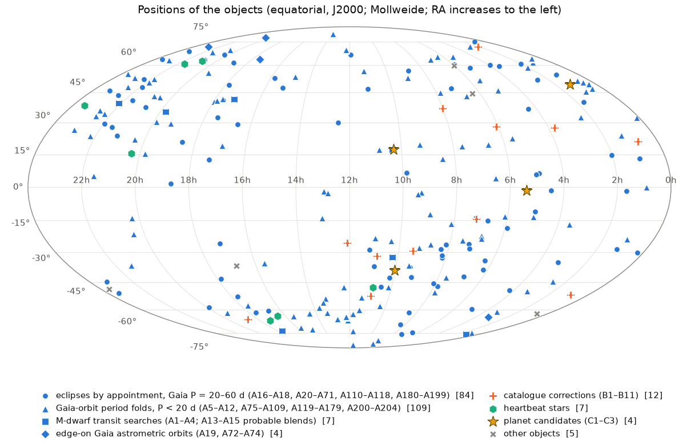
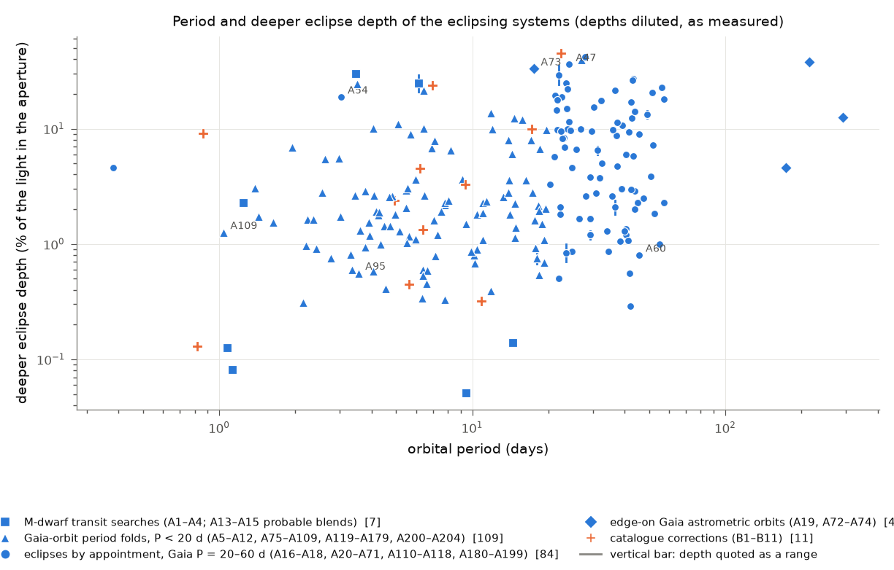
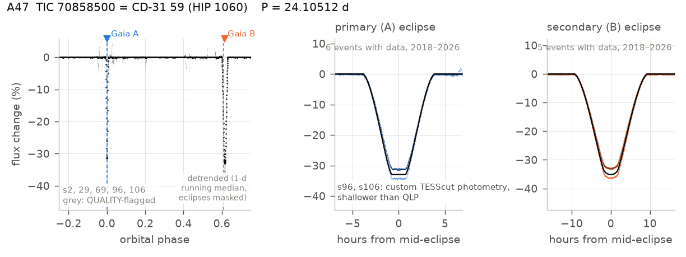
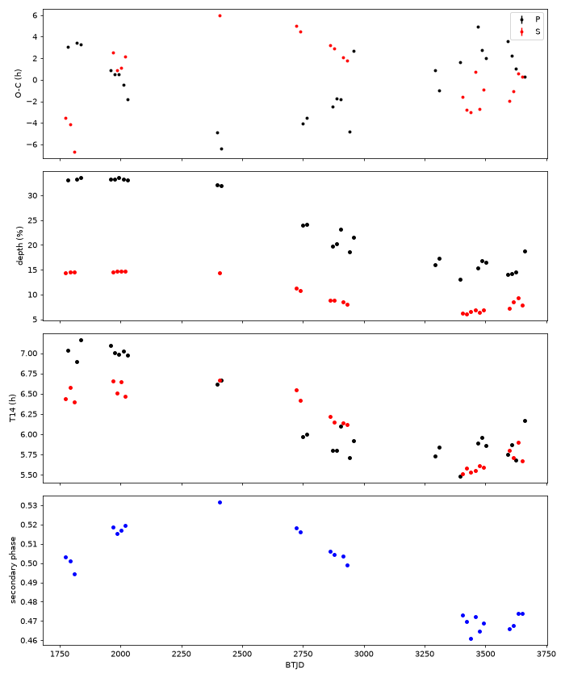

October 31, 2026
The author's role and the use of AI systems are set out in Section 6, Contributions and AI use. Per-object analyses, available light curves and supporting measurements are in the Supplement and repository; catalogue corrections, probable blends and other objects are also documented in the earlier working draft (Appendix B).
AAVSO keywords = Eclipsing Binaries; Catalogues, Databases, Surveys; Period Analysis, Period Change; Extrasolar Planets; Variable Stars (individual), Observing Targets: HIP 1060, HD 170829, V1192 Cas, TYC 4590-364-1
ADS keywords = binaries: eclipsing; binaries: spectroscopic; catalogs; planetary systems; stars: variables: general; techniques: photometric
We identify 658 eclipsing systems in public TESS photometry: 610 confirmed and 48 probable. All 658 meet the specified seven-group catalogue standard. 18 further signals remain plausible and are excluded. One hundred seven systems come from a method we call eclipses by appointment: a Gaia DR3 spectroscopic orbit with a period of 20–60 d predicts conjunction windows in which TESS can reveal eclipses that a blind period search misses. Among 3,749 stars with G < 11 the method found about 1.7 new eclipsing binaries per hundred stars; a G 11–11.5 subsample contributes 42 confirmed systems. Gaia-orbit period folds contribute 543 systems, the nearby-M-dwarf-selected search contributes four (including neighbouring hosts), and near-edge-on Gaia astrometric orbits contribute four. The period-fold sample includes fainter spectroscopic binaries and two probable cases from a near-orbital-period pilot. An adaptive exploratory conjunction pilot adds two confirmed systems while retaining a known recovery separately; its selection and stopping do not support an unbiased yield estimate. The fixed remaining-screened magnitude comparison reviews 60 candidates in each of G 11.5-12 and G 12-12.5; its physical confirmation fractions retain known recoveries and are not completeness or causal magnitude estimates. The analyses combine raw-flux measurements, timing and coverage tests, Gaia covariance, alternative reductions and source attribution, with physical classification kept separate from scoped catalogue status. Twenty Gaia DR3 orbit solutions are contradicted under the paper's stated comparison rule; nine eccentric binaries are identified as new heartbeat stars, one also eclipsing, and a tenth is a candidate; eleven existing catalogue entries are corrected. Harvard plates from 1890–1990 support the eclipses of 17 of 31 tested systems, ASAS-SN photometry supports 20 of 55, and ASAS-3 supports 10 of 34. A transit search of about 3,100 nearby M dwarfs found no new planet where about 1.2 detections were expected under the stated assumptions. We recover both TIC 4206066 candidates and identify TOI-5394.01 as an M-dwarf occultation. Per-object evidence, ephemerides where constrained, status limitations and follow-up tests accompany the sample.
Gaia DR3 published about 180,000 spectroscopic orbits (Gaia Collaboration, Arenou et al. 2023), each giving a period, an eccentricity, an argument of periastron and a time of periastron for a binary resolved only in velocity. TESS has photometered most of those stars in its full-frame images over the same years. Where the two overlap, an orbit seen within a degree or two of edge-on must eclipse, and TESS records the eclipse whenever a conjunction falls in an observed sector. For periods below about 20 d a period search at Gaia's period finds such eclipses easily. Between 20 and 60 d it does not: a 27-day sector holds at most one eclipse of each kind, and multi-sector baselines of years can be phased only when the period is already known to minutes or the single events are deep enough to be found one by one. Catalogued eclipsing binaries are correspondingly scarce in that period range, and the Gaia orbits that would gain most from an eclipse, which fixes the inclination and with it the companion mass, are the ones TESS searches least well.
Gaia DR3 contains about 800,000 non-single-star solutions for astrometric, spectroscopic and eclipsing binaries (Gaia Collaboration, Arenou et al. 2023). The spectroscopic processing, restricted to single-lined F–K stars brighter than magnitude 12, delivered 181,327 SB1 orbits after filtering (Gosset et al. 2025), and the astrometric processing about 165,500 orbits (Halbwachs et al. 2023a). The SB1 orbits are mostly reliable: of 827 binaries shared with the SB9 catalogue, 655 agree to within 10% in period and eccentricity (Merle et al. 2026), and a comparison with LAMOST and GALAH velocities removed the physically unlikely short-period, high-eccentricity solutions (Bashi et al. 2022). Double-lined solutions fare worse, matching the photometry in period and eccentricity for about half of SB2 eclipsing binaries (Rowan et al. 2023) and 20% of SB2 heartbeat stars, against 85% of SB1 ones (Callahan et al. 2025).
TESS eclipsing binaries are catalogued by Prša et al. (2022; 4,584 systems from sectors 1–26), IJspeert et al. (2021, 2024) and Kostov et al. (2025; 10,001 vetted systems from the full-frame images and about 900,000 unvetted machine-learning detections), and Gaia DR3 adds 2,184,477 candidates from its own photometry (Mowlavi et al. 2023). All favour short periods: the 7,936 new systems of Kostov et al. (2025) have a median period of 3.5 d and a 95th percentile of about 11.6 d. Prša et al. (2022) attribute this to the sector length, which suppresses detections from periods as short as 13 d, and to the box least-squares search, which cannot find single eclipses. Planet searches meet the same limit with single-event methods, estimating the period from one transit's shape (Osborn et al. 2016) or catching a second event from the ground, which also finds eclipsing binaries such as a 61.8-d M dwarf eclipsing a Sun-like star (Gill et al. 2020); "duotransits", one transit in each of two TESS years, typically have periods above 20 d (Hawthorn et al. 2024). In each case the event is found first and the period afterwards.
Heartbeat stars are eccentric binaries that brighten near periastron through tidal distortion, irradiation and Doppler beaming (Kumar et al. 1995; Welsh et al. 2011; Thompson et al. 2012); some show tidally excited oscillations (Fuller and Lai 2012; Fuller 2017). Kepler supplied the first samples (Kirk et al. 2016; Shporer et al. 2016), and the TESS searches have been at short periods: 23 systems at P = 2.7–20 d (Li et al. 2024a), 180 at P ≲ 10 d (Solanki et al. 2025) and 112 from Gaia spectroscopic orbits, with the SB1 orbits cut at P < 13 d (Callahan et al. 2025). A third body shows in eclipse times through the light-travel-time effect (Irwin 1952); eclipse timing found third bodies in 222 of about 2,600 Kepler binaries (Rappaport et al. 2013; Borkovits et al. 2016), and 403 known eclipsing binaries have a Gaia DR3 solution at a period much longer than the eclipse period (Czavalinga et al. 2023a). Over longer baselines, the Harvard plates, about 500,000 taken from 1885 to 1992 and digitised by DASCH with photometry good to about 0.1–0.15 mag (Laycock et al. 2010; Grindlay et al. 2012; Tang et al. 2013; Williams 2025), have been combined with TESS eclipse times to follow a binary's period over a century (Zhang et al. 2026).
New variables are registered in the AAVSO International Variable Star Index (VSX; Watson et al. 2006); times of minimum from AAVSO observers appear regularly in this journal (e.g., Samolyk 2022), and eclipsing binaries found in survey and archival data have been reported here, entered in VSX and characterised with the authors' own photometry (Romanov 2021; De Elías 2025). Guinan et al. (2012) set out the follow-up that eclipsing binaries from space missions need from observers.
Orbits and eclipses have been combined in both directions. The EBLM programme measured orbits for 118 binaries first seen as shallow WASP eclipses (Triaud et al. 2017), and joint fits of this kind supply the masses and radii in DEBCat (Southworth 2015). Starting from Gaia, Rowan et al. (2023) measured masses and radii of 122 stars from SB2 orbits and ASAS-SN light curves, Schmidt et al. (2023) matched SB1 orbits to TESS Objects of Interest, and Halbwachs et al. (2023b) selected 41 bright astrometric binaries that could eclipse. The conjunction prediction itself is not new: Tarrants and Mendes (2023) applied it to Gaia DR3 SB1 elements to vet known TESS and K2 planet candidates and called it their least reliable test, and Yamaguchi et al. (2024) applied it to one 358-d orbit in search of self-lensing pulses. Eclipses in Gaia orbits have been found by other routes: Callahan et al. (2025) found 18 among their 112 heartbeat candidates with a periodogram, El-Badry et al. (2026) found 25 among the orbits of compact-object candidates, 14 of them hierarchical triples with an eclipse period much shorter than Gaia's, and Beck et al. (2024) searched the six oscillating red giants whose Gaia astrometric inclinations are within 3° of edge-on, a sample that includes our A60, which they did not flag. The search itself, examining TESS only inside the windows that Gaia DR3 spectroscopic orbits predict, was taken two weeks before this work began. Chopard-Vilhem (2026a) deposited on Zenodo on 2026 September 27 a survey of 9,389 Gaia DR3 SB1 orbits whose conjunctions are predictable to within a day, in up to three TESS sectors each, reporting 93 eclipsing systems at periods of 13–119 d, 90 of them not previously known to eclipse, with masses and radii for 54. Its object list is embargoed until the accompanying paper is accepted, so the overlap with the systems reported here is not yet known; his period range contains ours, and some overlap is likely. A second record (Chopard-Vilhem 2026b) applies the same test to 1,726 Gaia astrometric orbits within 1° of edge-on. Its latest open version (1.2.0) retains seven surviving detections; its ten dossier entries include withdrawn or known systems and are not ten new discoveries. A comparison against all 235 rows of our object ledger, using positions within 20″ in the parent sample and exact TIC identifiers in the dossier, shares one claimed detection (HD 170829, our A20, found by both searches with the same period). A73, A74 and the withdrawn TYC 3707-251-1 are present in the parent sample; their previously noted pilot-window or event correspondences are not shared claimed detections. All 74 physically confirmed R-labelled and returned additions have exact Gaia DR3 identifiers available; none matches the open parent list or dossier, and none matches a dossier TIC identifier. The separate 93-system spectroscopic list remains embargoed, so its overlap is unknown. Neither record was found by the earlier web and arXiv searches, which did not include Zenodo. The dated comparison and its matching limits are retained in reviews/novelty-reconciliation/README.md. This paper claims no priority for the method; its contributions include the objects, archival recoveries and contradicted Gaia orbits.
The work reported here began from a planet question. A public report of two transiting-planet candidates around the K dwarf TIC 4206066 (Rabtsevich 2026) led to a transit search of about 3,100 nearby M dwarfs in TESS full-frame-image light curves (Section 2.3). That search found no new planet (Section 4.6), recovered both reported candidates without using the reported periods or epochs, and turned up four uncatalogued eclipsing systems (A1–A4), two of which had Gaia DR3 evidence of a stellar companion that had never been combined with the TESS photometry. We therefore inverted the search: starting from Gaia's spectroscopic orbits, we tested each for eclipses in TESS. For orbits shorter than 20 d this is a period search at Gaia's period (Section 2.4), and it found 42 uncatalogued eclipsing systems.
For longer periods a Gaia orbit still fixes the conjunction times: the period, the time of periastron, the eccentricity and the argument of periastron together determine when each conjunction falls, to about 2 d at TESS epochs for the median orbit in our sample. Eclipses can only happen at conjunction, so the search can be confined to the predicted windows and use a single-event statistic instead of a period search over years of data. The number of trials falls from a four-year period grid to the windows, which hold about half of the usable data for the median star, and an eclipse that lands on the predicted conjunction is attributed to the star with the Gaia orbit, which is the hardest step in any blended-field TESS search. We call this eclipses by appointment (Section 2.5). It accounts for 107 of the 658 systems in this paper.
The contributions of this work are (i) the measured appointments-search yield, about 1.7 new eclipsing binaries per hundred Gaia orbits searched at G < 11; (ii) 658 systems with physical eclipse evidence, with ephemerides where constrained (Table A1 and Appendix C); (iii) eleven catalogue corrections and twenty Gaia DR3 orbit solutions that the eclipses contradict; and (iv) a null planet result with its expected yield estimated under stated assumptions, and the reason it was null. "Uncatalogued" means absent from the seven catalogue groups specified in Section 2.7; literature searches are a separate, limited check, not unseen by any pipeline: 72 of the first 104 carry an automated threshold-crossing event of the SPOC or TESS-SPOC pipelines (Jenkins et al. 2016; Caldwell et al. 2020) that was never vetted or promoted to a TESS Object of Interest, and a full-text search of NASA ADS found a prior mention of eclipses for only one (A7; Bryant et al. 2023). Physical classification and catalogue novelty are separate. The sample contains 610 confirmed and 48 probable systems; 18 plausible signals in the review registers are excluded. Stable keys R001-R409 C01-C72 and P001-P026 preserve the individual review keys and current verdicts (Appendix C). The object labels (A1–A204, B1–B11, C1–C3) were assigned in this work and are used as identifiers throughout; the A-labelled per-object entries with their light curves are in the Supplement, while the individual physical reviews are in the repository, and the data and code are in the deposit described in Appendix B.
All photometry is from TESS (Ricker et al. 2015), retrieved from MAST. The primary source was the Quick-Look Pipeline (QLP; Huang et al. 2020; Kunimoto et al. 2021) full-frame-image light curves, at 30-min (sectors 1–26), 10-min (27–55) and 200-s (56 onward) cadence. For the long-period work we used the raw aperture flux SAP_FLUX (Section 2.8). Independent reductions of the same pixels served as cross-checks: SPOC 2-min (Jenkins et al. 2016), TESS-SPOC (Caldwell et al. 2020), TGLC (Han and Brandt 2023), eleanor (Feinstein et al. 2019), GSFC-ELEANOR-LITE (Powell et al. 2022), TASOC (Handberg et al. 2021), CDIPS (Bouma et al. 2019), TARS (Boyle et al. 2026), T16 (Hartman et al. 2025) and TEQUILA (Ogunwale et al. 2025). Times are BTJD = BJDTDB − 2457000.
Orbits are from the Gaia DR3 (Gaia Collaboration, Vallenari et al. 2023) table nss_two_body_orbit (Gaia Collaboration, Arenou et al. 2023; Halbwachs et al. 2023a; Gosset et al. 2025): the spectroscopic types SB1, SB2, SB1C, SB2C and AstroSpectroSB1, and the astrometric Orbital type (Section 2.6), matched to the TESS Input Catalog (TIC 8.2; Stassun et al. 2019; Paegert et al. 2021) by Gaia source identifier.
Gaia gives the time of periastron Tp relative to J2016.0 = BTJD 389.0. Conjunction A is at true anomaly ν = 90° − ω and conjunction B at ν = 270° − ω, with ω the argument of periastron of the star Gaia tracks, which is behind its companion at A. From ν follow the eccentric anomaly E, the mean anomaly M = E − e sin E, and
tc = Tp + 389.0 + M P / 2π (BTJD), plus integer multiples of P.
Uncertainties were propagated by Monte Carlo through Gaia's errors on P, Tp, e and ω; the conjunction tests used Gaia's full covariance matrix. For circular solutions ω = 0 was assumed. “Primary” denotes the deeper eclipse; a transit is the smaller star crossing the larger, an occultation the smaller star hidden.
The parent sample was the TIC 8.2 dwarfs with Teff 3200–4300 K, Tmag 8.5–11 and distance < 40 pc, less every star with a TESS Object of Interest (TOI) or community TOI and every star with a TIC contamination ratio of 0.05 or more; 1,299 of these had 3–8 QLP sectors. Further searches covered fainter and smaller stars, crowded fields, single transits, periods of 0.17–0.5 d and 78 known planet hosts. The searches used box least-squares (BLS; Kovács et al. 2002), with completeness measured from injected transits. Surviving peaks faced odd/even tests, a cyclic-roll null that keeps red noise and destroys transits, difference-image centroids in two field orientations, and archive queries.
The first sample was every Gaia DR3 spectroscopic orbit with P < 20 d and parallax > 10 mas: 736 science orbits, plus 14 Gaia eclipsing binaries as controls, all recovered. A coherent BLS over the flattened QLP flux searched ±max(5σP, 0.1%) around PGaia and PGaia/2, scoring each star with a z value against 300 random periods on the same star. Triage removed VSX matches, rotators and ellipsoidal variables, and required an eccentric system's eclipse to land on Gaia's predicted conjunction.
The same code then ran on orbits with parallax ≤ 10 mas or missing. At G < 9, an independent re-check kept seven (A8–A12, B6, B7). At 9 ≤ G < 10, 2,559 science targets among 3,022 orbits were searched, and 199 of 218 controls (91%) reached z ≥ 5, which measures the search's completeness. After triage and catalogue searches, 38 folds showed eclipse-shaped dips and 37 were re-analysed to the full protocol of Section 2.7. About 175 eclipse-like stars with a VSX entry within 30″ and nine marginal dips were not pursued, so this yield is a lower bound.
The fold was then extended to 10 ≤ G < 11.5 in batch (8,492 and 7,470 orbits in the two subsamples; 6,919 and 6,870 searched; 479 of 549 controls, 87%, at z ≥ 5 in the first). Here the per-object re-analysis of Section 2.7 was replaced by the same tests run in bulk: triage and the catalogue searches as above, a visual read of every fold, a search of the vetted eclipsing-binary tables, the conjunction test on Gaia's orbit (offset within 0.03 in phase), per-sector depth consistency, and a difference image of the eclipse deficit from TESScut relative to the target and every Gaia neighbour. A review with separately written code then queried ExoFOP, VSX and SIMBAD for every survivor and re-folded 60 of them, drawn at random, from freshly downloaded QLP flux with a blind BLS over 0.5–25 d. The initial survivors were listed as candidates until they had had the per-object re-analysis of Section 2.7; the eight that the difference imaging had flagged and the 60 shallowest of the others (to 28 ppt) have had it, and the 66 it confirmed are counted (A119–A179 and A200–A204, Section 3.2). Two limits of the batch tests showed in that pass: the conjunction test cannot tell an eclipse from the tidal minimum of a heartbeat star when the conjunction falls near periastron (two of the 35 were heartbeat stars, Section 3.3; in four more the conjunction fell near periastron and the eclipse model won outright, and in two a real tidal signal and a real eclipse coexist), and the difference-image offsets select crowded fields and pixel boundaries rather than off-target signals (seventeen of seventeen examined were artefacts: of crowding, of a target sitting on a pixel boundary, of an uncalibrated pixel scale with the measuring box centred on the rounded pixel, of a half-period stack that mixed two unequal eclipses, or of out-of-eclipse windows that fell inside a long eclipse).
The spectroscopic-orbit period folds also extend to the fainter Gaia SB1 population at G 12.75–13 and Gaia P < 20 d. The selection stratum contains 2,346 orbit rows; the reviewed subset is not a complete census of that stratum. Its 35 included systems have Gaia G = 12.753–12.993 and selection-orbit periods 1.867–19.643 d. These Gaia values describe selection, not newly measured eclipse ephemerides or proof that the eclipses belong to the Gaia orbit. Individual raw-flux, timing, alternative-reduction, attribution and catalogue checks use the same criteria as the brighter period-fold populations.
Sample and windows. Gaia DR3 holds 11,446 spectroscopic orbits with 20 ≤ P < 60 d and G < 12. We searched three subsamples, G < 10 (1,422 stars, including 40 Gaia eclipsing binaries as controls), G 10–11 (2,327 stars) and, during the analysis, G 11–11.5 (2,608 stars): 6,357 stars in all. For each orbit the conjunction times and their uncertainty σT were computed at every TESS cycle (Section 2.2). Each window had a half-width of max(3σT, 0.25 d), capped at 7 d.
Statistic and cuts. In each window the QLP SAP_FLUX (15-min bins) was searched with a single-event box of 1–14 h against the mean of two side windows 0.75–2.5 durations out. Two shape tests followed: the far ratio (the depth against a baseline 3–6 durations out, divided by the near depth, about 1 for an eclipse) and a deficit in both halves of the box. The null was the same statistic in 40 random windows on the same star outside every predicted window, giving z = (SNR − median)/MAD, a rank against the star's own null rather than a Gaussian significance. A candidate needed SNR ≥ 8, a far ratio in [0.6, 1.6], the event within 3σT of a conjunction, no null window reaching it, and z ≥ 8 where a null exists. Of the 40 controls, 32 showed an eclipse at the predicted conjunction.
Coverage. Over the 3,708 science stars of the first two subsamples the windows hold a median 51% of the usable cadences, and every cadence for 165 stars (4.5%), where no null exists; for 591 more (16%), z is undefined because all null windows land on the same feature (MAD = 0). Seven of the 54 reported systems therefore never faced the z test (A37, A40 and A42 with no null; A27, A51, A54 and A64 with MAD = 0) and passed on the remaining cuts. One, A18, failed a cut (far ratio 2.19); it was taken from the raw SNR ranking before the cuts were written and rests on six eclipses and its re-analysis.
Classification. Candidates passing the cuts were matched against VSX, ASAS-SN, Prša et al. (2022), IJspeert et al. (2024), Kostov et al. (2025) and SIMBAD; a VSX entry of a non-eclipsing type did not remove a star. The remaining 161 (G < 10) and 280 (G 10–11) stars were classified visually. Every star classified as an eclipser, and every unusual non-eclipse signal, was re-analysed independently (Section 2.7), with three exceptions (Section 3.1): 16 at G < 10 and 54 at G 10–11. At G 11–11.5, 408 stars passed the cuts, 29 of them catalogued eclipsing binaries recovered blind, and the 379 others were classified visually: 47 eclipsers and three possible ones. Forty-five of these 50 candidates have individual reviews: the original twenty counted systems (A180–A199), followed by 25 historical reviews. The latter comprise one known recovery, one retained plausible signal and the 23 systems reconciled here using the bounded checks of Section 2.7. This reconciliation supports 22 confirmed additions and one plausible signal. Five candidates remain unreviewed and are excluded.
Of the 6,652 Gaia DR3 astrometric orbits with P < 300 d and G < 13, we kept the 191 whose inclination, recovered from the Thiele–Innes coefficients, is within 2° of edge-on; the inclination served only to rank. For the 177 with QLP light curves, raw SAP flux was searched around Gaia's period and its half, and separately with a per-sector box search over 0.3–13 d and an inspection of the deepest single events.
Underexplored selection and observational gaps. A frozen queue of 40 remaining screened period-fold candidates was reviewed in increasing Gaia G, covering G = 11.5033-11.6584 within the G 11.5-12 selection stratum. The same bounded raw-flux, measured timing, source-attribution, alternative-reduction and Gaia-geometry checks support 39 confirmed and one probable system; the probable TIC 253126207 retains unresolved attribution after a completed review. Periods come from measured eclipse midpoints and same-kind cycle counts where depths alternate. Predicted conjunction centers are search guides, not measured timing points. Timing errors retain their individual meanings, including scatter inflation where specified. Operational processing groups are provenance only.
An independent exploratory pilot examined underexplored windows using existing methods. The appointments branch was adaptively extended from 48 to 96 selected science targets: 90 had TIC matches, 89 had usable QLP sectors, six lacked a TIC match and one matched target lacked usable QLP data. It produced two confirmed new systems and one known IJspeert et al. (2024) recovery, retained as a control. The near-TESS-orbital-period branch examined 72 targets (including the initial 24), retaining two probable eclipsing systems because capable close neighbours prevent definitive attribution. Sixteen long-duration targets gave no promoted case; availability queries for eight prior single-event targets found no new sectors. Failed and unavailable attempts remain in the denominators. Adaptive selection and stopping make these pilot counts unsuitable as unbiased occurrence, completeness or yield estimates. The target selections, attempted observations and outcomes are retained separately from the frozen 40-target queue.
Fixed magnitude comparison. Sixty remaining screened Gaia spectroscopic-orbit period-fold candidates were reviewed: 30 at G = 11.5-12 and 30 at G = 12-12.5, the latter split equally between historical chunks 6 and 7. The initial 120-target queue was seeded (2026103101) before review. Four inventory-magnitude boundary substitutions (seed 2026103102; two active and two reserved) occurred while the first processing group was being reviewed, solely by the magnitude rule. Original queues are retained. Historical inventory magnitudes differ slightly from Gaia DR3 values: later crosschecks showed the removed objects remained inside the DR3 intervals. All final 120 satisfy both definitions. This is a sample from boundary-valid historical screening strata, not a pristine random sample of all eligible DR3 stars. Both the first 60 and the reserved second 60 have now completed the bounded review, giving 60 selected targets in each magnitude interval. No reserved target was replaced after review. Scientific summaries use Gaia DR3 G, with inventory G preserved separately.
Completion of the bright screened stratum. The remaining 73 screened Gaia spectroscopic-orbit period-fold candidates at actual Gaia DR3 G = 11.5-12 (range 11.6578-11.9967) completed the same bounded review: 69 confirmed, 3 probable and 1 plausible; 72 are eligible unique additions. This follow-up completes that remaining bright stratum and is separate from the fixed balanced 120-target magnitude comparison, whose sample and descriptive results remain unchanged. Historical inventory-boundary exclusions that meet the actual DR3 interval retain their original substitution provenance. No targets were substituted in this follow-up. The remaining screened inventory contains 266 candidates: 90 at G 12-12.25, 96 at G 12.25-12.5 and 80 at G 12.5-12.75. Five weaker conjunction candidates, 58 lower-score candidates and 48 unexecuted exploratory appointment targets are separate populations. These outcomes do not measure blind discovery yield or completeness.
Original all-event re-analysis. In the original analyses, every candidate from the appointments search, the G 9–10 fold and the edge-on search was re-analysed independently, with separately written code and with the aim of refuting the claim (Section 6). Each original re-analysis re-measured every eclipse from raw SAP flux, including flagged cadences; fitted a linear ephemeris to all events, so that the period comes from the eclipses themselves; located the flux deficit in difference images relative to the target and every Gaia neighbour bright enough to produce it; re-measured the eclipses in at least one independent pipeline; compared the eclipse geometry with Gaia's orbit and mass function; and predicted the next eclipses.
Conjunction-selected evidence reconciliation. The 23 later-reviewed G 11–11.5 systems were assessed from the deciding raw-event, timing and coverage, pixel attribution, alternative-reduction and Gaia geometry evidence. Existing validated evidence was reused with hashes; missing material checks were completed where practical, including a repeated eclipse in newer TESS coverage for TIC 12864953. Alternative reductions of the same photons test extraction and processing, not independent observing occasions. This bounded reconciliation is not a new exhaustive all-sector search. A completed review can retain a plausible physical outcome. Reported timing errors retain their source-specific meaning: the KELT+TESS period error for TIC 277542587 is heuristic, and the conservative allowance for TIC 12864953 is not calibrated coverage. Reference epochs are named by eclipse kind rather than assumed to identify the deeper primary. The October 31 catalogue checks cover the same seven scoped groups; the cached Chopard v1.2.0 exact-identifier comparison found no overlap among these 23, without asserting a newer online release was searched or resolving the 93 embargoed identities.
Catalogues. Each object was cone-searched in VSX (Watson et al. 2006), SIMBAD (Wenger et al. 2000), the Gaia DR3 eclipsing-binary (Mowlavi et al. 2023), classifier (Rimoldini et al. 2023; Eyer et al. 2023) and non-single-star tables, Prša et al. (2022), IJspeert et al. (2024), Kostov et al. (2025) and ASAS-SN (Shappee et al. 2014; Kochanek et al. 2017; Jayasinghe et al. 2018), through VizieR (Ochsenbein et al. 2000), with a known eclipsing binary as positive control. A repeat on 2026 October 13, adding the GCVS and NSV (Samus’ et al. 2017), ASAS-3 (Pojmański 2002), ATLAS (Heinze et al. 2018), ZTF (Chen et al. 2020) and Catalina (Drake et al. 2014), found no eclipsing-type entry for any counted A-object. A full-text query of the NASA ADS index for 248 identifiers of the 74 A-objects (2026 October 12) returned one prior report of eclipses (A7; Bryant et al. 2023); a second (October 13) covered 242 identifiers of the 35 G 9–10 systems.
Status words. Uncatalogued means that the eclipses were absent, at the time of the original checks (2026 October 11–12) or the extension reconciliations (2026 October 30 and 31), from VSX, the SIMBAD primary classifications, the Gaia DR3 eclipsing-binary solutions, Prša et al. (2022), IJspeert et al. (2024), the vetted tables of Kostov et al. (2025) and ASAS-SN; an entry only in the unvetted machine-learning list of Kostov et al. (2025, table 2) leaves an object uncatalogued. Confirmed: the system passed every check above that its data allow (repeated events in raw flux, a period from the eclipses, a difference image on the target, a second pipeline, a geometry consistent with Gaia's orbit). Probable: the eclipses are real and repeat, but one check is missing or failed. Plausible: a single event, or two with the period untested. By-catch: a real variable on the target whose signal does not follow the Gaia orbit that selected it.
QLP's detrended flux suppresses long eclipses in post-sector-56 files: it removed the 20-h primary of A16. QLP's sector-80 light curves run 2.7 min late against SPOC and TESS-SPOC in the two systems where this was measured (A11, A98); whether the offset applies to the whole sector has not been tested. At 30-min cadence QLP mid-times can be off by minutes: in A92, sectors 14 and 15 are about 6 min late against three independent pipelines. Depths are those measured in the named pipeline and are diluted by any neighbour it does not correct for. Because the QLP aperture changes between sectors, a neighbour can make one sector's eclipse 9–27% shallower than the others (for example A85), so depths are taken from the sectors that agree with difference images or a second pipeline.
Individual review uses the same five deciding checks on representative available events, rather than requiring all-event or all-sector extraction. Review of the G 10–11.5 period-fold candidates includes raw-flux events and uncertainties, timing and coverage, each source's own Gaia covariance, alternative reductions, neighbours and pixel attribution, and physical plausibility. Tested analysis primitives and valid existing evidence are reused where appropriate; these reviews are not all independent-code replications. Alternative reductions, including custom TESScut aperture extractions, share the same TESS photons and test reduction robustness rather than independent astrophysical detections. Original cycle counts and timing baselines are retained in each report; no uniform precision period errors are inferred from point estimates. Physical verdict, catalogue novelty, review limitations and next tests are recorded separately. All included systems meet the seven-group scoped catalogue standard; known recoveries are excluded from unique additions. The unified scientific review register links physical outcomes and their evidence (Appendix C). Successful shared checks are retained, and failed requests are not negative matches. The audits and row-level coverage are in reviews/novelty-reconciliation/README.md and reviews/2026-10-30-next70/. Literature searches do not establish exhaustive priority.
Table 1 gives the yield of the appointments search stage by stage. In the G < 10 subsample, 181 stars passed the cuts. In the G 10–11 subsample, 447 of 2,327 stars passed, and the 280 that no eclipsing-binary catalogue lists were inspected. Of the 70 stars re-analysed independently, 54 are eclipsing systems: 50 confirmed and four probable (A37, A40, A53, A68). Three are new heartbeat stars (Section 3.3). Table 2 lists the rest. Four candidates were refuted, three remain plausible, three on-target stars were already known, and 20 catalogued eclipsing binaries were recovered blind in each subsample. In the G 11–11.5 subsample, 408 of 2,608 stars passed the cuts; 29 were catalogued eclipsing binaries recovered blind, and of the 379 inspected, 47 were classified as eclipsers and three as possible. The original twenty strongest are confirmed eclipsing systems (A180–A199). Of 25 later historical reviews, one known recovery and one plausible signal remain outside the counted sample; the other 23 have now been reconciled under Section 2.7, supporting 22 confirmed additions and one plausible signal (TIC 8853239). Thus this stratum contributes 42 counted confirmed systems. Forty-five of the 50 candidates have individual reviews, and five remain unreviewed.
The automated search missed whole eclipses in two ways. The search first discarded 0.5 d after every data gap, which removed whole eclipses (five of the six of A18); the trim was reduced to 0.1 d and the G < 10 subsample was searched again. And in many systems whole eclipses lie in cadences that QLP flags, mostly for scattered light, although the flux is usable: five of the ten eclipses of A30, for example. These were recovered from flagged cadences, other pipelines or cutout photometry.


The physical sample contains 658 systems (610 confirmed and 48 probable), all meeting the stated seven-group uncatalogued standard. 18 plausible signals in the review registers are excluded. By search method, 107 systems come from predicted spectroscopic conjunctions, 543 from Gaia-orbit period folds, four from the nearby-M-dwarf-selected search (including neighbouring hosts), and four from near-edge-on Gaia astrometric orbits. Physical classification, association with a Gaia orbit and catalogue status are separate assessments.
HIP 1060 (A47) illustrates the method (Figure 3). It shows a 34%, 6.9-h total eclipse at conjunction A of its Gaia double-lined orbit and a 36%, 16-h annular transit at B, eleven events over eight years at P = 24.10512 d. Because Gaia measured both velocities, one model gives both masses (1.10 and 1.22 M☉) and radii (1.26 and 1.83 R☉). Three eclipses in sector 106, predicted before those data were examined, fell within 1.5 min of the ephemeris. HD 170829 (A20), at G 6.3 the brightest star here, is a G8 subgiant with an asteroseismic mass, eclipsed every 26.384493 d; VSX lists it as NSV 24480 with type “VAR:” and no period.

Appointments. Of the 54 systems, 52 are long-period eclipsing binaries found at Gaia's conjunctions, with periods from 20.29 d (A35) to 57.24 d (A63). Two are by-catch at periods other than Gaia's: A45 (31.15 d, against a Gaia double-lined period of 21.68 d) and A54 (a 3.02-d eclipsing pair whose 39-d Gaia orbit is spurious). A third by-catch object, A46, is a 0.38-d contact or ellipsoidal variable on an unresolved pair and is not counted. A180–A199, from the G 11–11.5 subsample, have periods from 21.68 d (A181) to 56.17 d (A198). Ten have giant or subgiant primaries, and in five of these the deeper eclipse is the occultation of a smaller, hotter companion (A182, A183, A189, A192, A199); three carry VSX rotational classifications that describe the primary's spot modulation and miss the eclipses, so EA is added (A184, A185, A194), and a fourth rotational entry is replaced (A192); A191 is WASP0-TR-06, a single partial event of 2000 rejected as a planet (Kane et al. 2005), which now has its period; two community planet candidates on ExoFOP are the occultations of stellar companions (A197, A199); the Kostov et al. (2025) flag near A196 sits on a neighbour 37″ away; two show one eclipse kind only, as their geometry requires (A194, A199); and the orbital tensions stop short of the rule, the largest being A188's occultation-to-transit spacing, 2.9σ from Gaia's, where the occultation times also wander by about 50 min against the transits in a way that neither apsidal motion nor light-travel time explains, and A196's e cos ω at 2.3σ, where APOGEE velocities side with the eclipses.
The later conjunction-selected systems retain individual limitations: TIC 277542587 combines repeated KELT eclipses with TESS at a heuristic working period precision of 0.0002 d; TIC 12864953 has a repeated secondary in sector 107 and a conservative 0.00015-d timing allowance, while its new primary window is quality-flagged and a phase-separation tension of about 3.35σ remains unresolved. Neither has been added to the formal Gaia-orbit contradiction count without the stated comparison-rule analysis. TIC 8853239 retains only one primary and an untested period and remains plausible.
Period folds at P < 20 d. A5–A12 come from the folds at parallax > 10 mas and at G < 9; all eight were known spectroscopic binaries, and the eclipses are new. A5, A6, A7 and A10 are probable, because the fold makes period agreement certain by construction and none has a pixel test or a second pipeline. The fold at G 9–10 produced A75–A109, all 35 confirmed. A93 was already typed as an eclipsing binary in SIMBAD from a SuperWASP flag without a period (Schanche et al. 2019), so 34 are counted. In A95 the eclipse times vary with an amplitude of 3.4 ± 0.3 min on the 541-d period of Gaia's astrometric orbit for the star, consistent with the light-travel time that orbit predicts (chance coincidence ~10%).
The G 10–11.5 period-fold search examined 13,789 Gaia spectroscopic orbits and selected 266 signals. Individual analysis of 242 eclipse candidates supports 230 confirmed targets (including three known catalogue recoveries), nine probable targets, two non-eclipsing heartbeat stars and one plausible signal. The screening register retains known planet-candidate signals, catalogue corrections and historical holds separately. The catalogue-screened additions use the same seven-group standard as the conjunction search.
The fainter Gaia SB1 period-fold population contributes 35 additional systems: 28 confirmed and seven probable. These are detections by the existing Gaia-orbit folding method at periods below 20 d, rather than a separate search technique. Known eclipsing-binary recoveries and a blind recovery of A4 are excluded from additions. Appendix C groups all individual reviews by scientific outcome, with the original identifiers retained solely as evidence keys.
Physical discrimination matters most where a tidal minimum resembles an eclipse or a nearby source contaminates an aperture. Two G 10–11.5 signals, TIC 391918838 and TIC 98149548, are heartbeat stars without eclipses (Section 3.3); A144 combines tidal variation with eclipses. Pixel-level tests resolve apparent centroid offsets caused by crowding, while independent reductions test shallow events and systematic features. Unresolved attribution or incomplete decisive checks retain a probable or plausible classification rather than being absorbed into the confirmed sample. The archived reports preserve fitted depths, event counts, ephemerides, Gaia comparisons and each deciding limitation.
M-dwarf searches. A1–A4 were detected as planet-like signals on nearby M or K dwarfs. A1, A2 and A4 are eclipses on a neighbouring star whose light enters the dwarf's aperture. A3 is on the target and is probable: Gaia shows that its companion is most likely a star, but the companion's orbital period is not known.
Edge-on astrometric orbits. A19 is probable: three eclipses repeat at a period that agrees with Gaia's to 0.7σ, but they fall about 2.5σ from the nearer predicted conjunction, and two exist only in flagged or QLP-only data. A72 eclipses on its 215.0116-d Gaia orbit itself. A74 is probable, with two 4.6% TESS eclipses three cycles apart and a ZTF night at the predicted time of the cycle between them. A73 (TYC 4590-364-1) is a 17.54-d eclipsing binary inside a 125-d Gaia orbit. Its eclipses have faded from 33% to 13% in four years and their timings vary by hours (Figure 4). NEOWISE W1 photometry, read during the analysis, has the primary no deeper than 20% in 2016–17 and at least 21% in 2021 August, so the depth rose before it fell. A third body is needed to explain this, though the data do not show that it is Gaia's.

The G 11.5-12 spectroscopic-orbit period-fold population contributes 40 reviewed systems (39 confirmed, one probable), and the near-orbital-period pilot contributes two probable systems. The probable cases retain unresolved target-versus-capable-neighbour attribution. TIC 397586559 retains Gaia drift limitations; TIC 343926224 excludes anomalous windows from timing and uses a scatter-inflated uncertainty; TIC 314041837 has localized eclipse cores atop modulation, and its fit window is not a physical eclipse duration. These limitations do not convert predicted conjunctions into timing measurements or independent reductions into independent observations. The fresh conjunction pilot contributes TIC 382042754 and TIC 389128842 as confirmed systems; TIC 155303130 is a strong known recovery and adds nothing. These findings demonstrate useful underexplored selection windows, not previously untouched parameter space or an unbiased pilot yield.
Physical confirmation among selected candidates. At G = 11.5-12 (actual DR3 range 11.6764-11.9742), 27/30 are physically confirmed (90.0%; descriptive Wilson 95% interval 74.4-96.5%), 3 probable and 0 plausible; 30 are new counted additions. At G = 12-12.5 (actual DR3 range 12.0029-12.4879), 21/30 are physically confirmed (70.0%; descriptive Wilson 95% interval 52.1-83.3%), 8 probable and 1 plausible; 28 are new counted additions. Every selected target remains in its denominator, including any unavailable or execution-incomplete outcome; all 60 completed the bounded review. TIC 377389892 is a confirmed known VSX EA recovery (0.02 arcsec counterpart), included in physical confirmation and excluded from new additions. Probable and plausible outcomes remain separate; plausible cases add nothing. These descriptive confirmation fractions concern remaining screened candidates, not blind discovery yield or completeness. Wilson intervals are binomial model summaries despite finite historical strata. Case mix, prior depletion of the bright stratum below G = 11.663, and selection bookkeeping prevent a causal magnitude interpretation.
Reserved and cumulative magnitude comparison. The second reserved sixty: At G = 11.5-12 (actual DR3 range 11.6648-11.9955), 29/30 are physically confirmed (96.7%; descriptive Wilson 95% interval 83.3-99.4%), 1 probable and 0 plausible; 30 new counted additions. At G = 12-12.5 (actual DR3 range 12.0036-12.4872), 26/30 are physically confirmed (86.7%; descriptive Wilson 95% interval 70.3-94.7%), 2 probable and 2 plausible; 28 new counted additions. Both rounds together: At G = 11.5-12 (actual DR3 range 11.6648-11.9955), 56/60 are physically confirmed (93.3%; descriptive Wilson 95% interval 84.1-97.4%), 4 probable and 0 plausible; 60 new counted additions. At G = 12-12.5 (actual DR3 range 12.0029-12.4879), 47/60 are physically confirmed (78.3%; descriptive Wilson 95% interval 66.4-86.9%), 10 probable and 3 plausible; 56 new counted additions. All 120 selected targets completed the bounded review and remain in their selected denominators. Known recoveries enter physical confirmation but add nothing; probable and plausible outcomes remain separate. The first-round results above are retained unchanged. These are descriptive remaining-screened candidate comparisons, not blind discovery yield, completeness or a causal magnitude effect. Wilson intervals are binomial model summaries despite finite historical strata; case mix, depletion, crowding, coverage and selection bookkeeping limit interpretation.
Completion of the bright screened stratum. The remaining 73 screened Gaia spectroscopic-orbit period-fold candidates at actual Gaia DR3 G = 11.5-12 (range 11.6578-11.9967) completed the same bounded review: 69 confirmed, 3 probable and 1 plausible; 72 are eligible unique additions. This follow-up completes that remaining bright stratum and is separate from the fixed balanced 120-target magnitude comparison, whose sample and descriptive results remain unchanged. Historical inventory-boundary exclusions that meet the actual DR3 interval retain their original substitution provenance. No targets were substituted in this follow-up. The remaining screened inventory contains 266 candidates: 90 at G 12-12.25, 96 at G 12.25-12.5 and 80 at G 12.5-12.75. Five weaker conjunction candidates, 58 lower-score candidates and 48 unexecuted exploratory appointment targets are separate populations. These outcomes do not measure blind discovery yield or completeness.
Period, epoch and attribution limits. TIC 16809274 retains a shallower-eclipse reference epoch. TIC 119193784 remains probable because integer-cycle aliases are unresolved; TIC 382631802 remains plausible and excluded because structured variability and broad-model duration tension leave the eclipse interpretation insecure; the pixel evidence favours the target. TIC 343340931 and TIC 363264601 remain probable because capable neighbours prevent definitive attribution. The equal-depth aliases of TIC 76020303 and TIC 168917716 are Gaia-informed interpretations; their eclipse timing uncertainties do not resolve the orbital half/double ambiguity. Full reports preserve measured event centers, quality flags, error meanings and source-specific limitations.
Physical classification and limitations. The physical sample contains 658 systems (610 confirmed and 48 probable), all meeting the stated seven-group uncatalogued standard. 18 plausible signals in the review registers are excluded. By search method, 107 systems come from predicted spectroscopic conjunctions, 543 from Gaia-orbit period folds, four from the nearby-M-dwarf-selected search (including neighbouring hosts), and four from near-edge-on Gaia astrometric orbits. Physical classification, association with a Gaia orbit and catalogue status are separate assessments. Repeated discrete eclipses, independent reductions and source attribution distinguish secure eclipsing systems from fold-only or ambiguous signals. A confirmed on-target eclipse does not by itself establish its relationship to a discrepant Gaia orbit. Report-specific attribution, secondary-localization and reduction limitations remain explicit in Appendix C. The same criteria apply throughout this continuous version 1 analysis; the current reconciliation retains new deciding measurements and changed classifications in the dated evidence.
Probable blends. Three signals from the crowded-field and known-host searches, A13–A15, are eclipses on faint stars near the targets, which the pixels locate but not to a single star or not with enough sectors. They are listed as probable and are not counted among the 199.
The newly reviewed TIC 311918550 retains robust target-eclipse attribution and conjunction agreement despite a reported 8.56σ period difference from Gaia. This is a newly flagged orbital tension; it has not been added to the twenty contradictions without the same formal comparison-rule analysis.
Nine eccentric binaries show a brightening and dimming locked to periastron rather than an eclipse (Table 3), and a tenth shows both. For each we fitted the equilibrium-tide model of Kumar et al. (1995) to the light curve alone and compared the e and ω it returns with Gaia's radial-velocity orbit. Three come from the appointments search. HD 193389 (Gaia P 20.7966 d) recovers Gaia's ω to 0.3° and e to 0.016 (3.2σ by Gaia's error); TYC 8203-301-1 also shows a coherent 842-ppm oscillation at 23.0009 ± 0.0006 times the orbital frequency, which we read as a tidally excited oscillation. Four more come from the G 9–10 fold. Of nine light curves set aside there for a brightening-and-dip feature, seven put it at Gaia's periastron (about 3 in 10,000 by chance); three of the seven are published heartbeat stars, recovered blind, and four are in no catalogue or heartbeat search. BD+61 2067, BD+37 4854 and CD-66 2078 are confirmed; TYC 9045-989-1 is a candidate, its ω 20° (2.4σ) from Gaia's. Two more come from the batch candidates of Section 3.2, where the conjunction test had read their tidal minimum as an eclipse. In TYC 3347-1439-1 (TIC 391918838, P 8.92 d, Gaia e 0.44) the 2.2 ppt dip is about 20 h wide where the geometry allows 6 h of eclipse, and the Kumar et al. model with Gaia's e and ω held fixed beats any trapezoid by Δχ² = 766; in HD 404939 (TIC 98149548, P 2.4026 d, a near-twin A-star SB2) the tidal curve reproduces the whole 9.2 ppt dip with no eclipse, the limit at the dip being 0.4 ppt (2σ) with injected eclipses recovered down to 0.5 ppt. Both are uncatalogued. The same blind spot has a constructive side. In TYC 3624-860-1 (A144, P 7.3057 d) an 18 ppt peak-to-peak tidal curve with periastron at phase 0.25 carries a 12 ppt M-dwarf transit at conjunction A and a 2.1 ppt occultation at phase 0.3625, 0.26σ from the separation Gaia's e and ω predict; the tide alone loses to tide plus eclipses by Δχ² > 11000, and the batch's eye-read of “messy oscillation and dip” was this. In CD−35 10394 (A150) a tidal dip of about 1 ppt sits under a 15 ppt eclipse 18° past periastron. In four more of the 35 the conjunction fell near periastron and the heartbeat model lost to the eclipse by Δχ² of 5000 or more (A138, A141, A143, A147).
Eclipses fix the period, and their spacing fixes e cos ω, independently of any velocity measurement. We count a Gaia solution as contradicted when its period is spurious or wrong, or when the period or e cos ω differs from the eclipse value by 3σ or more of Gaia's quoted error, whether Gaia's covariance is propagated in full or its correlations are ignored, and however the ephemeris is carried. Conjunction offsets alone, and e and ω from eclipse durations, are recorded as tensions. Nineteen of the 184 counted systems compared with a non-circular Gaia orbit meet the rule, and so does A113, whose circular Gaia solution carries the wrong period (Table 4; twenty in all): three periods are spurious or wrong (A54, A9, A113, the last the 63-d scan-cadence alias of the eclipse period), ten are 3.4–8.0σ off (A110 by 21 min per orbit, 4.5σ; A117 by 87 min per orbit, 3.5σ; A147 by 4 min per orbit, 4.3σ, which the batch's conjunction offset had extrapolated to +0.019 in phase; A167 by 1.05 min per orbit, 8.0σ, an error understated by a perturbed double-lined solution whose two conjunctions still match the eclipses at Gaia's own epoch; A202 by 11 s per orbit, 3.4σ, whose e cos ω is 3.5σ off as well, the occultation at phase 0.49993 ± 0.00045 making the orbit circular where Gaia found e = 0.054 ± 0.015), and seven have e cos ω 3.7σ or more off (for A145 the secondary eclipse at phase 0.49996 ± 0.00018 gives 0.0000 ± 0.0003 against the +0.036 ± 0.008 of Gaia's e = 0.039, 4.5σ, so the orbit is circular and the eccentricity spurious; for A159 the secondary at phase 0.62842 ± 0.00004 gives 0.2005 ± 0.0002 against Gaia's 0.252 ± 0.013, 3.9σ with Gaia's covariance and 3.3σ without, and Gaia's period is 3.2σ long as well). Three conjunction offsets (A89, A104, A87) move between about 2σ and about 8σ with the treatment and are not counted; A109's period difference falls to 1.8–2.7σ once its observed period change is included.
Eleven catalogued stars have the wrong type, the wrong period or none (B1–B11, Table 5). Nine corrections are established by the data; two are proposed, B1 because its host is not yet separated from an unresolved neighbour 4″ away and B7 because a contamination ratio of 1.77 leaves a blend possible. V1274 Tau (B5) is typed RS at 6.62 d in the GCVS and 6.448 d in VSX, and ASAS-3 lists it as ESD/EC at 1.727 d (Pojmański 2002). TESS shows 4.5- and 2-ppt eclipses at Gaia's 5.62323 d, and the ASAS-3 photometry itself peaks at the 6.450-d rotation period with no power at 1.727 d. Five appointment systems (A20, A25, A31, A32, A52) are VSX type revisions.
The M-dwarf search recovered both transit candidates of TIC 4206066 (Rabtsevich 2026) blind, at SNR 15 and 10 (C1; P = 11.132690 and 3.182785 d). TOI-5394.01 (HD 89277, C2) is the occultation of the M-dwarf companion in its Gaia SB1 orbit (P 15.195017 d), not a planet transit. The search around known hosts recovered the two TOI-6284 signals and a TOI-1467 threshold-crossing event, all in a preprint (C3; Tschudi 2026). Table 6 lists the other objects, for example GJ 4348, a young M dwarf that is plausibly a near-twin M+M pair at 0.223864 d, a case one spectrum at quadrature would settle.
| G < 10 subsample (1,422 stars) | G 10–11 subsample (2,327 stars) | G 11–11.5 subsample (2,608 stars) | |
|---|---|---|---|
| Sent to independent re-analysis | 16 stars (two more, HD 201073 and HD 7423, were dismissed on inspection before any check) | 54 stars (TYC 5976-120-1, already in VSX as an eclipser, was not sent) | 45 of 50 candidates have individual reviews: 20 original systems plus 25 later historical reviews; 23 of the latter reconciled here, with one known recovery and one retained plausible signal outside this queue; 5 remain unreviewed |
| Eclipsing systems, uncatalogued | 14 confirmed (A117 after submission, from the corrected-null re-run) | 42 confirmed + 5 probable (A110–A116 and A118 after submission, from the corrected-null re-run) (A37, A40, A53, A68) long-period; by-catch: TYC 447-247-1 (A54, 3.02 d) and TYC 7897-48-1 (A45, a 31.15-d eclipsing binary); BD+30 2277 (A46) is a contact or ellipsoidal variable and is not counted | 42 confirmed and counted: 20 original (A180–A199) plus 22 after current reconciliation; catalogue status is separate from planet-candidate annotations |
| Confirmed heartbeat stars, new | 1 (HD 193389) | 2 (TYC 8203-301-1, with tidally excited oscillations at 22, 23 and 24 times the orbital frequency; BD+59 2405) | none examined yet |
| Recovered as already known | 20 catalogued eclipsing binaries recovered blind (not sent for re-analysis) | 20 catalogued eclipsing binaries recovered blind; 3 on target (TOI-1897 and TOI-5149, planet candidates that are M-dwarf eclipsing binaries; TYC 1194-680-1, a SuperWASP EA with the wrong period); 2 known eclipsing binaries on neighbours 63″ away | 29 catalogued eclipsing binaries recovered blind; one known recovery in the later 25 historical reviews (TIC 318209162), excluded from additions |
| Refuted | 1 (systematics) | 3 (all neighbour contamination at 36–60″; two of the neighbours are uncatalogued eclipsers themselves) | 0 of 45 |
| Plausible, unresolved | 1 single event (BD+16 2639) | 3 (TYC 7687-990-1, whose eclipses appear in 2025 but not 2019–2023; Wolf 73 and HD 282670, single events, the latter not the Gaia companion’s) | 2 reviewed plausible signals: TIC 47542584 (historical one-sector pair) and TIC 8853239 (one primary, period untested); 5 candidates unreviewed |
| Object | Outcome | What the check found |
|---|---|---|
| Recovered, already known | ||
| TOI-1897 = TIC 420645189 | Known: retired planet candidate | TOI-1897.01 and .02 are this system's primary and secondary eclipses, retired by TFOPWG as FP/EB on 2024-09-17; P = 48.533998 ± 0.000022 d. Recovered blind. New: the Gaia SB1 gives f(M) = 0.0088 M☉, a 0.25 M☉ M-dwarf companion (K1 12.4 km/s against about 50 m/s for the putative planet), and a sixth A eclipse in s86 |
| TOI-5149.01 = TIC 286094277 = TYC 3578-1416-1 | Known TOI; reinterpreted as an EBLM | A planet candidate since 2022-02-08; the 1.00–1.11%, 9.4–9.8-h transit is the TOI signal, P = 27.37163 ± 0.00006 d. New: a 602 ± 57 ppm secondary eclipse at phase 0.697 (z = 7.1; also in SPOC, TESS-SPOC and TARS); e cos ω = 0.3128 and e sin ω = −0.093 match Gaia; f(m) = 0.0014 gives m2 = 0.11–0.13 M☉, R2 = 0.15 R☉, T2 ≈ 3100 K, so the companion is a low-mass star (an EBLM) rather than a planet. Speckle imaging shows a companion at 0.086″ (Δm 1.97) |
| TYC 1194-680-1 = TIC 435855781 = 1SWASP J004527.74+210427.9 | Known eclipser; period and type revision | Listed as EA/EB with P = 1.66 d in Thiemann et al. 2021 (SuperWASP citizen science; not in VSX). TESS gives P = 22.450574 ± 0.000054 d (Gaia SB2 22.44398 ± 0.0033, 2.0σ off); 45% and 39% eclipses; joint SB2 fit: M = 1.144 + 1.161 M☉, R = 1.93 + 2.13 R☉, e = 0.1826, ω = 57.4°. This is a revision of the period and type, not a discovery |
| HD 181068 and seven catalogued EBs | Known; recovered blind | HD 181068, the Kepler triply eclipsing triple, recovered blind, and seven catalogued eclipsing binaries among the first 711 stars triaged: LW Pup, TIC 188625601, four IJspeert et al. 2024 OBAF eclipsers and one Prša et al. 2022 TESS EB. The full rerun of the G < 10 subsample recovered 20 known eclipsing binaries in all |
| Refuted | ||
| TIC 71350905 = TYC 4361-615-1 | Refuted: systematics | The claimed long periastron eclipse was orbit-edge scattered-light ramps: sector 40's first orbit, with no conjunction within 14 d, shows the same 1% drop. The mass function (0.0025 M☉) makes the companion a ~0.2 M☉ M dwarf whose transit could be at most 0.14% deep |
| TIC 212431508 = TYC 5162-1158-1 | Refuted: neighbour, itself an uncatalogued eclipser | Both dips (13% and 4.3%) are on Gaia DR3 4230027841458799744 (G 11.02, 35.9″, same parallax, probably a wide companion), which loses 16.1% and 5.3% while the target loses 0.6% and −0.3%; depth falls 13 → 2.2 → 0.7% as the aperture tightens. The neighbour is itself a Gaia SB1 (P 33.294 d) whose A–B spacing is 2.9σ from its own orbit: a separate lead |
| TIC 17238861 = TYC 2508-895-1 | Refuted: neighbour, itself an uncatalogued eclipser | The 1.9% dips are 10.5% and 9.6% V-shaped eclipses of TIC 17238865 = TYC 2508-1098-1 (G 12.20, 60.4″, same parallax but not bound); the target's core pixels change by no more than 0.1–0.4%. The neighbour's period is any of 732.0556/N d (N = 1–28); 48.80 d is one of these 28 aliases, the one tied to the target's orbit |
| TIC 265677843 = TYC 3335-389-1 | Refuted: background eclipsing binary | The 7.37% dip is a 32.4% eclipse of Gaia DR3 250601205600534272 (G 12.06, 37″, parallax 0.85 mas, a background star); the target loses 0.01 ± 0.04%; TARS 0.83% against QLP 7.37%. Attribution to the target would also require a period 3.9σ from Gaia's |
| Plausible single events | ||
| BD+16 2639 = TIC 334634917 = HIP 70251 | Plausible, unconfirmed | One 0.52%, 2.50-h grazing eclipse at BTJD 2676.6639, 0.4σ from Gaia's A conjunction, identical in five pipelines and on the target's pixels, in the only TESS sector (s50). The geometry (i ≈ 86.3°) predicts the 2.5–3.0-h duration and no secondary. An unrelated dip has a chance of a few percent of falling inside a ±0.5 d window. Next A: BTJD 4345.49, 4365.60 (±0.17) |
| Wolf 73 = HIP 6972 = TIC 365156806 | Plausible, unconfirmed | One 2.98 ± 0.10%, 3.72-h flat-bottomed dip at BTJD 2481.9196 in SPOC 2-min data, 0.29σ from Gaia's B conjunction, on target; no other conjunction covered. A grazing occultation of a companion of at least 0.50 M☉. SPOC's own pipeline flagged the same event in 2021 at a spurious 32.139-d period. Next B: BTJD 4327.91 ± 0.47 (Gaia's period only) |
| HD 282670 = TYC 2392-1644-1 = TIC 366141684 | Plausible, unconfirmed | One 2.10 ± 0.01%, 6.8-h eclipse at BTJD 2491.9694 in QLP and TESS-SPOC alike, on target to 1.1″ (3σ) by centroids and a difference image, with 115 other stars in the sector clean at that time; 0.06σ from Gaia’s A conjunction, but not the Gaia companion: its mass function allows at most a 0.9% transit, and no companion of the 3.5–5.2 R☉ F primary fits the duration at any period the other sectors allow. Best read as an eclipse in an unresolved bound F/A third star carrying ≥ 6% of the light (Gaia duplicated_source, RUWE 1.22); period unknown, > 35 d if circular. SuperWASP DR1 holds a second eclipse on 2004-09-13 (−1.8% on two cameras over 3.3 h, a comparison star flat; the TESS trapezoid fitted to it gives depth 2.10% and mid-time JD 2453261.681), so the period is 6230.29/N d; the TESS non-repeat condition, SuperWASP’s other nights and 2,000 KELT-North points from 2006–2008 leave 32 integer-N values between 36.9 and 188.8 d, none at Gaia’s period. ASAS-SN or Gaia DR4 epoch photometry should cut these to a few, and one ground night at a predicted mid-time settles a candidate; one high-resolution spectrum would settle the third star |
| Unresolved | ||
| TYC 7687-990-1 = TIC 271053559 | Plausible; eclipses only in 2025 | In s89: a 31.33% V-shaped eclipse and two flat 5.19% and 5.51% eclipses, all on the target (difference images, TARS, clean common mode), at Gaia's 24.65-d period (P = 24.6548 ± 0.0018 d). However, the same ephemeris falls on covered, flat data in s8, s9 and s62, and a scan of every period from 24.58 to 24.76 d (the s89 value at ±50σ, Gaia's at ±5σ) finds, for each one, at least one of s8, s9, s35 and s62 covering the A conjunction with unflagged data and nothing deeper than 0.63% there, so the absence before 2025 is not an artefact of the one-sector ephemeris. Gaia also has a 300.8-d astrometric orbit on the star; our hypothesis, which is not proven, is a compact triple whose inner orbit precessed into eclipse between 2023 and 2025; the implied nodal-precession period of a few decades allows it. Next A: BTJD 4327.29, 4351.95 (±0.05; the third body can add hours) |
| Name | TIC | T (mag) | P (d) | e | Origin | Status | Note |
|---|---|---|---|---|---|---|---|
| HD 193389 | 51223058 | 7.063 | 20.7974 ± 0.0015 | 0.36 | App | new | F5.5 bright giant; the model recovers Gaia's ω to 0.3° and e to 0.016 (3.2σ) |
| BD+59 2405 | 405590521 | 9.886 | 25.90 | 0.59 | App | new | A2 star in Trumpler 37; P is Gaia's |
| TYC 8203-301-1 | 147413927 | 10.134 | 22.0440 ± 0.0005 | 0.68 | App | new | tidally excited oscillation: 842 ppm at 23.0009 ± 0.0006 times the orbital frequency, weaker peaks at 22 and 24 times |
| BD+61 2067 | 365670788 | 8.653 | 8.216284 ± 0.000094 | Fold | new | the light curve alone returns Gaia's e and ω | |
| BD+37 4854 | 333169278 | 9.38 | 5.077463 ± 0.000021 | Fold | new | Gaia's ω returned once Doppler beaming is added | |
| CD−66 2078 | 302055860 | 9.546 | 5.040480 ± 0.000030 | Fold | new | Gaia SB2, near-twin F stars; returns Gaia's e and ω | |
| TYC 9045-989-1 | 350856983 | 9.368 | 4.682234 ± 0.000021 | 0.12 | Fold | candidate | Gaia SB2, near-twin F stars; ω 20° (2.4σ) from Gaia's; largely ellipsoidal |
| TYC 3347-1439-1 | 391918838 | 9.860 | 8.9222 | 0.44 | Batch | new | the 2.2 ppt batch “eclipse” is a 20-h tidal minimum at periastron, 0.16 d after Gaia’s conjunction; Kumar model with Gaia’s e, ω fixed, Δχ² 766 over any trapezoid |
| HD 339939 | 98149548 | 10.107 | 2.402590 ± 0.000010 | 0.15 | Batch | new | Gaia SB2, near-twin A stars; 15 ppt peak-to-peak tidal curve with its minimum at conjunction A; eclipse limit at the dip 0.4 ppt (2σ), injections recovered to 0.5 ppt; P 3.6σ from Gaia’s 2.40241 |
| TYC 3624-860-1 | 200398115 | 10.765 | 7.305664 ± 0.000049 | 0.21 | Batch | new, eclipsing (A144) | 18 ppt peak-to-peak tidal curve with periastron at phase 0.25, carrying a 12 ppt M-dwarf transit at conjunction A and its 2.1 ppt occultation at phase 0.3625; the tide alone loses by Δχ² > 11000 |
T: TESS magnitude from the TIC. e: Gaia's eccentricity where the text quotes it. HD 193389: Gaia SB1 P 20.7966 d. Origin as in Table A1: the first three were found by the appointments search (Section 2.5), the other four set aside by the G 9–10 Gaia-orbit fold (Section 2.4); Batch, the three found among the shallow candidates of the G 10–11.5 fold by the per-object pass (Section 3.2). None of the first nine eclipses at the fitted inclination; TYC 3624-860-1 does, and is counted as A144 in Table A1.
| Label | Name | Gaia P (d) | Eclipse P (d) | Fails in | Discrepancy |
|---|---|---|---|---|---|
| A9 | HD 7601 | 13.42 (SB2) | 27.0822013 ± 0.0000180 | period (wrong) | 2PGaia differs by 100σ; (M1 + M2) sin3 i = 0.49 M☉, impossible for this pair |
| A12 | HD 217492 | 14.0343984 ± 0.0000110 | period | 4.2σ (conjunction phase 5.5σ) | |
| A21 | TYC 4244-623-1 | 30.763077 ± 0.000013 | e cos ω | 3.7σ (RUWE 35) | |
| A28 | CD−32 4901 | 51.311 ± 0.014 | 51.37333 ± 0.00020 | e cos ω; period | 5.7–6.1σ; period 4.5σ |
| A29 | BD−01 648 | 29.5888 ± 0.0053 (SB2) | 29.60666 ± 0.00002 | period | 3.4σ |
| A30 | BD+29 2845 | 27.94676 ± 0.00001 | e cos ω | 5.3–5.6σ | |
| A52 | TYC 5406-1905-1 | 40.543 ± 0.015 (SB2) | 40.46953 ± 0.00005 | period | 4.9σ |
| A54 | TYC 447-247-1 | 39 (SB2) | 3.02348 ± 0.00001 | period (spurious) | not an alias; would need 14 + 13.5 M☉ |
| A63 | TYC 3801-1499-1 | 57.2400 ± 0.0003 | e cos ω | 3.8σ (4.1–4.3σ from the eclipse spacing) | |
| A65 | BD+27 4098 | 26.768321 ± 0.000009 | e cos ω | 4.0–5.0σ in the eclipse spacing | |
| A86 | BD−01 2238 | 15.798442 ± 0.000003 | period | 4.1σ short (eclipse spacing 2.7σ) | |
| A102 | HD 194269 | 1.9385707 ± 0.0000005 | period | 5.0σ short | |
| A110 | TYC 7212-2039-1 | 22.054690 (SB2) | 22.039984 ± 0.000046 | period | 4.5σ long, 21 min per orbit; the secondary at phase 0.506 also differs from the 0.526 that Gaia’s e, ω predict |
| A113 | TYC 4251-1144-1 | 37.6646 (SB2, circular) | 23.63714 ± 0.00001 | period | Gaia’s period is the 63-d scan-cadence alias of the eclipse period (1/23.637 − 1/37.665 = 1/63.5 d); two primaries 23.637 d apart within one sector exclude it by themselves, and e cos ω = 0.280 excludes the circular solution |
| A117 | TYC 629-1389-1 | 36.6007 ± 0.0172 | 36.54015 ± 0.00003 | period | 3.5σ long, 87 min per orbit; Gaia’s e and ω hold |
| A145 | TYC 3344-341-1 | 4.746792 ± 0.000199 | 4.746808 ± 0.000003 | e cos ω | the secondary eclipse at phase 0.49996 ± 0.00018 gives e cos ω = 0.0000 ± 0.0003; Gaia’s +0.036 ± 0.008 (e = 0.039) predicts 0.5231 ± 0.0051, 4.5σ away; the orbit is circular and Gaia’s eccentricity spurious |
| A147 | TYC 2136-2756-1 | 14.801518 ± 0.000644 (SB2) | 14.804287 ± 0.000006 | period | 4.3σ short, 4 min per orbit; at Gaia’s own epoch the eclipse is 1.06 h (2.4σ) after the predicted conjunction B, and the batch’s +0.019 phase offset at TESS epochs was this period error extrapolated |
| A159 | TYC 6635-619-1 | 11.874084 ± 0.001091 | 11.870552 ± 0.000001 | e cos ω | the secondary eclipse at phase 0.62842 ± 0.00004 gives e cos ω = 0.2005 ± 0.0002; Gaia’s +0.252 ± 0.013 (e = 0.299, ω = 32.6°) predicts 0.6603 ± 0.0081, 3.9σ away with Gaia’s covariance and 3.3σ without; the period is 3.2σ long as well; Gaia’s goodness of fit of 2.6 suggests underestimated errors, and the K dwarf’s 15–25% of the light can bias a single-lined solution |
| A167 | TYC 8994-1423-1 | 4.173881 ± 0.000092 (SB2) | 4.1731519 ± 0.0000014 | period | 8.0σ long, 1.05 min per orbit; at Gaia’s own epoch the two eclipses fall 2.9 h and 1.2 h after the predicted conjunctions A and B (0.01–0.04 in phase), so the orbit is the right one and the error is understated: a perturbed double-lined solution (goodness of fit 12.2, RUWE 2.70) on a star with a ±3 min eclipse-timing variation common to both eclipses, which suggests a third body; the secondary at phase 0.49985 ± 0.00012 also gives e cos ω = −0.0002 ± 0.0002 against Gaia’s +0.0256 ± 0.0097 (2.7σ) |
| A202 | TYC 5995-1398-1 | 2.5540664 ± 0.0000374 | 2.553938 ± 0.000005 | e cos ω; period | 3.5σ in e cos ω: the occultation at phase 0.49993 ± 0.00045 gives −0.0001 ± 0.0007 against the +0.051 ± 0.015 of Gaia’s e = 0.054 ± 0.015, so the orbit is circular and the eccentricity spurious; and the period is 3.4σ long, 11 s per orbit, with Gaia’s conjunction A drifting from +0.1σ to +2.4σ across the TESS sectors; conditioned on a circular orbit, both conjunctions match the eclipses at Gaia’s own epoch (−2.0σ and −1.6σ), so the attribution holds; the primary is a spotted RS CVn-like subgiant whose eclipse timings jitter by ±6 min |
Discrepancies are in units of Gaia's quoted error. A blank Gaia period is not quoted in the text (for A30 and A65 it agrees with the eclipse period); the Supplement entries give it. Eclipse periods are those of Table A1, except for A29, where the value used in the comparison is given (Table A1: 29.606659 ± 0.000010 d). Three conjunction offsets are in tension without being counted, because they move with the treatment of Gaia's covariance: A87, 4.3σ at Gaia's epoch and 1.7σ at the TESS epoch carried with Gaia's period; A89, 6.7σ with the full covariance of a poorly fitting double-lined solution and 2.2σ with the correlations ignored; A104, 8.2σ with Gaia's epoch carried with the TESS period and 0.2σ with Gaia's own period (its eclipse spacing gives e cos ω 2.9σ from Gaia's).
| Label | TIC | Name | Catalogue entry | TESS | Note |
|---|---|---|---|---|---|
| B1 | 48875187 | Gaia DR3 5451130921097245056 | VSX RS (Gaia classifier), no period | detached twin EB, P 0.862264 d, equal 9.1% eclipses | held: host not separated from two possible neighbours |
| B2 | 382523691 | ASASSN-V J005242.03-513706.0 | VSX ROT 5.3637 d | EB at Gaia's SB1 period, P 4.915053 d, 24 + 12 ppt | |
| B3 | 397233697 | Gaia DR3 522317746033943808 | VSX ROT (Gaia); Gao ROT 8.40 d | EB, P 17.13557 d, 100 + 5 ppt | secondary at φ 0.3 |
| B4 | 333792991 | HAT-177-0002605 | VSX VAR 9.69 d; ASAS-SN ROT: | EB, P 6.21467 d, 45 + 13 ppt | |
| B5 | 385557214 | V1274 Tau | GCVS RS 6.62 d; VSX RS 6.448 d; ASAS-3 ESD/EC 1.727 d | EB at Gaia's P 5.62323 d, 4.5 + 2 ppt | ASAS-3 photometry shows only the 6.45-d rotation |
| B6 | 464315748 | HD 171459 | VSX DSCT|GDOR 3.19721 d | EB, P 6.3955 d, 12.7/13.4 ppt | 3.19721 d is the eclipse spacing |
| B7 | 189269584 | CD−28 7251 | VSX VAR 0.0146 d | twin EB, P 6.9610 d, 20.7/23.9% | proposed: contamination ratio 1.77 leaves a blend possible |
| B8 | 99028319 | LP 852-5 | TESS-EB (Prša et al. 2022) P 9.4045943 ± 0.00045 d; not in VSX | EB, P 9.400436 d, 32.9/18.5 ppt | |
| B9 | 80158129 | CzeV3749 | VSX EA, no period | P 10.898518 d, no secondary | blend, 9″ from the peak |
| B10 | 120660110 | WISE J105540.2-521127 | VSX EW/EA 0.8152227 d | P 0.817052 d | blend, 11″ |
| B11 | 306658481 | NSV 3445 | VSX suspected variable, no type or period | eclipsing, 1.66 d | 1.5″; depth sector-dependent |
| Further corrections from the candidate checks | |||||
| 435855781 | TYC 1194-680-1 | SuperWASP EA/EB 1.66 d (Thiemann et al. 2021); not in VSX | EB, P 22.450574 ± 0.000054 d, 45% and 39% | Gaia SB2 22.44398 d, 2.0σ short | |
| Gaia DR3 3327090097954378752 | VSX E 3.23146 d | EB, P 5.725588 ± 0.000018 d, circular | G 14.8, 63″ from TIC 206952704 | ||
| Gaia DR3 5956391969014516736 | VSX E 12.3202 d | EB, P 1.5432 d | G 13.9, 53″ from TIC 34344890 | ||
| VSX type revisions among the new eclipsing systems (Table A1) | |||||
| A20 | 235666667 | HD 170829 = NSV 24480 | VSX VAR:, no type or period | EB, P 26.384493 d | |
| A25 | 258780392 | BD+12 121 | VSX MISC 91.5 d | EB, P 43.8230 d | 91.5 d is spot modulation of the giant |
| A31 | 2048935928 | V1192 Cas | VSX SRA 37.4 d | EB, P 37.4133 d | 37.4 d is the orbital period |
| A32 | 399758284 | TYC 97-228-1 | VSX ROT 39.81 d | EB, P 40.51032 d | 39.81 d is the giant's near-synchronous rotation |
| A52 | 307170556 | TYC 5406-1905-1 | VSX MISC 79.3 d | EB, P 40.46953 d | |
Depths are as measured in TESS (B1 in TGLC photometry). B1 and B7 are proposed and await the further step in their notes; the other nine are established by the data. For B9 and B10 the TIC star is the aperture in which the blended signal was found. The two Gaia DR3 stars of the second block are neighbours of conjunction-window targets, detected through their contamination of the targets' apertures. TYC 1194-680-1 is a confirmed eclipsing binary but not new: the revision is of its period and type. A21's only prior record is an ExoFOP CTOI that is the star's own secondary eclipse.
| Object | TIC | What | Status |
|---|---|---|---|
| Planet candidates | |||
| C1: TIC 4206066 b, c | 4206066 | two transiting-planet candidates (Rabtsevich 2026), P 3.182785 and 11.132690 d, recovered blind by the M-dwarf search | candidates; independently confirmed in public data; not our discovery |
| C2: TOI-5394.01 = HD 89277 | 61109252 | the TOI signal is the occultation of an M-dwarf companion; P 15.195017 d is Gaia's SB1 period | explained |
| C3: TOI-6284, TOI-1467 | 286763141, 240968774 | three transit signals around known hosts: 7.349277 and 5.244544 d (TOI-6284), 3.154127 d (TOI-1467) | independently recovered; in a preprint |
| Other objects | |||
| GJ 4348 | 206327797 | 0.223864-d double wave; a detached near-twin M+M pair plausibly on top of a young star | open; one spectrum at quadrature settles it |
| TYC 3763-577-1 | 322347036 | δ Scuti star, 15.32, 20.53 and 27.14 d−1, ~1 ppt (diluted) | uncatalogued |
| TIC 234495456 | 234495456 | BY Draconis spot rotator at ~0.7623 d | uncatalogued |
| TIC 189882802 | 189882802 | a 3,444-ppm, 4-h single event made by two flares | dead |
| TIC 96202086 | 96202086 | 0.63048 d, 307 ± 32 ppm; ~40 such peaks expected over 1,299 stars | not a detection |
| HD 151770 | 337393383 | real 16.3 + 11.2 ppt eclipses; e cos ω ~7σ from Gaia's SB2 and both conjunctions miss | open |
| HD 34757, HD 44342, HD 196402 | 309416862, 38022998, 100614055 | demoted fold candidates of 0.9–1.6 ppt | dead or unresolvable |
| EBLM J0021−16 = BD−16 52 | 406352710 | published EB recovered blind by the G 9–10 fold; P 5.9672641 ± 0.0000012 d | known; a blind recovery |
| BD+30 9 | 22503559 | ellipsoidal variable on a Gaia SB1 orbit, P 1.5786673 ± 0.0000010 d, 16.1 ppt peak to peak; no eclipse | new ellipsoidal variable |
| TYC 3707-251-1 | 316045876 | 4%, ~3-h dips every 5.854343 d; withdrawn as an eclipser on a 197-d Gaia astrometric orbit | new 5.854-d EB; triple probable, host not pixel-verified |
| TIC 271520202 | 271520202 | two eclipses (18.5% and 17.3%) 4 × 192.391 d apart; Gaia 193.38 ± 0.81 d | plausible; one more primary would confirm |
| TIC 4382254 | 4382254 | a lone 7,328-ppm, 0.72-h dip in sector 70 | not a candidate |
| Marginal folds | eclipse-like folds in no catalogue | recorded, not chased | |
C3: all three signals are in the preprint of Tschudi (arXiv:2607.23781). TIC 316045876 and TIC 271520202 come from the edge-on astrometric sample (Section 2.6). The TIC numbers of the marginal folds and the Gaia binary suspects among bright late-M dwarfs are in the Supplement.
Gaia's elements fix the conjunction times in advance: a single dip either lands in a window fixed beforehand or it does not. The search found 14 new eclipsing systems among 1,422 stars at G < 10 (1.0 per hundred) and 49, five of them probable, among 2,327 at G 10–11 (2.1 per hundred): 1.7 per hundred overall. At G 11–11.5 the first twenty of fifty candidates re-analysed were all eclipsing systems, 0.8 per hundred so far among 2,608 stars, with thirty candidates outstanding. At G 11–11.5 the first twenty of fifty candidates re-analysed were all eclipsing systems, 0.8 per hundred so far among 2,608 stars, with thirty candidates outstanding. At G 11–11.5 the first twenty of fifty candidates re-analysed were all eclipsing systems, 0.8 per hundred so far among 2,608 stars, with thirty candidates outstanding. The period fold of Gaia orbits at P < 20 d gave 0.4 per hundred at G < 9 and 1.3 at G 9–10; at G 10–11.5 the batch fold gave 1.8 candidates per hundred, and 58 of the 60 shallowest candidates, and all eight of the difference-image-flagged ones, survived the per-object re-analysis. The searches were built differently and the rates are not directly comparable.
Eclipses give the inclination and the relative radii that a spectroscopic orbit leaves free. Most systems with a Gaia orbit at the eclipse period agree with it within about 2σ. Nineteen of the 184 counted systems compared with a non-circular Gaia orbit do not, by 3σ or more in period or e cos ω under every treatment of Gaia's covariance, and A113's circular solution carries the wrong period (Section 3.4). Among the G 9–10 systems, 13 of 31 non-circular orbits have a largest offset of 2.3σ or more where about two are expected, and Gaia's quoted errors for these orbits appear to be underestimated by a factor of about 1.5. Below e ≈ 0.05 the eclipses also test Gaia's e sin ω, through the durations and the depth of the secondary eclipse, and the result is mixed: six orbits want a circular orbit where Gaia found a small eccentricity (A140, A145, A161, A167, A202, A203; the direction of the bias of Lucy and Sweeney 1971), two want more eccentricity than Gaia found (A137, A171; A204 leans the same way at 1.9σ), and one shows Gaia's 2.3σ eccentricity to be real at 19σ (A176). The period, the conjunction at Gaia's epoch and e cos ω therefore carry the attribution, and e sin ω is treated as a soft prior.
In A54 a 3.02-d eclipsing pair sits under a spurious 39-d Gaia SB2 solution. El-Badry et al. (2026) found 14 hierarchical triples of the same kind, with the eclipse period much shorter than the Gaia period, and report about half of their Gaia SB1 solutions for compact-object candidates to be spurious. The eclipsers here are a different population, but the contradicted solutions show that a Gaia orbit requires independent confirmation.
The ephemerides can also be run backwards. The Harvard plates, digitised by DASCH (Grindlay et al. 2012; data release 7), cover most of the sky from 1890 to 1990 with a scatter of about 0.13 mag per plate at G 10–11, enough to show a 10–40% eclipse if enough plates fall inside the window. The 31 systems among A1–A74 and B1–B11 with an eclipse of 8% or more and G ≤ 12.5 were folded back 600–12,000 cycles, with the cuts, the statistic and a permutation null fixed before the first fold. Seventeen of the 31 show the eclipse at our ephemeris, 15 of them at the TESS period unchanged; A30's 42% eclipse is a 0.6-mag dip on 27 plates (z = 19). Two systems are untestable, six are too shallow for their plates, and six are below threshold with depths consistent with TESS. The last of these, A63, was first read as an absence: nine plates in its window give 0.066 ± 0.036 mag against the 0.21 mag peak depth of its 18% eclipse, and injected eclipses were recovered 10 times in 10. But the injections were boxes at the peak depth and the eclipse is V-shaped, so the window mean it predicts is 0.105 mag, 1.1σ from the measurement; fitted with the TESS eclipse shape, the plates allow 0.62 ± 0.29 of the TESS depth, where nine of the detected systems fitted the same way give a median of 0.95 with a scatter of 0.25 between stars. A63 is consistent with its TESS depth, not absent. The same fold, applied to the five systems among A75–A109 that meet the cuts, adds A108 (TYC 2747-436-1), whose eclipse appears on 258 in-window plates from 1899 to 1990 (z = 19, the third-strongest detection); A83 is suggestive (FAP 0.005) at a period 4 eP below the TESS value; A82 and A86 are not seen, the plates allowing 0.04 ± 0.31 and 0.28 ± 0.23 of their TESS depths; A98 is untestable. Where TESS covers one or two sectors the century of baseline can refine the period: the plates detect A37 at 22.6131 ± 0.0002 d, twenty times tighter than the TESS value, which Table A1 keeps. The century of plates also tests whether the eclipses have changed: for the 19 systems the plates detect, the TESS eclipse profile was fitted for its amplitude in 20-year bins from 1890 to 1990, and no system changed depth at 3σ (three are at 2–2.9σ, where one is expected by chance, and each resolves into a single bad era or a single plate series), so A73 remains the only system whose eclipses have changed. Three systems (A38, A28, A16) are 1.4–2.0 times deeper on the blue-sensitive plates than in the TESS band, a colour term that constrains the temperatures of their components.
ASAS-SN V-band photometry (2014–2018; Shappee et al. 2014; Kochanek et al. 2017) gives a second archival test, independent of the plates and reaching shallower eclipses. Of the 118 objects with an ephemeris, 55 have an ASAS-SN light curve with a measured depth, a duration and an in-eclipse epoch. Folded on the ephemerides of Table A1, a backward extrapolation of 15 to 630 cycles into data that had no part in deriving them, and tested against a null that slides the eclipse window to 10,000 random phases, 20 of the 55 are fainter in eclipse at p < 0.05, where 2.75 are expected by chance, and six at p < 0.01 (A6, A33, A35, A38, A39, A47), where 0.55 are expected. Seven of the 20 are also on the plates (A4, A6, A33, A38, A47, A55, A56); ASAS-SN recovers 13 that the plate fold could not, four of which (A22, A50, A65, A70) the plates tested and did not detect. For the 11 systems detected under a shuffle-permutation null, measured and predicted depths agree (median ratio 1.04, Pearson r = 0.785, permutation p = 0.003).
ASAS-3 V photometry (2000–2009; Pojmański 2002) fills the gap between the plates and ASAS-SN for the 49 objects south of declination +28°, 34 of them with usable light curves. Folded on the same ephemerides with the same sliding-window null, nine are fainter in eclipse at p < 0.01 (A6, A10, A22, A28, A45, A47, A57, A58, A66), and A54 is a tenth once its window is narrowed to its 2-h eclipse; A47 measures 0.456 mag against 0.451 predicted, 193 cycles back. Five of the ten (A10, A45, A57, A58, A66) have no other non-TESS recovery, and A57’s excess depth may be the giant’s own variability. Among A75–A109, 13 of the 19 systems with usable curves are detected, out to 4,707 cycles (A106). Calibrating the sliding-window null on the light curves themselves, with 440,000 fake ephemerides placed away from the eclipses, gives a false-positive rate of 0.006 at p < 0.01 and 0.042 at p < 0.05, so these counts and the ASAS-SN counts are, if anything, conservative.
The completeness of the appointments search was measured by injection: trapezoid primary eclipses at every conjunction of an ephemeris drawn from Gaia's own errors, into the light curves of 300 of the searched stars, run through the search and the pre-set cuts unchanged (7,200 injections). Where TESS covers an eclipse (94% of injections), the cuts pass 79% of eclipses of 5–10% depth, 67–74% at 2%, 50–69% at 1% and 33–56% at 0.5%, the longer durations recovered better; at every depth down to 0.3% the eclipse is in its window at SNR ≥ 8 in 97–99% of covered injections, so the losses are in the cuts. Most of the loss is one defect: the random windows of the null test were allowed to overlap the star's other predicted windows, so a multi-sector eclipser could be scored against its own eclipses and rejected. The reported systems do not depend on it (54 of the 55 pass the cuts with the null corrected, the other was found by eye), but re-running the search with the null corrected passes 343 further stars that the original cuts rejected, which are being examined. The first of them, TYC 7212-2039-1 (TIC 158544874, a Gaia SB2 at 22.05 d), is confirmed and counted as A110: 13–30% eclipses of both kinds in seven sectors, on the star by difference imaging, with an eclipse period of 22.039984 ± 0.000046 d, 21 min per orbit shorter than Gaia's (4.5σ). Eclipses longer than the 14-h maximum box and the false-alarm rate are not measured. Seven of the 54 reported systems were admitted on the remaining pre-set cuts without the z test. The conjunction test inherits Gaia's period: A9 passed it at Gaia's 13.42 d, and its true period is 27.08 d. The literature check (Section 2.7) read the titles of the documents the NASA ADS full-text index returned, so a mention in the body or a table of an unrelated paper, or under a name not queried, could be missed, and it did not include Zenodo, which is how the records of Section 1 were missed. No spectroscopy was used. The sample stops at G 11.
Appendix A gives the next eclipses, in geocentric UTC, for the original 199 A-labelled catalogue-screened systems except A3. Reports for the Appendix C systems give conditional predictions where their timing baseline permits; these should not all be assumed to have minute-level precision. Most predictions are good to a few minutes. Most of the stars are G 9–11, with eclipses 1–40% deep lasting hours, so many are within reach of small telescopes. The TESS pipelines reduce the same pixels; an eclipse seen from the ground at the predicted time is the independent observation. A missed eclipse shows an ephemeris error, and an early or late one measures eclipse-timing variations (hinted at, for example, in A47). Timings of both eclipses measure e cos ω and so test the contradicted Gaia orbits; depths of A73 would show whether its fade continues; timings of A95 would test the light-travel time. HIP 1060 (A47), with an annular eclipse on 2026 November 2 at 06:37 UTC, has been submitted to the AAVSO VSX and is pending.
The catalogue is bright (median T = 9.6). Every object saturates ZTF, the 27 with no ASAS-SN source are 0.81 mag brighter in the median than those with one, and ASAS-SN's scatter rises from 0.02 mag at V 11–12 to 0.08–0.09 mag brighter than V 9.5. For about a quarter of these systems a small telescope is the only instrument left that can follow them.
The transit searches of about 3,100 nearby M dwarfs (Section 2.3) found no new planet. Under the estimator's assumptions, the repeated-transit searches were expected to yield about 1.2 detections, with a probability of none of 0.30 and a range of about 1 to 8 allowed by those assumptions; the single-transit search, which the TOI list does not cover, expected about 3 more and is the only one with a real shortfall (2.5σ). A naive occurrence-rate calculation (Dressing and Charbonneau 2015) gives 75–95. The difference lies in the sample. Every search but the one around known hosts excluded stars with a TOI or CTOI; the cut removed 2.2% of the stars but all 41 known hosts of a detectable 0.5–15 d planet in this population (95% upper bound on the surviving fraction 7.3%). The searches recovered both TIC 4206066 candidates blind and showed TOI-5394.01 to be the occultation of an M-dwarf companion (Supplement, S3.7).
HIP 1060 (A47) has been submitted to the AAVSO VSX and is pending; submissions for the others are in preparation.
The author posed the question, directed the work, commissioned and read an internal adversarial review of the draft, decided what is claimed and at what status, and takes responsibility for the content of this paper. The searches, measurements, checks and text were carried out by AI language-model agents using local and cloud execution: Claude Opus 5.5, Claude Opus 5, Claude Fable 5 and Claude Fable 5.1 (Anthropic 2026), and GPT-5.6, GPT-6 and GPT-6.1 (OpenAI 2026). In outline, Claude Opus 5.5 designed and ran the M-dwarf transit searches and the first Gaia-orbit fold, explained TOI-5394.01, and carried out the independent re-analysis of every candidate of the appointments search, the G 9–10 fold and the edge-on search, and the review of the G 10–11.5 candidates; Claude Opus 5 ran the late-M searches, the expected-yield analysis of Section 4.6, the live catalogue check and the ASAS-SN archival fold of Section 4.3; Claude Fable 5 ran the scaled Gaia-orbit fold and its continuation to G 11.5; Claude Fable 5.1 devised and ran the appointments method, folded the Harvard plates and assembled the paper; GPT-5.6 ran the edge-on astrometric-orbit search and the look-elsewhere test for TIC 4206066; GPT-6 (Astra) supervised the 174-object follow-up campaign, reviewed exceptional cases, reconciled the evidence and integrated the results; fresh GPT-6.1 Sol leads and GPT-6.1 Terra helpers carried out the detailed photometry, covariance, catalogue and attribution checks. Fable 5.1 led detailed period-fold reviews with Opus 5.5 helpers, preserving report-specific caveats and separating physical evidence from catalogue novelty. These candidates were originally found by Fable 5's scaled Gaia-orbit search. The project coordinator thanks all contributors who assisted with screening, evidence collection, analysis, review and reconciliation. Per-object credits are recorded in the Supplement and repository review register (Appendices B and C).
The adversarial review was run by a separate group of agents with its own code and no access to the agents writing the paper. It re-derived about 2,500 of the paper's numbers from the analysis files and re-reduced eight systems from the raw light curves; a second review of the same kind read the 35 systems added afterwards and re-measured eight of them. Both were internal quality control with independently written code, not journal peer review. Only public data were used; no telescope time, spectroscopy or proprietary data were involved. The use of AI systems is disclosed here and in the Acknowledgements, as the Journal's editorial policy asks.
The completed fainter SB1 review used Sol/Terra measurements under Astra supervision, following original Fable discovery and screening. The project coordinator coordinated the work; agent measurements are attributed to their performing systems.
This paper includes data collected by the TESS mission, which are publicly available from the Mikulski Archive for Space Telescopes (MAST); funding for the TESS mission is provided by NASA's Science Mission Directorate. We used the TESS light curves and full-frame-image products of the MIT Quick-Look Pipeline (QLP), the Science Processing Operations Center (SPOC) at NASA Ames Research Center and its TESS-SPOC full-frame-image products, TGLC, eleanor and GSFC-ELEANOR-LITE, the TESS Asteroseismic Science Operations Center (TASOC), CDIPS, TARS, T16 and TEQUILA, and the TESScut service; we thank the teams that built and maintain them. This work has made use of data from the European Space Agency (ESA) mission Gaia, processed by the Gaia Data Processing and Analysis Consortium (DPAC); funding for the DPAC has been provided by national institutions, in particular the institutions participating in the Gaia Multilateral Agreement. This research has made use of the VizieR catalogue access tool and the SIMBAD database, operated at CDS, Strasbourg, France; of the Exoplanet Follow-up Observation Program (ExoFOP) website and the NASA Exoplanet Archive, operated by the California Institute of Technology under contract with NASA; of the International Variable Star Index (VSX) database, operated at the AAVSO, Cambridge, Massachusetts, USA; and of the DASCH digitized Harvard plate archive. The analysis used NumPy (Harris et al. 2020), Astropy (Astropy Collaboration et al. 2022) and Matplotlib (Hunter 2007).
The analysis, the checks and the text of this paper were produced by AI language-model agents (Anthropic 2026; OpenAI 2026) directed by the author, as set out in Section 6. We thank P. Rabtsevich, whose public report of the TIC 4206066 candidates prompted the checks of Section 3.6.
The fainter spectroscopic-binary review used Sol/Terra measurements under Astra supervision, following original Fable discovery and screening. The project coordinator coordinated the work; agent measurements are attributed to their performing systems.
We thank all contributors who assisted with screening, evidence collection, analysis, review and reconciliation.
Table A1 gives, for the A-labelled confirmed and probable systems, the period and epoch from the eclipses, the eclipse depths and the primary duration where measured, and the next predicted primary eclipse after the date of this paper (none for A3, which has no timing fit), in geocentric UTC (light-travel time to the barycentre removed). The R-labelled and returned C-labelled reviews are registered in Appendix C; their reported ephemerides and limitations are in the review registers and reports. The next secondary eclipses for the A-labelled systems are in the Supplement. Epochs are BJDTDB. The per-object entries in the Supplement give the measurements behind each row.
Table A1. Catalogue of the 199 eclipsing systems (187 confirmed, 12 probable) in label order, with the by-catch variable A46 and the previously typed A93, which are not counted, and the three probable eclipsing binaries with unresolved hosts (A13–A15) in a separate block: ephemerides, depths and the next primary eclipse after 2026 October 14 (after 2026 October 19 for A119–A159 after 2026 October 21 for A160–A179 and after 2026 October 22 for A180–A204).
The catalogue is printed in four panels, joined by object label. All columns and notes from Table A1 are retained.
| Label | TIC | Name | T (mag) | Origin | Status |
|---|---|---|---|---|---|
| A1 | 311958594 | UCAC4 083-054218 | 9.822 | MD | confirmed |
| A2 | 183494856 | UCAC4 070-000968 | 14.810 | MD | confirmed |
| A3 | 85379511 | HIP 83929 = G 181-29 | 9.656 | MD | probable |
| A4 | 70665829 | UCAC4 537-050325 | 12.294 | MD | confirmed |
| A5 | 22388285 | HD 106770 | 8.982 | Fold | probable |
| A6 | 348773952 | BD−13 1046 | 9.596 | Fold | probable |
| A7 | 271321097 | UCAC4 130-138342 | 10.930 | Fold | probable |
| A8 | 402800288 | HD 131614 | 8.470 | Fold | confirmed |
| A9 | 399009076 | HD 7601 | 8.557 | Fold | confirmed |
| A10 | 300395201 | HD 99010 | 8.449 | Fold | probable |
| A11 | 159892657 | BD+40 3254 | 8.418 | Fold | confirmed |
| A12 | 436758044 | HD 217492 | 8.326 | Fold | confirmed |
| A16 | 257352286 | TYC 2173-965-1 | 9.423 | App | confirmed |
| A17 | 219230041 | HD 26958 | 7.514 | App | confirmed |
| A18 | 189668511 | TYC 2819-1027-1 | 9.216 | App | confirmed |
| A19 | 219766411 | Gaia DR3 1440245818754478976 | 12.395 | Ast | probable |
| A20 | 235666667 | HD 170829 = HR 6950 = NSV 24480 | 5.785 | App | confirmed |
| A21 | 403113935 | TYC 4244-623-1 | 9.411 | App | confirmed |
| A22 | 324515186 | HD 309050 | 9.444 | App | confirmed |
| A23 | 142935468 | TYC 4160-760-1 | 9.454 | App | confirmed |
| A24 | 331507968 | TYC 3669-262-1 | 9.278 | App | confirmed |
| A25 | 258780392 | BD+12 121 | 8.520 | App | confirmed |
| A26 | 89031985 | TYC 3091-707-1 | 8.791 | App | confirmed |
| A27 | 143198335 | HD 63923 | 9.680 | App | confirmed |
| A28 | 145034339 | CD−32 4901 | 9.251 | App | confirmed |
| A29 | 248652521 | BD−01 648 | 9.571 | App | confirmed |
| A30 | 311297982 | BD+29 2845 | 9.595 | App | confirmed |
| A31 | 2048935928 | V1192 Cas (= TIC 271237873) | 9.791 | App | confirmed |
| A32 | 399758284 | TYC 97-228-1 | 9.956 | App | confirmed |
| A33 | 4341778 | TYC 7691-3893-1 | 9.825 | App | confirmed |
| A34 | 139285862 | CD−45 14957 | 9.926 | App | confirmed |
| A35 | 11488700 | CD−29 366 (Bok I 16B) | 10.299 | App | confirmed |
| A36 | 43473641 | TYC 5326-1527-1 | 10.344 | App | confirmed |
| A37 | 24755724 | CPD−25 5943 | 10.213 | App | probable |
| A38 | 316326405 | TYC 3715-870-1 | 9.933 | App | confirmed |
| A39 | 22620802 | TYC 3396-1373-1 | 10.210 | App | confirmed |
| A40 | 165541068 | TYC 986-148-1 | 10.156 | App | probable |
| A41 | 156182608 | TYC 6568-1036-1 | 10.521 | App | confirmed |
| A42 | 832117928 | CD−25 5638B | 10.501 | App | confirmed |
| A43 | 241445833 | TYC 4685-2083-1 | 10.376 | App | confirmed |
| A44 | 355477435 | TYC 8461-136-1 | 10.501 | App | confirmed |
| A45 | 34344890 | TYC 7897-48-1 | 10.495 | App | confirmed |
| A46 | 383529972 | BD+30 2277 = WDS ES 436 | 10.118 | App | variable, not counted |
| A47 | 70858500 | CD−31 59 = HIP 1060 | 10.005 | App | confirmed |
| A48 | 66900858 | TYC 3166-453-1 | 10.533 | App | confirmed |
| A49 | 286926100 | TYC 3870-1689-1 | 10.010 | App | confirmed |
| A50 | 450218810 | TYC 3729-162-1 | 10.396 | App | confirmed |
| A51 | 18000700 | BD+28 4244 | 10.192 | App | confirmed |
| A52 | 307170556 | TYC 5406-1905-1 | 9.821 | App | confirmed |
| A53 | 96844936 | TYC 8355-1052-1 | 10.463 | App | probable |
| A54 | 108344775 | TYC 447-247-1 | 10.291 | App | confirmed |
| A55 | 11156440 | BD+60 397 | 9.529 | App | confirmed |
| A56 | 367706305 | HD 279736 | 10.354 | App | confirmed |
| A57 | 145469097 | TYC 7121-1393-1 | 10.021 | App | confirmed |
| A58 | 421900559 | BD−14 1559 | 9.563 | App | confirmed |
| A59 | 372183259 | TYC 3187-1132-1 | 10.394 | App | confirmed |
| A60 | 142084127 | TYC 9189-1130-1 | 10.022 | App | confirmed |
| A61 | 468529113 | TYC 4308-545-1 | 9.981 | App | confirmed |
| A62 | 464830297 | TYC 110-583-1 | 10.350 | App | confirmed |
| A63 | 467158573 | TYC 3801-1499-1 | 10.500 | App | confirmed |
| A64 | 249895319 | BD+50 578 | 9.770 | App | confirmed |
| A65 | 88619181 | BD+27 4098 | 10.018 | App | confirmed |
| A66 | 260563222 | CD−41 5677 | 9.652 | App | confirmed |
| A67 | 173468180 | TYC 3623-443-1 | 10.296 | App | confirmed |
| A68 | 80107967 | TYC 8136-2645-1 | 10.580 | App | probable |
| A69 | 377060838 | TYC 243-1377-1 | 10.162 | App | confirmed |
| A70 | 70789999 | TYC 4094-1571-1 | 9.761 | App | confirmed |
| A71 | 87303050 | TYC 3747-2187-1 | 10.200 | App | confirmed |
| A72 | 279636729 | Gaia DR3 4720373709202359808 | 12.008 | Ast | confirmed |
| A73 | 315721826 | TYC 4590-364-1 | 10.808 | Ast | confirmed |
| A74 | 427345302 | 12.10 | Ast | probable | |
| A75 | 202282515 | TYC 3255-1824-1 | 9.655 | Fold | confirmed |
| A76 | 202710940 | TYC 3256-1533-1 | 9.480 | Fold | confirmed |
| A77 | 196475343 | BD+44 219 | 9.116 | Fold | confirmed |
| A78 | 268587594 | HD 6217 | 8.837 | Fold | confirmed |
| A79 | 416277351 | BD+64 520A | 9.362 | Fold | confirmed |
| A80 | 19702288 | TYC 1310-1984-1 | 9.479 | Fold | confirmed |
| A81 | 109061795 | CD−24 5530 | 9.338 | Fold | confirmed |
| A82 | 317250623 | CD−83 126 | 8.980 | Fold | confirmed |
| A83 | 7060775 | BD+13 1919 | 9.163 | Fold | confirmed |
| A84 | 456339196 | TYC 3805-1342-1 | 9.566 | Fold | confirmed |
| A85 | 38388435 | CD−27 6336 | 9.141 | Fold | confirmed |
| A86 | 170891257 | BD−01 2238 | 9.414 | Fold | confirmed |
| A87 | 463896609 | HD 89725 | 8.885 | Fold | confirmed |
| A88 | 302351416 | TYC 3827-170-1 | 9.422 | Fold | confirmed |
| A89 | 388287047 | CPD−85 289 | 9.317 | Fold | confirmed |
| A90 | 454747287 | CD−73 685 | 9.346 | Fold | confirmed |
| A91 | 311635507 | HD 311112 | 9.375 | Fold | confirmed |
| A92 | 148877735 | BD+69 653 | 9.325 | Fold | confirmed |
| A93 | 175734936 | HD 112601 | 8.955 | Fold | known (SIMBAD EB*), not counted |
| A94 | 245194662 | HD 114997 | 8.917 | Fold | confirmed |
| A95 | 154346187 | HD 234179 | 8.984 | Fold | confirmed |
| A96 | 426877400 | HD 140021 | 9.623 | Fold | confirmed |
| A97 | 351595900 | TYC 1529-387-1 | 9.316 | Fold | confirmed |
| A98 | 157469799 | BD+45 2574 A | 8.948 | Fold | confirmed |
| A99 | 352236055 | TYC 3925-1852-1 | 9.283 | Fold | confirmed |
| A100 | 425304484 | HD 353655 | 9.464 | Fold | confirmed |
| A101 | 14596588 | HD 192721 | 8.889 | Fold | confirmed |
| A102 | 72160748 | HD 194269 | 8.652 | Fold | confirmed |
| A103 | 188258837 | BD+41 3794 | 8.916 | Fold | confirmed |
| A104 | 353453805 | BD+42 3880 | 9.503 | Fold | confirmed |
| A105 | 321718006 | BD+67 1313 | 8.837 | Fold | confirmed |
| A106 | 352935659 | HD 205273 | 8.707 | Fold | confirmed |
| A107 | 397680054 | BD+32 4452 | 9.490 | Fold | confirmed |
| A108 | 239649487 | TYC 2747-436-1 | 9.131 | Fold | confirmed |
| A109 | 274331697 | BD+43 1585 | 9.616 | Fold | confirmed |
| A110 | 158544874 | TYC 7212-2039-1 | 9.902 | App | confirmed |
| A111 | 20379300 | CD-28 8698 | 9.926 | App | confirmed |
| A112 | 305944592 | TYC 9053-432-1 | 10.036 | App | confirmed |
| A113 | 352914772 | TYC 4251-1144-1 | 9.992 | App | confirmed |
| A114 | 65660608 | TYC 6528-895-1 | 10.386 | App | confirmed |
| A115 | 447307865 | TYC 9038-1390-1 | 9.788 | App | confirmed |
| A116 | 455491894 | TYC 3608-1307-1 | 10.138 | App | probable |
| A117 | 404715740 | TYC 629-1389-1 | 9.485 | App | confirmed |
| A118 | 64696335 | TYC 6536-1088-1 | 10.388 | App | confirmed |
| A119 | 280129511 | TYC 4320-529-1 | 10.506 | Batch | confirmed |
| A120 | 382605794 | TYC 8982-3032-1 | 10.138 | Batch | confirmed |
| A121 | 384249385 | TYC 9010-4187-1 | 10.877 | Batch | confirmed |
| A122 | 384525203 | TYC 3612-1132-1 | 10.470 | Batch | confirmed |
| A123 | 78448518 | TYC 5962-1229-1 | 10.575 | Batch | confirmed |
| A124 | 310162414 | TYC 3371-625-1 | 10.342 | Batch | confirmed |
| A125 | 431278074 | TYC 3634-2713-1 | 10.199 | Batch | confirmed |
| A126 | 279648140 | CD−61 607 | 9.903 | Batch | confirmed |
| A127 | 74180670 | TYC 8737-1439-1 | 10.569 | Batch | confirmed |
| A128 | 219543346 | TYC 1643-218-1 | 10.965 | Batch | confirmed |
| A129 | 4965877 | TYC 7166-2609-1 | 11.070 | Batch | confirmed |
| A130 | 240680969 | TYC 3261-1420-1 | 10.173 | Batch | confirmed |
| A131 | 52855832 | TYC 4030-58-1 | 11.048 | Batch | confirmed |
| A132 | 283862049 | TYC 2263-89-1 | 10.694 | Batch | confirmed |
| A133 | 359299569 | TYC 8666-1738-1 | 10.666 | Batch | confirmed |
| A134 | 329314665 | TYC 9000-1011-1 | 11.017 | Batch | confirmed |
| A135 | 182517223 | TYC 9347-571-1 | 10.362 | Batch | confirmed |
| A136 | 344947332 | TYC 4004-778-1 | 11.006 | Batch | confirmed |
| A137 | 1260529 | TYC 6579-2222-1 | 10.775 | Batch | confirmed |
| A138 | 306477840 | TYC 5361-543-1 | 11.045 | Batch | confirmed |
| A139 | 1695417 | BD−13 3646 | 9.640 | Batch | confirmed |
| A140 | 430987029 | TYC 2741-1694-1 | 11.162 | Batch | confirmed |
| A141 | 116246364 | TYC 3093-1294-1 | 10.918 | Batch | confirmed |
| A142 | 98952099 | TYC 2971-946-1 | 11.057 | Batch | confirmed |
| A143 | 192973862 | CD−24 8975 | 10.335 | Batch | confirmed |
| A144 | 200398115 | TYC 3624-860-1 | 10.765 | Batch | confirmed |
| A145 | 260789413 | TYC 3344-341-1 | 10.222 | Batch | confirmed |
| A146 | 53256660 | TYC 4952-149-1 | 10.680 | Batch | confirmed |
| A147 | 403936502 | TYC 2136-2756-1 | 9.875 | Batch | confirmed |
| A148 | 85944269 | TYC 2669-4733-1 | 10.995 | Batch | confirmed |
| A149 | 93103821 | BD−17 691 | 10.603 | Batch | confirmed |
| A150 | 7795044 | CD−35 10394 | 9.549 | Batch | confirmed |
| A151 | 324273420 | TYC 8977-7461-1 | 10.571 | Batch | confirmed |
| A152 | 123378551 | TYC 7652-366-1 | 10.739 | Batch | confirmed |
| A153 | 375435321 | TYC 8187-1030-1 | 10.892 | Batch | confirmed |
| A154 | 375302184 | TYC 9075-1173-1 | 10.921 | Batch | confirmed |
| A155 | 285385215 | TYC 2327-1770-1 | 10.585 | Batch | confirmed |
| A156 | 159836610 | TYC 7485-869-1 | 10.753 | Batch | confirmed |
| A157 | 86036265 | TYC 1405-695-1 | 10.597 | Batch | confirmed |
| A158 | 268342242 | TYC 8142-243-1 | 10.616 | Batch | confirmed |
| A159 | 437230270 | TYC 6635-619-1 | 11.063 | Batch | confirmed |
| A160 | 142240367 | TYC 7558-731-1 | 10.649 | Batch | confirmed |
| A161 | 288160281 | TYC 4564-1186-1 | 10.986 | Batch | confirmed |
| A162 | 258860596 | TYC 2205-1326-1 | 11.193 | Batch | confirmed |
| A163 | 55114385 | TYC 1337-1803-1 | 10.160 | Batch | confirmed |
| A164 | 200745563 | TYC 8062-84-1 | 10.521 | Batch | confirmed |
| A165 | 423927429 | UCAC4 797-029409 | 10.986 | Batch | confirmed |
| A166 | 299650500 | CD−23 4400 | 10.052 | Batch | confirmed |
| A167 | 449475961 | TYC 8994-1423-1 | 10.276 | Batch | confirmed |
| A168 | 234880209 | HD 259137 | 10.144 | Batch | confirmed |
| A169 | 284533163 | TYC 4020-206-1 | 10.999 | Batch | confirmed |
| A170 | 88457347 | TYC 4114-604-1 | 10.560 | Batch | confirmed |
| A171 | 191146789 | TYC 3248-1904-1 | 10.984 | Batch | confirmed |
| A172 | 434263468 | TYC 4282-552-1 | 9.968 | Batch | confirmed |
| A173 | 293844315 | BD−02 2880 | 9.886 | Batch | confirmed |
| A174 | 348784186 | TYC 5452-573-1 | 9.952 | Batch | confirmed |
| A175 | 269504659 | TYC 4674-364-1 | 10.474 | Batch | confirmed |
| A176 | 55214475 | TYC 4104-606-1 | 10.318 | Batch | confirmed |
| A177 | 63858295 | TYC 1429-565-1 | 10.839 | Batch | confirmed |
| A178 | 323007878 | TYC 9406-845-1 | 11.040 | Batch | confirmed |
| A179 | 384284045 | TYC 3616-2395-1 | 10.023 | Batch | confirmed |
| A180 | 39307147 | TYC 2609-823-1 | 10.830 | App | confirmed |
| A181 | 124856476 | TYC 7081-350-1 | 10.669 | App | confirmed |
| A182 | 200222789 | UCAC4 667-109998 | 10.864 | App | confirmed |
| A183 | 146111348 | TYC 8201-1042-1 | 10.539 | App | confirmed |
| A184 | 220461013 | UCAC2 5492112 | 10.736 | App | confirmed |
| A185 | 427657329 | TYC 4478-554-1 | 10.278 | App | confirmed |
| A186 | 252806416 | TYC 3444-504-1 | 10.802 | App | confirmed |
| A187 | 170312515 | UCAC4 240-011387 | 10.825 | App | confirmed |
| A188 | 176778312 | UCAC4 275-003209 | 11.085 | App | confirmed |
| A189 | 74965330 | TYC 7686-1190-1 | 10.844 | App | confirmed |
| A190 | 307361219 | TYC 9193-870-1 | 10.841 | App | confirmed |
| A191 | 356308234 | TYC 3519-1236-1 | 10.732 | App | confirmed |
| A192 | 197484019 | TYC 3619-1706-1 | 10.908 | App | confirmed |
| A193 | 160300523 | TYC 5939-78-1 | 10.852 | App | confirmed |
| A194 | 309861809 | TYC 8925-649-1 | 10.361 | App | confirmed |
| A195 | 233640767 | TYC 3481-179-1 | 11.065 | App | confirmed |
| A196 | 233606058 | TYC 4216-238-1 | 10.922 | App | confirmed |
| A197 | 300202855 | TYC 7612-1193-1 | 11.135 | App | confirmed |
| A198 | 320805993 | TYC 8787-921-1 | 10.646 | App | confirmed |
| A199 | 391925531 | TYC 9380-1063-1 | 10.637 | App | confirmed |
| A200 | 374560569 | TYC 3697-940-1 | 10.875 | Batch | confirmed |
| A201 | 70465753 | TYC 1365-707-1 | 10.434 | Batch | confirmed |
| A202 | 348536911 | TYC 5995-1398-1 | 10.088 | Batch | confirmed |
| A203 | 315849332 | TYC 8972-1194-1 | 10.678 | Batch | confirmed |
| A204 | 453601725 | TYC 8675-1668-1 | 10.436 | Batch | confirmed |
| Probable eclipsing binaries with unresolved hosts (not counted) | |||||
| A13 | 58553437 | 10.228 | MD | probable, not counted | |
| A14 | 71124276 | 10.504 | MD | probable, not counted | |
| A15 | 261135533 | TOI-6255 | 10.446 | MD | probable, not counted |
| Label | P (d) | T0 (BJDTDB) | Next primary (UTC) |
|---|---|---|---|
| A1 | 1.2443947 ± 0.0000016a | 2458629.45849 | 2026-10-14 10:17 |
| A2 | 6.129392 ± 0.000006 | 2457003.74608 | 2026-10-17 |
| A3 | 9.474664b | 2458993.379 | none (no timing fit) |
| A4 | 3.4657540 ± 0.0000093 | 2459528.2147 ± 0.002 | 2026-10-16 21:49 |
| A5 | 19.454722 ± 0.000010 | 2460494.45294 ± 0.00039 | 2026-10-17 12:13 |
| A6 | 5.0782783 ± 0.0000010 | 2460609.56921 ± 0.00016 | 2026-10-17 04:20 |
| A7 | 13.9106635 ± 0.0000071 | 2460685.73790 ± 0.00034 | 2026-10-26 00:59 |
| A8 | 10.4462098 ± 0.0000098 | 2460391.45705 ± 0.00071 | 2026-10-18 02:49 |
| A9 | 27.0822013 ± 0.0000180f | 2460097.60593 ± 0.00023 | 2026-10-29 21:08 |
| A10 | 7.8127421 ± 0.0000013 | 2460384.50567 ± 0.0001 | 2026-10-16 08:23 |
| A11 | 4.0751904 ± 0.0000009 | 2460133.82003 ± 0.00011 | 2026-10-14 08:25 |
| A12 | 14.0343984 ± 0.0000110 | 2460203.47040 ± 0.00028 | 2026-10-26 18:03 |
| A16 | 23.802223 ± 0.000022 | 2459804.28519 ± 0.00089 | 2026-10-14 02:57 |
| A17 | 40.45701 ± 0.00002 | 2457386.08460 | 2026-11-06 08:51 |
| A18 | 31.80877 ± 0.00001g | 2458766.58610 | 2026-10-29 14:09 |
| A19 | 290.9037 ± 0.0006 | 2458936.3573 ± 0.0028 | 2027-05-28 |
| A20 | 26.384493 ± 0.000040 | 2459403.97980 | 2026-10-16 13:09 |
| A21 | 30.763077 ± 0.000013 | 2459849.89772 ± 0.00041 | 2026-11-12 18:52 |
| A22 | 23.034195 ± 0.000010 | 2459657.89250 ± 0.00031 | 2026-10-25 21:23 |
| A23 | 22.244792 ± 0.000017 | 2459228.68805 ± 0.00056 | 2026-10-28 10:37 |
| A24 | 24.690127 ± 0.000031 | 2458797.42249 ± 0.00146 | 2026-10-27 00:01 |
| A25 | 43.8230 ± 0.0025 | 2459451.28700 ± 0.0013 | 2026-10-22 04:04 |
| A26 | 42.14749 ± 0.00117 | 2459645.40345 ± 0.01221 | 2026-10-17 19:17 |
| A27 | 41.30385 ± 0.00030 | 2459963.04837 ± 0.00438 | 2026-11-22 21:04 |
| A28 | 51.37333 ± 0.00020 | 2458512.23071 ± 0.002 | 2026-10-24 06:20 |
| A29 | 29.606659 ± 0.000010 | 2459177.83838 ± 0.0005 | 2026-10-25 14:51 |
| A30 | 27.94676 ± 0.00001 | 2458994.50441 ± 0.0018 | 2026-10-28 12:43 |
| A31 | 37.4133 ± 0.0005 | 2458764.90610 ± 0.018 | 2026-11-01 22:03 |
| A32 | 40.51032 ± 0.00011g | 2458463.92360 ± 0.024 | 2026-10-26 15:37 |
| A33 | 45.59795 ± 0.00008g | 2458573.67953 ± 0.0042 | 2026-11-10 15:42 |
| A34 | 45.161458 ± 0.000109 | 2458354.30334 ± 0.00477 | 2026-10-21 10:57 |
| A35 | 20.289728 ± 0.000160 | 2458383.84197 ± 0.00342 | 2026-11-01 15:17 |
| A36 | 54.851934 ± 0.000191 | 2459192.78258 ± 0.0053 | 2026-10-18 12:05 |
| A37 | 22.611537 ± 0.002850 | 2460793.29985 ± 0.002 | 2026-10-22 11:30 |
| A38 | 37.116502 ± 0.000308g | 2458839.85111 ± 0.00926 | 2026-11-19 06:26 |
| A39 | 35.692330 ± 0.000062 | 2459602.95779 ± 0.0007 | 2026-11-07 09:05 |
| A40 | 24.7458 ± 0.0025c | 2460463.59430 ± 0.001 | 2026-10-16 04:44 |
| A41 | 23.53654 ± 0.00017 | 2458501.94000 ± 0.011 | 2026-11-05 08:39 |
| A42 | 22.029385 ± 0.000018 | 2458508.34974 ± 0.00098 | 2026-10-14 14:40 |
| A43 | 23.205492 ± 0.000007 | 2458389.70430 ± 0.00052 | 2026-10-23 07:05 |
| A44 | 21.106026 ± 0.000006 | 2458325.49469 ± 0.00051 | 2026-10-30 03:41 |
| A45 | 31.152794 ± 0.000072 | 2459382.75960 ± 0.0037 | 2026-10-31 21:19 |
| A46 | 0.381845 ± 0.000002 | 2459645.01110 ± 0.0007 | 2026-10-14 07:20 |
| A47 | 24.105122 ± 0.000006g | 2458357.74508 ± 0.00079 | 2026-11-02 06:37 |
| A48 | 43.196065 ± 0.000034 | 2459804.38481 ± 0.00045 | 2026-11-14 22:36 |
| A49 | 28.098880 ± 0.000013 | 2459645.01560 ± 0.00026 | 2026-10-17 10:46 |
| A50 | 24.172470 ± 0.000015 | 2459926.66270 ± 0.00041 | 2026-10-15 03:53 |
| A51 | 29.32848 ± 0.00033 | 2460558.15104 ± 0.060 | 2026-11-05 12:24 |
| A52 | 40.46953 ± 0.00005 | 2459206.58750 ± 0.0019 | 2026-11-06 23:17 |
| A53 | 36.7755 ± 0.006d | 2461155.84550 ± 0.0007 | 2026-10-26 05:24 |
| A54 | 3.02348 ± 0.00001 | 2460482.03790 ± 0.0001 | 2026-10-15 02:41 |
| A55 | 21.254843 ± 0.000012 | 2458801.37455 ± 0.00065 | 2026-10-17 04:43 |
| A56 | 32.286594 ± 0.000012 | 2458817.15278 ± 0.00047 | 2026-10-22 00:02 |
| A57 | 43.324287 ± 0.000075g | 2458530.31198 ± 0.00384 | 2026-11-01 21:22 |
| A58 | 35.976045 ± 0.000018 | 2459203.38951 | 2026-11-17 10:45 |
| A59 | 42.648930 ± 0.000055 | 2460537.57169 | 2026-11-03 09:33 |
| A60 | 45.49880 ± 0.00004g | 2459553.26450 ± 0.00083 | 2026-10-14 05:13 |
| A61 | 21.552334 ± 0.000007 | 2459481.89522 ± 0.00022 | 2026-10-21 21:25 |
| A62 | 22.34089 ± 0.00001g | 2458440.02660 ± 0.0004 | 2026-10-30 20:05 |
| A63 | 57.2400 ± 0.0003 | 2458868.88650 ± 0.005 | 2026-10-16 16:57 |
| A64 | 29.27232 ± 0.00005 | 2458793.94630 ± 0.0007 | 2026-10-27 03:11 |
| A65 | 26.768321 ± 0.000009 | 2459819.55960 ± 0.00015 | 2026-10-31 20:25 |
| A66 | 38.791921 ± 0.000024 | 2458553.49853 ± 0.00089 | 2026-11-02 00:27 |
| A67 | 29.182072 ± 0.000005g | 2458756.76116 ± 0.00042 | 2026-11-09 11:05 |
| A68 | 34.184472 ± 0.000076 | 2458521.30741 ± 0.00302 | 2026-11-14 02:50 |
| A69 | 42.463964 ± 0.000016g | 2458517.53332 ± 0.00059 | 2026-11-18 02:50 |
| A70 | 22.735028 ± 0.000008 | 2458823.53837 ± 0.00039 | 2026-11-02 14:56 |
| A71 | 24.445338 ± 0.000011 | 2458833.11980 ± 0.00047 | 2026-11-06 11:38 |
| A72 | 215.0116 ± 0.0002 | 2458341.4321 ± 0.0009 | 2026-11-07 |
| A73 | 17.538e | 2459940.800 | 2026-10-30 |
| A74 | 173.8755 ± 0.0005 | 2459884.9860 ± 0.0013 | 2027-02-13 |
| A75 | 6.929866 ± 0.000015 | 2460111.42326 ± 0.00065 | 2026-10-17 13:47 |
| A76 | 3.3063718 ± 0.0000018 | 2460299.60466 ± 0.00020 | 2026-10-14 09:09 |
| A77 | 6.370415 ± 0.000005 | 2460407.33044 ± 0.00027 | 2026-10-17 12:50 |
| A78 | 9.140474 ± 0.000004 | 2458764.02178 ± 0.00018 | 2026-10-18 23:44 |
| A79 | 6.607651 ± 0.000012 | 2460149.97660 ± 0.00045 | 2026-10-19 05:50 |
| A80 | 17.02161 ± 0.00032 | 2459516.54908 ± 0.00042 | 2026-10-24 08:34 |
| A81 | 13.2271715 ± 0.0000023 | 2460040.42781 ± 0.00013 | 2026-10-23 04:33 |
| A82 | 19.605278 ± 0.000014 | 2460060.10199 ± 0.00051 | 2026-10-20 22:41 |
| A83 | 6.422180 ± 0.000001 | 2459741.55165 ± 0.00012 | 2026-10-14 07:56 |
| A84 | 7.1061147 ± 0.0000043 | 2459530.89350 ± 0.00012 | 2026-10-15 05:46 |
| A85 | 2.6164745 ± 0.0000005 | 2460518.67725 ± 0.00008 | 2026-10-16 06:52 |
| A86 | 15.798442 ± 0.000003 | 2459811.62273 ± 0.00024 | 2026-10-14 18:36 |
| A87 | 2.2366733 ± 0.0000008 | 2460195.87831 ± 0.00025 | 2026-10-14 03:17 |
| A88 | 13.9574485 ± 0.0000066 | 2459928.45698 ± 0.00023 | 2026-10-24 15:50 |
| A89 | 17.638544 ± 0.000019 | 2460032.65988 ± 0.00069 | 2026-10-24 09:54 |
| A90 | 5.6347635 ± 0.0000015 | 2459691.10727 ± 0.00013 | 2026-10-17 07:47 |
| A91 | 18.5428744 ± 0.0000049 | 2460479.18152 ± 0.00017 | 2026-10-18 15:44 |
| A92 | 3.6074499 ± 0.0000008 | 2460110.82736 ± 0.00008 | 2026-10-16 15:29 |
| A93 | 4.337953 ± 0.000001 | 2460380.72231 ± 0.00018 | 2026-10-17 05:43 |
| A94 | 17.2795467 ± 0.0000052 | 2460353.15051 ± 0.00022 | 2026-10-24 14:06 |
| A95 | 3.549541 ± 0.000002 | 2459489.65835 ± 0.00031 | 2026-10-14 19:44 |
| A96 | 2.7560089 ± 0.0000006 | 2460574.15160 ± 0.00014 | 2026-10-15 19:11 |
| A97 | 6.647424 ± 0.000005 | 2459826.14200 ± 0.00052 | 2026-10-14 23:05 |
| A98 | 3.5063244 ± 0.0000002 | 2460172.71372 ± 0.00002 | 2026-10-16 07:13 |
| A99 | 18.821610 ± 0.000008 | 2460160.83034 ± 0.00023 | 2026-10-14 06:25 |
| A100 | 16.260285 ± 0.000024 | 2460531.06071 ± 0.00039 | 2026-10-14 07:30 |
| A101 | 4.478718 ± 0.000065 | 2460818.15412 ± 0.00013 | 2026-10-15 05:25 |
| A102 | 1.9385707 ± 0.0000005 | 2460815.72949 ± 0.00012 | 2026-10-14 00:14 |
| A103 | 5.9855010 ± 0.0000159 | 2460144.94717 ± 0.00108 | 2026-10-16 13:46 |
| A104 | 14.3509487 ± 0.0000051 | 2460309.02608 ± 0.00010 | 2026-10-14 10:34 |
| A105 | 3.9253291 ± 0.0000007 | 2460144.07847 ± 0.00008 | 2026-10-16 00:36 |
| A106 | 1.3854241 ± 0.0000004 | 2460402.27646 ± 0.00009 | 2026-10-14 05:39 |
| A107 | 2.976903 ± 0.000001 | 2459681.70466 ± 0.00012 | 2026-10-14 10:15 |
| A108 | 6.4161826 ± 0.0000024 | 2460233.51625 ± 0.00014 | 2026-10-17 04:17 |
| A109 | 1.0394878 ± 0.0000005 | 2460134.11958 ± 0.00009 | 2026-10-14 23:44 |
| A110 | 22.039984 ± 0.000046 | 2460010.4835 ± 0.004 | 2026-10-19 09:15 |
| A111 | 32.60569 ± 0.00003 | 2460759.1644 ± 0.0012 | 2026-11-01 13:40 |
| A112 | 34.48723 ± 0.00005 | 2458626.1182 ± 0.0026 | 2026-11-06 02:40 |
| A113 | 23.63714 ± 0.00001 | 2458722.60576 ± 0.007 | 2026-11-01 19:48 |
| A114 | 41.56002 ± 0.00006 | 2459230.72319 ± 0.0010 | 2026-11-05 18:46 |
| A115 | 40.01697 ± 0.00002 | 2458628.6578 ± 0.0009 | 2026-11-05 07:33 |
| A116 | 57.3498 ± 0.0100 | 2460564.19008 ± 0.0004 | 2026-11-22 14:01 |
| A117 | 36.54015 ± 0.00003 | 2459492.88004 ± 0.00038 | 2026-11-11 22:07 |
| A118 | 41.86524 ± 0.00087 | 2459238.650 ± 0.021 | 2026-11-29 06:34 |
| A119 | 6.348792 ± 0.000015 | 2461336.598 ± 0.010 | 2026-10-23 02:15 |
| A120 | 2.140795 ± 0.000001 | 2460055.59400 ± 0.0007 | 2026-10-20 03:37 |
| A121 | 7.805870 ± 0.000011 | 2460653.55840 ± 0.0014 | 2026-10-26 23:28 |
| A122 | 4.055307 ± 0.000006 | 2459826.03683 ± 0.00076 | 2026-10-21 02:34 |
| A123 | 11.874406 ± 0.000027 | 2458477.12450 ± 0.00296 | 2026-10-25 08:30 |
| A124 | 4.551256 ± 0.000007 | 2458819.32778 ± 0.001 | 2026-10-22 16:02 |
| A125 | 6.386066 ± 0.000003 | 2458744.40878 ± 0.0006 | 2026-10-23 15:32 |
| A126 | 3.3502765 ± 0.0000006 | 2459829.361644 ± 0.000167 | 2026-10-20 03:12 |
| A127 | 18.4215088 ± 0.0000285 | 2460686.04707 ± 0.00105 | 2026-11-04 17:22 |
| A128 | 19.205350 ± 0.000065 | 2459919.47988 ± 0.00199 | 2026-10-27 04:10 |
| A129 | 10.220874 ± 0.000008 | 2459901.40080 ± 0.00075 | 2026-10-29 01:05 |
| A130 | 18.047704 ± 0.000085 | 2458778.6842 ± 0.0063 | 2026-10-27 22:52 |
| A131 | 2.4113702 ± 0.0000015 | 2459632.73471 ± 0.00044 | 2026-10-21 15:47 |
| A132 | 10.144315 ± 0.000004 | 2459997.87878 ± 0.00029 | 2026-10-23 10:08 |
| A133 | 7.149090 ± 0.000002 | 2460352.39715 ± 0.00031 | 2026-10-25 11:23 |
| A134 | 3.7733403 ± 0.0000019 | 2460773.739862 ± 0.000333 | 2026-10-22 11:16 |
| A135 | 2.2076198 ± 0.0000003 | 2460115.008748 ± 0.000100 | 2026-10-20 02:43 |
| A136 | 10.451460 ± 0.000014 | 2459954.44026 ± 0.00080 | 2026-10-20 12:41 |
| A137 | 10.992454 ± 0.000008 | 2459566.15999 ± 0.00035 | 2026-10-22 10:42 |
| A138 | 5.520586 ± 0.000003 | 2459474.27805 ± 0.00051 | 2026-10-21 05:06 |
| A139 | 17.797939 ± 0.000010 | 2459326.38398 ± 0.0002 | 2026-10-24 01:20 |
| A140 | 9.920766 ± 0.000016 | 2460364.52570 ± 0.0009 | 2026-10-23 06:09 |
| A141 | 14.748239 ± 0.000011 | 2459765.23338 ± 0.00040 | 2026-10-29 19:05 |
| A142 | 5.955676 ± 0.000004 | 2459444.81721 ± 0.00034 | 2026-10-25 05:17 |
| A143 | 19.211924 ± 0.000008 | 2460144.30777 ± 0.00027 | 2026-10-21 22:47 |
| A144 | 7.305664 ± 0.000049 | 2460170.06233 ± 0.00263 | 2026-10-25 11:08 |
| A145 | 4.746808 ± 0.000003 | 2460126.22496 ± 0.00027 | 2026-10-23 03:45 |
| A146 | 5.160140 ± 0.000004 | 2460411.01065 ± 0.00041 | 2026-10-21 04:19 |
| A147 | 14.804287 ± 0.000006 | 2460043.96544 ± 0.00021 | 2026-11-02 05:49 |
| A148 | 3.021219 ± 0.000003 | 2459951.66557 ± 0.00045 | 2026-10-21 21:10 |
| A149 | 1.6350307 ± 0.0000004 | 2458868.90788 ± 0.00009 | 2026-10-21 00:41 |
| A150 | 9.4320556 ± 0.0000068 | 2460194.85288 ± 0.00053 | 2026-10-22 15:15 |
| A151 | 3.9158631 ± 0.0000015 | 2460200.00630 ± 0.00037 | 2026-10-22 02:36 |
| A152 | 11.010611 ± 0.000006 | 2459972.09636 ± 0.00034 | 2026-10-23 21:53 |
| A153 | 18.214018 ± 0.000011 | 2460498.99671 ± 0.00056 | 2026-10-23 08:14 |
| A154 | 2.5455862 ± 0.0000005 | 2460571.13574 ± 0.00015 | 2026-10-21 07:29 |
| A155 | 8.2074497 ± 0.0000015 | 2458797.97260 ± 0.00021 | 2026-10-20 13:38 |
| A156 | 5.7022928 ± 0.0000004 | 2459618.89923 ± 0.00007 | 2026-10-21 18:53 |
| A157 | 11.9972226 ± 0.0000022 | 2459507.95631 ± 0.00069 | 2026-10-30 00:45 |
| A158 | 14.6202005 ± 0.0000021 | 2459840.37583 ± 0.00012 | 2026-11-01 18:08 |
| A159 | 11.870552 ± 0.000001 | 2459937.17038 ± 0.00009 | 2026-10-24 09:34 |
| A160 | 7.541350 ± 0.000002 | 2460464.17253 ± 0.00033 | 2026-10-25 11:09 |
| A161 | 7.063961 ± 0.000002 | 2459597.74250 ± 0.00016 | 2026-10-21 23:25 |
| A162 | 4.959311 ± 0.000003 | 2460056.15218 ± 0.00022 | 2026-10-22 03:36 |
| A163 | 4.268746 ± 0.000001 | 2459870.92006 ± 0.00009 | 2026-10-25 20:46 |
| A164 | 10.998961 ± 0.000002 | 2460412.11666 ± 0.00017 | 2026-10-22 12:37 |
| A165 | 1.4271182 ± 0.0000001 | 2459967.97498 ± 0.00004 | 2026-10-23 01:53 |
| A166 | 18.337086 ± 0.000027 | 2460427.74767 ± 0.00092 | 2026-10-31 02:23 |
| A167 | 4.1731519 ± 0.0000014 | 2460037.02702 ± 0.00033 | 2026-10-25 13:16 |
| A168 | 4.270292 ± 0.000001 | 2459508.56208 ± 0.00018 | 2026-10-22 17:51 |
| A169 | 2.349378 ± 0.000002 | 2459995.69666 ± 0.00046 | 2026-10-23 16:29 |
| A170 | 5.4689808 ± 0.0000012 | 2459730.21937 ± 0.00008 | 2026-10-24 14:20 |
| A171 | 7.7886371 ± 0.0000029 | 2459851.29421 ± 0.00015 | 2026-10-25 10:02 |
| A172 | 8.077758 ± 0.000004 | 2460199.37690 ± 0.00022 | 2026-10-24 20:05 |
| A173 | 14.774809 ± 0.000003 | 2459810.95109 ± 0.00021 | 2026-11-03 00:45 |
| A174 | 4.0868675 ± 0.0000004 | 2459978.32495 ± 0.00007 | 2026-10-25 18:03 |
| A175 | 11.391807 ± 0.000015 | 2459800.01713 ± 0.00049 | 2026-10-24 09:42 |
| A176 | 4.8136773 ± 0.0000007 | 2459786.95100 ± 0.00008 | 2026-10-23 10:51 |
| A177 | 3.4331770 ± 0.0000009 | 2459599.88038 ± 0.00012 | 2026-10-23 13:41 |
| A178 | 4.7034219 ± 0.0000005 | 2459822.87791 ± 0.00009 | 2026-10-23 21:07 |
| A179 | 3.787011 ± 0.000002 | 2460277.42043 ± 0.00006 | 2026-10-24 06:43 |
| A180 | 23.421703 ± 0.000013 | 2458989.52348 ± 0.00059 | 2026-11-10 14:49 |
| A181 | 21.680622 ± 0.000006 | 2459210.25550 ± 0.00040 | 2026-11-12 03:13 |
| A182 | 43.89933 ± 0.00007 | 2458741.61295 ± 0.00125 | 2026-12-01 01:41 |
| A183 | 49.24084 ± 0.00003 | 2458565.73335 ± 0.00118 | 2026-11-27 23:05 |
| A184 | 50.85317 ± 0.00006 | 2459760.1247 ± 0.0011 | 2026-10-23 01:42 |
| A185 | 47.52876 ± 0.00004 | 2459574.2519 ± 0.0005 | 2026-12-05 20:12 |
| A186 | 42.44229 ± 0.00008 | 2459633.95593 ± 0.00099 | 2026-11-29 14:07 |
| A187 | 52.31098 ± 0.00005 | 2459232.33454 ± 0.00097 | 2026-12-02 13:58 |
| A188 | 22.359363 ± 0.000023 | 2459575.79945 ± 0.00127 | 2026-10-28 16:25 |
| A189 | 39.199094 ± 0.000029 | 2459671.06029 ± 0.00105 | 2026-11-12 02:55 |
| A190 | 23.828151 ± 0.0000013 | 2459089.30214 ± 0.00005 | 2026-11-08 11:26 |
| A191 | 42.860164 ± 0.000019 | 2458689.14215 ± 0.00057 | 2026-11-01 23:20 |
| A192 | 51.88235 ± 0.00021 | 2459835.1830 ± 0.0021 | 2026-10-26 06:25 |
| A193 | 37.312955 ± 0.000007 | 2458473.96743 ± 0.00035 | 2026-11-02 13:28 |
| A194 | 38.386132 ± 0.000039 | 2460769.65585 ± 0.00099 | 2026-10-31 22:45 |
| A195 | 30.305947 ± 0.000008 | 2458752.76490 ± 0.00029 | 2026-11-14 13:52 |
| A196 | 21.737275 ± 0.000004 | 2458691.30913 ± 0.00020 | 2026-10-29 18:08 |
| A197 | 25.762668 ± 0.0000034 | 2459211.64639 ± 0.00020 | 2026-11-05 10:41 |
| A198 | 56.173887 ± 0.000011 | 2458676.76580 ± 0.00021 | 2026-11-28 14:45 |
| A199 | 43.977834 ± 0.000008 | 2459079.03934 ± 0.00018 | 2026-11-21 09:17 |
| A200 | 13.893272 ± 0.000012 | 2459892.25831 ± 0.00039 | 2026-10-23 15:41 |
| A201 | 6.4475682 ± 0.0000015 | 2459831.15209 ± 0.00009 | 2026-10-26 09:09 |
| A202 | 2.553938 ± 0.000005 | 2459998.52091 ± 0.00035 | 2026-10-23 06:49 |
| A203 | 5.4921244 ± 0.0000015 | 2459753.70951 ± 0.00034 | 2026-10-27 10:27 |
| A204 | 5.5666840 ± 0.0000021 | 2460765.53158 ± 0.00026 | 2026-10-25 09:40 |
| Probable eclipsing binaries with unresolved hosts (not counted) | |||
| A13 | 1.078685 | ||
| A14 | 1.123892 | ||
| A15 | 14.486682 | ||
| Label | Depth prim. (%) | Depth sec. (%) | Dur. (h) |
|---|---|---|---|
| A1 | 2.28 | 1.85 | 0.7 |
| A2 | 21–29 | 17–23 | |
| A3 | 0.0515 | 1.58 | |
| A4 | 30.2 | 6.73 | 2.75 |
| A5 | 2.03 | 4.38 | |
| A6 | 10.97 | 2.79 | 2.55 |
| A7 | 8.00 | 1.00 | 3.8 |
| A8 | 1.82 | 11.0 | |
| A9 | 39.8 | 26.1 | 14.3 |
| A10 | 2.20 | 1.73 | 4.0 |
| A11 | 10.11 | 1.87 | 4.02 |
| A12 | 1.82 | 4.0 | |
| A16 | 10 | 8.45 | 20 |
| A17 | 1.2 | 9.7 | |
| A18 | 3.75 | 2.2 | |
| A19 | 12.5 | 7 | |
| A20 | 1.65 | 0.106 | 11.8 |
| A21 | 2.77 | 0.27 | 16.1 |
| A22 | 8.3 | 1.1 | 7.5 |
| A23 | 1.70 | 1.8 | 6.4 |
| A24 | 0.86 | 0.32 | 6.9 |
| A25 | 2.9 | 16.5 | |
| A26 | 0.29 | 18.8 | |
| A27 | 1.07 | 7.2 | |
| A28 | 20–21 | 5 | 34.1 |
| A29 | 9.5 | 5.8 | |
| A30 | 42 | 10.1 | |
| A31 | 4.7 | 0.9 | 29 |
| A32 | 1.3–1.4 | 0.45 | |
| A33 | 9 | 2.2 | |
| A34 | 2.3 | 16 | |
| A35 | 3.3 | 5.9 | |
| A36 | 1.0 | 0.39 | 29 |
| A37 | 18.7 | 13.4 | 17.5 |
| A38 | 8.7 | 2.5 | |
| A39 | 2.6 | 1.25 | 8.7 |
| A40 | 4.6 | 1.5 | 13.7 |
| A41 | 0.7–1.0 | 3 | |
| A42 | 0.5 | 4.3 | |
| A43 | 6.9 | 4.25 | |
| A44 | 5.7 | 3.1 | |
| A45 | 6–7 | 3.8 | |
| A46 | 4.6 | 3.4 | |
| A47 | 36 | 34 | |
| A48 | 27 | 10.4 | 9.7 |
| A49 | 2.6 | 0.45 | 5.8 |
| A50 | 11.5 | 1.6 | 7.1 |
| A51 | 1.1–1.3 | 16.4 | |
| A52 | 6 | 16 | |
| A53 | 1.8–2.4 | 5.9 | |
| A54 | 18.8 | 11.7 | 2.70 |
| A55 | 19.5 | 18.1 | 11 |
| A56 | 17.5 | 17.2 | 14 |
| A57 | 5.8 | 2.2 | |
| A58 | 9.8 | 6 | |
| A59 | 12.3 | 4 | |
| A60 | 0.8 | 0.3 | |
| A61 | 14.6 | 4.9 | |
| A62 | 2.1 | 0.15 | |
| A63 | 18 | 16 | 13 |
| A64 | 1.67 | 0.15 | 9.9 |
| A65 | 10 | 0.72 | 7.2 |
| A66 | 3.0 | 0.22 | 14 |
| A67 | 3.8 | 2.3 | |
| A68 | 1.3 | 11.4 | |
| A69 | 17 | 14.6 | |
| A70 | 8.2 | 5.1 | 13 |
| A71 | 9.7 | 1.4 | 4.5 |
| A72 | 38 | 24.2 | 10.6 |
| A73 | 33 to 13 | 14.6 to 6.3 | 7.0 to 5.6 |
| A74 | 4.62 | ~5 (ZTF g) | 10.8 |
| A75 | 6.76 | 1.55 | 5.00 |
| A76 | 0.81 | 0.78 | 2.25 |
| A77 | 0.6 | 0.37 | 1.9 |
| A78 | 3.65 | <0.4 | 2.38 |
| A79 | 0.454 | 0.169 | 2.54 |
| A80 | 7.98 | 0.77 | 7.4 |
| A81 | 2.56 | 0.189 | 7.25 |
| A82 | 9.8 | 2.06 | 5.65 |
| A83 | 10.1 | 4.59 | 4.15 |
| A84 | 7.86 | 4.13 | 8.60 |
| A85 | 5.5 | 0.28 | 3.6 |
| A86 | 12 | 1.4 | 3.5 |
| A87 | 1.64 | 0.36 | 4.3 |
| A88 | 3.57 | <0.4 | 4.50 |
| A89 | 1.61 | <0.2 | 3.9 |
| A90 | 1.17 | 0.049 | 4.30 |
| A91 | 6.67 | 0.87 | 7.27 |
| A92 | 1.32 | 1.32 | 3.05 |
| A93 | 0.99 | 0.93 | 2.55 |
| A94 | 2.8 | 0.25 | 4.2 |
| A95 | 0.559 | 0.509 | 2.20 |
| A96 | 0.76 | 0.031 | 4.5 |
| A97 | 0.59 | <0.2 | 4.1 |
| A98 | 24.5 | 19.6 | 3.85 |
| A99 | 1.49 | <0.13 | 4.7 |
| A100 | 3.6 | 1.3 | 12.3 |
| A101 | 1.44 | 0.277 | 2.95 |
| A102 | 6.95 | 0.71 | 2.3 |
| A103 | 3.62 | 3.18 | 11.0 |
| A104 | 6.09 | 1.46 | 8.60 |
| A105 | 1.18 | 0.09 | 5.6 |
| A106 | 3.06 | 2.92 | 1.95 |
| A107 | 5.57 | 5.52 | 3.2 |
| A108 | 21.4 | 2.8 | 12.6 |
| A109 | 1.26 | 0.15 | 1.3 |
| A110 | 24–35 | 21–29 | 7.8 |
| A111 | 4.9–5.1 | 0.50–0.62 | 7.9 |
| A112 | 0.86 | 18.7 | |
| A113 | 14.5–15.4 | 1.8–2.2 | 8.4 |
| A114 | 9.3–9.5 | 4.2 | |
| A115 | 1.3 | 5.4 | |
| A116 | 2.3 | 5.4 | |
| A117 | 21.5 | 3.3 | 6.9 |
| A118 | 0.56 | 0.24 | 32 |
| A119 | 0.34 | 0.28 | 3.1 |
| A120 | 0.31 | 1.7 | |
| A121 | 0.33 | 3.24 | |
| A122 | 0.58 | 0.34 | 3.22 |
| A123 | 0.39 | 0.18 | 2.95 |
| A124 | 0.41 | 0.41 | 2.45 |
| A125 | 0.53 | 0.13 | 3.6 |
| A126 | 0.60 | 0.071 | 3.42 |
| A127 | 0.54 | 0.33 | 3.0 |
| A128 | 0.69 | 4.56 | |
| A129 | 0.68 | 2.58 | |
| A130 | 0.67–0.85 | 7.2 | |
| A131 | 0.91 | 0.50 | 1.92 |
| A132 | 0.80 | 1.92 | |
| A133 | 0.79 | 7.08 | |
| A134 | 0.94 | 0.33 | 2.30 |
| A135 | 0.97 | 0.12 | 1.38 |
| A136 | 0.90 | 0.055 | 7.54 |
| A137 | 1.09 | 0.040 | 3.78 |
| A138 | 1.02 | 3.72 | |
| A139 | 0.93 | 4.44 | |
| A140 | 0.86 | 6.96 | |
| A141 | 1.14 | 3.12 | |
| A142 | 1.11 | 0.065 | 3.72 |
| A143 | 1.09 | 3.48 | |
| A144 | 1.20 | 0.21 | 8.8 |
| A145 | 1.43 | 0.49 | 3.30 |
| A146 | 1.29 | 2.28 | |
| A147 | 1.40 | 2.82 | |
| A148 | 1.73 | 1.11 | 4.6 |
| A149 | 1.55 | 0.58 | 1.44 |
| A150 | 1.50 | 4.62 | |
| A151 | 1.5–1.6 | 1.5 | 3.48 |
| A152 | 2.3 | 2.6 | |
| A153 | 2.15 | 0.13 | 9.42 |
| A154 | 2.85 | 0.19 | 3.16 |
| A155 | 6.5 | 0.66 | 2.94 |
| A156 | 9.0 | 0.79 | 4.74 |
| A157 | 10.0 | 8.6 | 10.7 |
| A158 | 12.4 | 3.3 | 9.14 |
| A159 | 13.7 | 1.2 | 4.1 |
| A160 | 1.91 | 0.42 | 3.42 |
| A161 | 1.62 | 0.67 | 1.92 |
| A162 | 1.81 | 0.14 | 2.82 |
| A163 | 1.78 | 0.24 | 1.86 |
| A164 | 1.85 | 5.10 | |
| A165 | 1.74 | 0.13 | 2.04 |
| A166 | 1.94 | 4.5 | |
| A167 | 1.92 | 1.93 | 3.0 |
| A168 | 1.88 | 2.22 | |
| A169 | 1.63 | 0.12 | 4.98 |
| A170 | 2.06 | 3.30 | |
| A171 | 2.27 | 3.42 | |
| A172 | 2.39 | 0.14 | 8.07 |
| A173 | 2.25 | 4.38 | |
| A174 | 2.64 | 1.16 | 3.00 |
| A175 | 2.36 | 0.15 | 4.44 |
| A176 | 2.60 | 0.15 | 1.92 |
| A177 | 2.64 | 0.25 | 1.86 |
| A178 | 2.55 | 0.93 | 3.36 |
| A179 | 2.89 | 2.56 | 2.20 |
| A180 | 24–26 | 9.8–10.2 | 6.9 |
| A181 | 9.6–10.0 | 1.7–1.8 | 6.4 |
| A182 | 13.5–14.6 | 6.1–7.0 | 24.2 |
| A183 | 12.4–14.2 | 7.7–8.4 | 25.3 |
| A184 | 3.8–3.9 | 1.2–2.3 | 53.4 |
| A185 | 2.4–2.6 | 1.1–1.6 | 38.7 |
| A186 | 2.9–3.0 | 0.75 | 13.9 |
| A187 | 1.8–1.9 | 0.9 | 19.2 |
| A188 | 9.3–9.7 | 1.2 | 7.6 |
| A189 | 10.4–11.1 | 6.6–7.0 | 19.0 |
| A190 | 22 | 0.43 | 3.3 |
| A191 | 26–27 | 15.2 | 10.2 |
| A192 | 7.1–7.3 | 0.3–0.5 | 30.0 |
| A193 | 11.1–11.6 | 0.9–1.1 | 5.15 |
| A194 | 1.0–1.1 | 9.1 | |
| A195 | 15.0–15.9 | 5.5–5.8 | 13.1 |
| A196 | 17.7 | 17.1 | 10.9 |
| A197 | 6.4–6.9 | 0.7–0.8 | 5.9 |
| A198 | 22.5–22.7 | 5.3–5.4 | 7.55 |
| A199 | 2.0 | 6.7 | |
| A200 | 2.79 | 0.42 | 5.57 |
| A201 | 2.66 | 0.23 | 2.16 |
| A202 | 2.82 | 0.38 | 3.36 |
| A203 | 2.92 | 0.76 | 3.74 |
| A204 | 3.04 | 2.94 | 2.58 |
| Probable eclipsing binaries with unresolved hosts (not counted) | |||
| A13 | 0.126 | ||
| A14 | 0.082 | 0.022 | |
| A15 | 0.1399 | ||
| Label | Notes |
|---|---|
| A1 | K |
| A2 | K |
| A3 | TCE |
| A4 | SB, TCE, HP |
| A5 | SB, TCE |
| A6 | SB, TCE, HP |
| A7 | SB, TCE, R |
| A8 | SB, TCE |
| A9 | SB, G, TCE, HP |
| A10 | SB, TCE |
| A11 | SB, K, TCE, HP |
| A12 | SB, G, TCE |
| A16 | TCE, HP |
| A17 | |
| A18 | |
| A19 | K |
| A20 | TCE, V |
| A21 | G, K, TCE, CTOI |
| A22 | TCE |
| A23 | TCE |
| A24 | TCE |
| A25 | V |
| A26 | |
| A27 | |
| A28 | G, HP |
| A29 | G |
| A30 | G, TCE, HP |
| A31 | K, V |
| A32 | V |
| A33 | K, HP |
| A34 | TCE |
| A35 | H |
| A36 | |
| A37 | HP |
| A38 | TCE, HP |
| A39 | TCE |
| A40 | |
| A41 | K, TCE |
| A42 | K, H |
| A43 | TCE |
| A44 | |
| A45 | bc |
| A46 | H, bc |
| A47 | TCE, HP |
| A48 | TCE, HP |
| A49 | TCE |
| A50 | K, TCE |
| A51 | TCE |
| A52 | G, V |
| A53 | |
| A54 | G, TCE, HP, bc |
| A55 | TCE, HP |
| A56 | TCE, HP |
| A57 | |
| A58 | |
| A59 | TCE |
| A60 | TCE |
| A61 | TCE, HP |
| A62 | |
| A63 | G, TCE |
| A64 | TCE |
| A65 | G, TCE |
| A66 | TCE |
| A67 | TCE |
| A68 | H |
| A69 | TCE |
| A70 | K, TCE |
| A71 | K, TCE, HP |
| A72 | K, TCE |
| A73 | K, TCE |
| A74 | K, TCE |
| A75 | SB, TCE |
| A76 | SB, TCE |
| A77 | SB |
| A78 | SB, TCE |
| A79 | SB, TCE |
| A80 | SB, TCE |
| A81 | SB, K, TCE |
| A82 | SB, TCE |
| A83 | SB, TCE |
| A84 | SB, TCE |
| A85 | SB, TCE |
| A86 | SB, G, TCE |
| A87 | SB, TCE |
| A88 | SB |
| A89 | SB, TCE |
| A90 | SB, TCE |
| A91 | SB, TCE |
| A92 | SB, TCE |
| A93 | SB, TCE |
| A94 | SB, K, TCE |
| A95 | SB, TCE |
| A96 | SB, TCE |
| A97 | SB, TCE |
| A98 | SB, TCE |
| A99 | SB |
| A100 | SB, K, TCE |
| A101 | SB |
| A102 | SB, G, TCE |
| A103 | SB |
| A104 | SB, TCE |
| A105 | SB, K, TCE |
| A106 | SB, TCE |
| A107 | SB, TCE |
| A108 | SB |
| A109 | SB, TCE |
| A110 | SB; Gaia period (Table 4); secondary at phase 0.506; both eclipses shallower 2019–25 (fixed-aperture range given), then flat |
| A111 | SB; M dwarf transiting a K subgiant; the secondary a total occultation, 17–18 h; Gaia's e, ω hold |
| A112 | SB; a 0.30 R⊙ M dwarf transiting an F subgiant; no secondary expected above 0.07% |
| A113 | SB; Gaia period (Table 4); eclipse timing variations (curved O−C); T0 from a fit to cycles ≥ 70 |
| A114 | SB; grazing, two equal 0.95 R⊙ stars; no secondary possible at Gaia's e sin ω |
| A115 | SB; near-twin pair, grazing at one conjunction; no secondary expected |
| A116 | SB; two flat-bottomed eclipses at Gaia's secondary conjunction, exactly three Gaia periods apart; P is Gaia's; 1.6 d from the predicted conjunction phase |
| A117 | SB; Gaia period (Table 4); Gaia's e, ω hold |
| A118 | SB; red-clump giant with a K dwarf, circular; seven events 2019–2026, one out of sample |
| A119 | SB; Gaia SB2 of near-twin stars (q 1.02), grazing eclipses at both conjunctions with the ellipsoidal variation locked to them; T0, P and the depths refer to the deeper eclipse; 18 + 16 events in the clean sectors |
| A120 | SB; M dwarf (0.33 M☉) grazing the F star at conjunction A, 81 events; the co-moving 27″ neighbour (WDS TOB 243, probably a triple) excluded by difference images and a PSF deblend; a tentative 0.2–0.4 ppt occultation at phase 0.500 is not quoted |
| A121 | SB; occultation of the 0.43 M☉ M dwarf at conjunction B near periastron; no transit at A (< 0.15 ppt, consistent with the geometry); the G 13.8 neighbour 13″ away shows the dip only as PSF leakage, excluded at 8.6–18.6σ, and is not an eclipser itself |
| A122 | SB; grazing eclipses on a strongly ellipsoidal (9.6 ppt) evolved A star with Doppler beaming at Gaia's K; the batch's 3.0 ppt box at P/2 sat on the ellipsoidal minimum; e cos ω −0.029 |
| A123 | SB; eccentric F + K dwarf, 7 + 7 events; the deeper eclipse at conjunction B, the secondary at phase 0.6436; e cos ω −0.227 against Gaia's −0.224 |
| A124 | SB; Gaia SB2 twins (q 0.97), equal grazing eclipses at both conjunctions, ellipsoidal 1.1 ppt; e cos ω 0.002 ± 0.001; TESS-SPOC confirms |
| A125 | SB; the deeper eclipse is the occultation of the G-dwarf companion at conjunction B; the 1.3 ppt eclipse at A (phase 0.553) is new; e cos ω −0.0834 ± 0.0006 against Gaia's −0.0835 |
| A126 | SB, TCE; grazing, with ellipsoidal variation and Doppler beaming at Gaia's K; M-dwarf companion; secondary at phase 0.502; VSX types the star DSCT|GDOR|SXPHE, a type revision; an unpromoted SPOC multi-sector TCE caught both eclipses |
| A127 | SB; eccentric, M-dwarf companion (0.28 M☉); transit at conjunction A (6.2 ppt dilution-corrected), occultation at B at phase 0.668, matching Gaia's e cos ω to 0.09σ; 6 + 5 events, none owning the verdict |
| A128 | SB; grazing occultation of the companion at conjunction B on a subgiant; no eclipse at A (< 0.45 ppt), as the geometry predicts; TASOC detects it independently |
| A129 | SB; grazing occultation at conjunction B near periastron, 11 events; a heartbeat explicitly excluded; QLP, SPOC and TGLC agree |
| A130 | SB; grazing M-dwarf transit of a low-RGB giant at conjunction A, 5 events; the depth varies 6.7–8.5 ppt in four pipelines alike (spots on a grazing chord) |
| A131 | SB; grazing, both eclipses (43 + 41 events) on a γ Dor pulsator; the depth ratio wants a ~5600 K companion against the 0.56 M☉ of Gaia's mass function, so Gaia's K is probably diluted (an unrecognised SB2) |
| A132 | SB; grazing F8 dwarf + 0.5 M☉ M dwarf at conjunction A, 6 events; the predicted 0.3–0.5 ppt occultation is not seen |
| A133 | SB; flat-bottomed transit of an F subgiant by a 0.22 M☉ M dwarf; 7.9 ppt in QLP, 9.3 ppt undiluted; the batch's difference-image offset was a crowding artefact, the eclipse localised on the target in five sectors at 8–36σ |
| A134 | SB; grazing F + K dwarf, secondary at phase 0.5002; the 7.5″ batch offset was a centroiding artefact in a crowded field, the PSF-fit deficit on target in seven sectors and the 11″ neighbour excluded |
| A135 | SB, TCE; grazing F + early-M dwarf with a spotted, probably synchronised primary; secondary at phase 0.4994; an unpromoted SPOC multi-sector TCE (sectors 56–69) caught both eclipses |
| A136 | SB; flat-bottomed total transit of an F star by a 0.16 M☉ M dwarf; the 0.55 ppt occultation at phase 0.4845 gives T2 ≈ 3200 K, matching the mass |
| A137 | SB, TCE; grazing eclipse of a subgiant at conjunction A; the 0.40 ppt secondary at phase 0.514 is also in the SPOC DV report (0.63 ppt at 0.515); it is shallower than a grazing M dwarf predicts unless e sin ω ≈ +0.04 (2.5σ from Gaia); SPOC TCE, never a TOI |
| A138 | SB; flat-bottomed transit of an M dwarf across an F star at conjunction A, which falls near periastron: a heartbeat is rejected by Δχ² = 5150; no secondary (< 0.3 ppt), as the geometry predicts (bB ≈ 1.10) |
| A139 | SB; transit of a 0.14 M☉ M dwarf at conjunction A; 5 events in five pipelines, two recovered from flagged cadences, no single event owning the verdict; the photometric R1 with Gaia's e, ω is 1.59 against the TIC's 1.60 R⊙ |
| A140 | SB; flat-bottomed transit of a 0.19 M☉ M dwarf across a γ Dor-like pulsating F star (depth after prewhitening; the batch's 10.0 ppt was pulsation-inflated); the duration disfavours Gaia's e sin ω at 3.6σ (orbit probably near-circular); two sectors |
| A141 | SB; M dwarf grazing a G subgiant at conjunction A, 13° before periastron; a heartbeat excluded (Δχ² = 5391); conjunction B misses by 1.2 R⊙ and no secondary is seen (< 0.3 ppt); 12 events |
| A142 | SB; late-M dwarf transiting an F subgiant at conjunction A; the 0.65 ppt occultation at phase 0.5012 gives T2 ≈ 3000 K, matching the mass function; the G 14.2 neighbour 9.5″ away is excluded by in-eclipse centroids and is not an eclipser itself |
| A143 | SB; occultation of the M-dwarf companion at conjunction B, 13 h after periastron, i ≈ 87.5°; a heartbeat excluded (Δχ² = 15029); conjunction A empty as the geometry predicts; 9 events |
| A144 | SB; eclipsing heartbeat binary (Section 3.3, Table 3): an 18 ppt tidal curve with periastron at phase 0.25, an M-dwarf transit at conjunction A on top of it (the tide alone loses by Δχ² > 11000) and its 2.1 ppt occultation at phase 0.3625, 0.26σ from Gaia's conjunction separation; 23 events; depth on the tidal baseline |
| A145 | SB, G; grazing subgiant + 0.64 M☉ companion, 18 + 14 events; the secondary at phase 0.49996 ± 0.00018 gives e cos ω = 0.0000 ± 0.0003, 4.5σ from Gaia's e = 0.039 (Table 4); the batch's 14″ centroid offset was the near-equal neighbour pulling the centroid, the SPOC difference image is on target in three sectors |
| A146 | SB; grazing G + M dwarf, 8 events; a marginal 0.9 ppt secondary (3.5σ) at phase 0.4986 is not quoted; VSX types the star ROT (a type revision, not prior art) |
| A147 | SB, G; grazing eclipse of the Gaia SB2 at conjunction B, 0.27 d before periastron (a heartbeat loses by Δχ² = 22713); no eclipse is possible at A; Gaia's period is 4.3σ off (Table 4), which the batch's conjunction offset had extrapolated; the batch's difference-image flag was an artefact |
| A148 | SB; grazing, both eclipses in every sector (48 + 47 events) with ellipsoidal variation; secondary at phase 0.5019; the batch's 13.1 ppt was both kinds averaged at P/2; the companion is probably a stripped post-mass-transfer star of the R CMa/EL CVn kind: 0.30 M☉ from Gaia's K1, which the raw spread of Gaia's epoch velocities confirms, with the 5650 K surface the depth ratio requires; R1 ≈ 3 R☉ from the ellipsoidal amplitude, the line broadening and the Gaia catalogues (TIC's 4.8 is inflated by a blend); a 1.5–2× luminosity excess hints at unresolved third light; no spectrum exists in LAMOST or APOGEE |
| A149 | SB; grazing near-circular F + K dwarf, 24 + 20 events; the secondary at phase 0.50000 ± 0.00025 gives T2 ≈ 4700 K, matching the mass function |
| A150 | SB; grazing transit of a subgiant at conjunction A, 18° past periastron, with a ~1 ppt tidal dip under the eclipse (Section 3.3); a heartbeat alone loses by Δχ² ≥ 10569; conjunction B misses (< 0.19 ppt); 8 events; QLP sector 103's 12.6 ppt was an aperture artefact |
| A151 | SB; eccentric and grazing, both eclipses on Gaia's conjunctions, the secondary at phase 0.5593 (e cos ω +0.093, Gaia's +0.098 ± 0.017); depths in QLP, 18–21 ppt undiluted; 33 + 38 events; common-mode eclipse timing variations of ±4 min in both eclipses, SPOC-independent, suggest a third body; TESS sectors 112–114 (2027) discriminate a constant period change from light-time, the prediction registered beforehand |
| A152 | SB; M dwarf (0.3 M☉) grazing the F star at conjunction A (i ≈ 86°), 14 events; 22 ± 1.5 ppt corrected for dilution; the G 12.4 neighbour 18″ away (probably a physical companion) excluded at 17.6–27.4σ per sector in six difference images, and the batch’s off-target flag was its pull on the light centroid; a tentative 1.0 ± 0.2 ppt occultation at phase 0.207 is not quoted |
| A153 | SB; flat-bottomed transit of a 0.24 M☉ M dwarf at conjunction A, 8 + 8 events; 23 ± 1 ppt corrected for dilution; the 1.32 ppt occultation at phase 0.3034 matches Gaia’s 0.305 ± 0.021, e cos ω = −0.308; on target in six of six difference images (5.6–8.2σ), the flag a pixel-boundary artefact; the batch’s conjunction offset is −0.028, not +0.030 |
| A154 | SB; M dwarf (0.31 M☉) transiting a γ Dor-like pulsator (±3%) at conjunction A, 74 events; 32 ppt corrected for dilution; 1.9 ppt total occultation at phase 0.580 (10.7σ), 0.6σ from Gaia’s 0.563 ± 0.031, e cos ω = 0.126; on target in seven of eight difference images once the pulsation is modelled per pixel, the flag from out-of-eclipse windows that fell inside the 3.2-h eclipse; the VSX ROT entry at 0.884 d is the pulsation |
| A155 | SB; grazing transit of a 0.33 M☉ M dwarf at conjunction A (b ≈ 0.88), 7 + 8 events, the batch’s two being a cadence-and-quality artefact; 63.7 ppt in PDCSAP; the 5.85 ppt occultation at phase 0.50029 and the equal durations make the orbit circular, as Gaia’s e = 0.031 ± 0.027 allows; on target in three of three SPOC target-pixel difference images (10–134σ), the flag sub-pixel WCS scatter; spotted, with rotation near-synchronous |
| A156 | SB; flat-bottomed transit of the F star by a 0.47 M☉ M dwarf at conjunction A, 14 + 15 events; the 7.9 ppt occultation at phase 0.5128 matches Gaia’s 0.527 ± 0.020, e cos ω = +0.020; on target in four of four difference images (47σ in the SPOC pixels), the flag a WCS zero-point artefact; Gaia RUWE 7.0 suggests a third body |
| A157 | SB, TCE; K dwarf (0.8 M☉, about the giant’s surface brightness) transiting a spotted K giant at conjunction A and totally occulted at B (86 ppt, phase 0.50005), 14 + 15 events with K2 C16 extending the baseline to 2018; circular; depths are SPOC PDCSAP, QLP running 7% deeper; on target in seven of eight difference images (≥ 30σ against every neighbour), the flag a sub-pixel PSF offset; a SPOC multi-sector TCE at P/2; the VSX TAOS entry (VAR, 13.93 d) is the giant’s rotation |
| A158 | SB, TCE; K dwarf (0.65 M☉) transiting at conjunction A and totally occulted at B (33 ppt, phase 0.4924), 13 + 14 events; e cos ω = −0.012 and e sin ω = −0.225 on Gaia’s orbit; no neighbour could make a 12% dip, and the SPOC difference image puts it 4.4 ± 3.8″ from the target; a TESS-SPOC multi-sector TCE at P/2 |
| A159 | SB, G, K; K dwarf (0.82–0.86 M☉) transiting at conjunction A and occulted at B (12.0 ppt, phase 0.62842), 10 + 10 events; e cos ω = 0.2005 ± 0.0002 against Gaia’s 0.252 ± 0.013 (Table 4); on target in five of five primary and four of four secondary difference images, the flag a sub-pixel quantization artefact; the batch’s conjunction offset is −0.023, not +0.023 |
| A160 | SB; grazing G star + 0.5–0.6 M☉ companion (i ≈ 84°), 11 + 9 events; the 4.2 ppt occultation at phase 0.50120 ± 0.00005 gives e cos ω = +0.0019 ± 0.0001 (Gaia +0.009 ± 0.011); QLP’s 16.2 ppt in sectors 97 and 104 is dilution in the 200-s products, the star’s own aperture giving 19.1 ppt in every sector; on target in the TESS-SPOC difference image |
| A161 | SB, K; strongly grazing G8–K0 dwarf + 0.6–0.7 M☉ companion (b ≈ 1.5), 41 + 41 events in 13 sectors; the 6.7 ppt occultation at phase 0.50726 ± 0.00005 gives e cos ω = +0.0108 ± 0.0002 (Gaia +0.024 ± 0.013); the equal eclipse durations want e sin ω ≈ 0, 2.5–3.3σ from Gaia’s −0.0325 ± 0.0099, a tension in the direction of a Lucy–Sweeney bias; on target in seven TESS-SPOC difference images, the G 14.2 neighbour 6.5″ away rejected; the VSX ROT entry at the target is the Gaia classifier’s, a type revision |
| A162 | SB; grazing F star + 0.45 M☉ M dwarf (b ≈ 1.1, i ≈ 83°), 10 + 10 events in two sectors; a new 1.38 ± 0.13 ppt occultation at phase 0.5014 (S/N 10.8) gives e cos ω = +0.0022 ± 0.0011; a QLP-only star whose own cutout photometry reproduces both eclipses with no dependence on aperture; the batch’s 4.7″ offset is 1.0″ in the star’s own difference image |
| A163 | SB; grazing spotted G star + 0.6–0.7 M☉ companion (b ≈ 1.4), 23 + 25 events in five sectors, both eclipses in QLP, TESS-SPOC, SPOC and TARS; the 2.4 ppt occultation at phase 0.50003 ± 0.00015 gives e cos ω = 0.0000 ± 0.0002; Gaia’s period is 2.2σ short and the attribution holds at Gaia’s own epoch (−1.3σ); on target in five SPOC target-pixel difference images |
| A164 | SB; eccentric (e = 0.23) subgiant + 0.6 M☉ K dwarf; the one eclipse is the companion’s flat-bottomed occultation at conjunction B near periastron (with the primary’s radius fixed by the orbital speed, a transit would need it to supply only 48% of the light), 10 events; conjunction A is empty (< 0.23 ppt) exactly as the geometry predicts, the sky separation there being 1.1–1.2 (R1 + R2); on target in six difference images |
| A165 | SB, K; circular G star + 0.23 M☉ M dwarf (R2 ≈ 0.25 R☉), 353 transits in 23 sectors; a new 1.34 ppt occultation at phase 0.5005 ± 0.0010 (S/N 24) gives e cos ω = +0.0008 ± 0.0016; Doppler beaming of +0.30 ppt with the sign and size Gaia’s K1 predicts ties the photometric binary to the RV orbit independently; the eclipse and the 4.2 ppt ellipsoidal variation both give R1 = 1.3–1.5 R☉ against TIC’s 2.06, an open point that does not touch the verdict; on target by Δχ² > 13,000 |
| A166 | SB; grazing transit of a 0.5 M☉ M dwarf across a δ Sct/γ Dor hybrid F star at conjunction A, 27° before periastron (a heartbeat tested and rejected, Δχ² 141–3500 per event), 5 events over 2200 d; the depths scatter from 13 to 22 ppt with the pulsation; no occultation, as the geometry predicts (the sky separation at B exceeds R1 + R2); on target in three SPOC target-pixel difference images |
| A167 | SB, G; the Gaia double-lined binary itself: near-twin grazing F/G stars (q = 0.965, i ≈ 79°), 30 + 30 events of equal depth; the secondary at phase 0.49985 ± 0.00012 gives e cos ω = −0.0002 ± 0.0002 (Gaia +0.0256 ± 0.0097, 2.7σ); Gaia’s period is 8σ off yet both conjunctions match at Gaia’s own epoch (Table 4); the batch’s 7.0″ offset was an artefact of the measuring box, the star’s own localisation 0.9–3.1″ on target in five sectors; a ±3 min eclipse-timing variation common to both eclipses suggests a third body (RUWE 2.70) |
| A168 | SB; G2V star + 0.11 M☉ M dwarf (R2 ≈ 0.145 R☉, b ≈ 0.75), flat-bottomed, 15 events; published as a planet candidate by the DTARPS-S search (Melton et al. 2024, 13.4 R⊕, never a TOI), which the Gaia orbit reclassifies as a star, so the entry is a reclassification rather than a new detection; a tentative 0.5–0.9 ppt occultation is not quoted; on target in the TESS-SPOC difference image |
| A169 | SB; δ Sct/γ Dor hybrid F star + 0.21 M☉ M dwarf (b ≈ 0.5), flat-bottomed, 50 events; the batch’s depth scatter was the pulsation (8–10 ppt modes of about 2 h beating across the 5-h eclipse) and a uniform ×0.63 dilution in QLP sector 17 alone; a new 1.15 ± 0.3 ppt occultation at phase 0.50 in all six sectors, e cos ω = 0.000 ± 0.005 (Gaia 0.14 ± 0.08); the 3–4.5 ppt ellipsoidal variation matches Gaia’s K1; on target in three TESS-SPOC difference images |
| A170 | SB; eccentric (e = 0.23) F star + 0.29 M☉ M dwarf, flat-bottomed, 14 transits (sector 20 adds four to the batch’s ten); a 0.8 ppt brightening at periastron, where Gaia puts it; an occultation hint of 0.33 ± 0.08 ppt at Gaia’s conjunction-B phase 0.36 is not quoted; the batch’s 6.4″ offset was the uncalibrated pixel scale and the wings of the point-spread function pulling toward the box centre, the star’s own fits 0.4–1.7″ on target in six products; RUWE 9.1 implies an unresolved companion within about 1″ |
| A171 | SB; F star + companion of at least 0.93 M☉ (f(m) = 0.178 M☉), 8 transits (the batch’s three, with five recovered from flagged cadences; no single event carries the result); no occultation deeper than about 0.8 ppt where a main-sequence companion that massive would show 10–18 ppt at Gaia’s e sin ω, so either e sin ω ≥ 0.06 (3–5σ from Gaia, more eccentric) or a dark companion such as a close pair of M dwarfs, a tension that concerns the companion and not the eclipse; ellipsoidal variation 0.3–0.9 ppt; on target in four products |
| A172 | SB, TCE; circular F subgiant + 0.3 M☉ M dwarf (b ≈ 0.45, i ≈ 86°), flat-bottomed transit, 23 events in nine sectors, with a 1.4 ppt total occultation at phase 0.50002 ± 0.00034 (S/N 18), e cos ω = 0.0000 ± 0.0005; QLP’s 17–28 ppt depth scatter is dilution (PDCSAP constant at 23–25 ppt); a TESS-SPOC multi-sector TCE for each eclipse (sectors 56–69), never a TOI, whose single-sector secondary centroid 70″ toward the G 9.2 neighbour is overruled by nine difference images |
| A173 | SB, TCE; eccentric (e = 0.36) G dwarf + 0.22 M☉ M dwarf transiting at conjunction A (i ≈ 87°), 7 events (23.0–23.3 ppt in SPOC 2-min data); a 0.49 ± 0.08 ppt grazing occultation at phase 0.3309 in the 2-min data sits 0.2σ from Gaia’s predicted conjunction B, where the geometry puts the companion right at the limb, but its three events disagree in depth and it is not quoted; a SPOC TCE for the primary, never a TOI; on target in seven SPOC target-pixel difference images |
| A174 | SB; circular grazing F/G star + K1–K2 dwarf (q = 0.62; the depth ratio gives T2 ≈ 4750–5000 K, the temperature of the mass-function companion), 23 + 23 events; the 11.6 ppt occultation at phase 0.50012 ± 0.00004 gives e cos ω = +0.0001 ± 0.0001; the batch’s “peak not on target” flag was a half-period stack mixing the two unequal eclipses, the star’s own TESS-SPOC difference images on target by Δχ² > 9,000 for both kinds; the eclipses and the ellipsoidal variation give R1 ≈ 1.5 R☉ against TIC’s 2.0, the companion’s light inflating the single-star radius |
| A175 | SB; G star + 0.27 M☉ M dwarf transiting (b ≈ 0.8), 6 events (one recovered from a flagged window); a new 1.45 ± 0.11 ppt occultation at phase 0.5357 ± 0.0003 gives e cos ω = +0.0560 ± 0.0005 (Gaia +0.028 ± 0.019); three APOGEE DR17 radial velocities phased on the eclipse ephemeris alone follow Gaia’s orbit with an rms of 0.30 km/s, an independent spectroscopic tie; on target in four difference images, with no neighbour brighter than G 20 within 60″ |
| A176 | SB, TCE; grazing F/G star + 0.44 M☉ M dwarf (i ≈ 85°; the transit fit gives R1 = 1.02 R☉, TIC 1.05), 17 events (two recovered from flagged cadences); a new 1.54 ± 0.07 ppt occultation at phase 0.49681 ± 0.00017 gives e cos ω = −0.00502 ± 0.00026, 19σ from zero: Gaia’s 2.3σ eccentricity of 0.019 is real, the counter-example to the spurious small eccentricities of A145, A159 and A167; near-synchronous starspots (the VSX ROT entry at 3.97 d is a type revision); TESS-SPOC TCEs for both eclipses, never a TOI; on target in two difference images |
| A177 | SB, TCE; grazing spotted G star + 0.34 M☉ M dwarf (i ≈ 83°; R1 = 1.00 R☉ from the transit fit), 26 events (three recovered from flagged cadences); a new 2.53 ± 0.10 ppt occultation at phase 0.50020 ± 0.00028, so the orbit is circular and Gaia’s e = 0.05 ± 0.04 is not significant; near-synchronous spot modulation growing from 4 to 10 ppt over the TESS era; a 2-min SPOC target with TCEs for both eclipses, never a TOI; on target in three difference images, with no neighbour brighter than G 19.3 within 60″ |
| A178 | SB; circular grazing F star + K dwarf (0.7–0.8 M☉; the depth ratio gives T2 ≈ 4800 K, the temperature of the mass-function companion; i ≈ 81–82°), 52 + 50 events in eleven sectors, conjunction A matched at +0.1σ throughout; the 9.3 ppt occultation at phase 0.50019 ± 0.00005 gives e cos ω = +0.0002; a QLP dilution step in sector 94 scales both eclipses by 0.87 together; an isolated field, the nearest star brighter than G 17 at 60″; on target in three SPOC target-pixel difference images; no prior record of any kind |
| A179 | SB, TCE; grazing near-twin G + G double-lined binary (1.07 + 1.15 M☉, i ≈ 83°), 34 + 37 events of 28.9 and 25.6 ppt; the deeper eclipse is at conjunction B because Gaia’s “primary”, the star with the larger velocity amplitude, is the cooler and less massive one, a labelling note rather than a conflict; the phase separation 0.50002 ± 0.00002 makes the orbit circular; spotted and X-ray bright (2RXS), RS CVn-like; a 2-min SPOC TCE at half the period with an odd–even statistic of 246, never a TOI; on target by Δχ² > 21,000 |
| A180 | SB, K; eccentric (e = 0.36) G star 1.39 R☉ + 0.69 M☉ dwarf, i = 89.1°; a full transit at conjunction A and a total occultation at B whose 9.9% depth is the companion’s light share (9.87% predicted), six + five events 2020–2024 in two pipelines; Gaia’s period is 1.5σ short, which is the whole of the 0.6–0.9 d by which its conjunctions ran early; e and ω within 0.9σ |
| A181 | SB, K; eccentric (e = 0.46) G star 1.32 R☉ + 0.5 M☉ M dwarf: a grazing transit (b = 0.78) at conjunction A and the total occultation of the M dwarf at B (1.74% predicted from its light), 6 + 6 events 2018–2025 in three pipelines; e 0.464, ω 201.6° against Gaia’s 0.476 ± 0.010, 198.9 ± 2.7; RUWE 2.22 hints at a third star; QLP’s shallower sector-98 depths are its aperture, the pixels giving the same depths as before |
| A182 | SB; K giant 5.4 R☉ + a hotter (about 6950 K), smaller companion of about 1.5 M☉, e = 0.34; the deeper eclipse is the giant’s total occultation of the companion at conjunction B near periastron (T0; flat for 15 h), the shallower the companion’s rounded transit at A, three + two events 2018–2024; a QLP-only star, so the second pipeline is the checker’s own cutout photometry, aperture-independent, with the deficit 0.8″ from the target; e and ω within 1.8σ |
| A183 | SB; K giant 5.6 R☉ + a hotter (about 6000 K) companion of about 1.35 M☉, e = 0.17; the deeper eclipse is a partial occultation of the companion at conjunction B near apastron (T0), the shallower its full transit at A, three + four events 2019–2025 in four pipelines; a 2007 RAVE velocity falls on the orbit; e and ω within 1.1σ |
| A184 | SB, V, TCE; spotted K giant 6.8 R☉ + 0.85–0.94 M☉ G dwarf, e = 0.30; the deeper eclipse is the dwarf’s total occultation at conjunction B (T0; flat for 43 of 53 h, 23 events), the shallower its 32-h transit at A with spot-crossing bumps (19 events, 20 min of timing jitter), 42 sectors 2018–2025; the VSX and ASAS-SN rotational entry (54.6 d) is the giant’s spot modulation and EA is added; {ECW} = −0.181 against Gaia’s −0.158 ± 0.015; a TESS-SPOC threshold-crossing event at 50.85 d was never promoted |
| A185 | SB, V, K; spotted G/K giant 8.8 R☉ + 0.8–1.0 M☉ dwarf on a circular orbit (e cos ω = +0.0002 ± 0.0002; Gaia e = 0.018 ± 0.009); the deeper eclipse is the dwarf’s total occultation at conjunction B (T0; flat for 31 h, 7 events), the shallower its transit at A with spot crossings on the floor (4 events), 2019–2025; the VSX rotational entry (53.5 d) is the spot modulation and EA is added; Gaia’s period is 2.1σ long; the occultation’s ingress wants a giant 15% smaller than the TIC radius |
| A186 | SB; K giant 3.4–3.8 R☉ + 0.55–0.6 M☉ dwarf, e = 0.34; a transit at conjunction A and the dwarf’s total occultation at B (flat for 20 h), two + two events 2019–2023; the lag the classifier saw was Gaia’s period (+1.7σ); APOGEE velocities of 2015–2018, 61 orbits earlier, fit the eclipse ephemeris at 0.34 km/s rms (5.9 km/s with Gaia’s period); the G 14.9 star 3.7″ away, in the target’s pixel, is excluded by the in-eclipse centroid; the binary was known from APOGEE (Price-Whelan et al. 2018), the eclipses were not |
| A187 | SB; G/K giant 4.5 R☉ + 0.6–0.7 M☉ dwarf, e = 0.33; a transit at conjunction A and the dwarf’s total occultation at B (flat for 26 h), four + two events 2019–2025 in four pipelines; the durations want {ESW} = 0.32 against Gaia’s 0.372 ± 0.012 (2–2.5σ, a soft tension); nothing within 60″ could host the eclipses |
| A188 | SB; eccentric (e = 0.55) F star + 0.55 M☉ companion (about 3900 K); a curved transit at conjunction A and the companion’s flat total occultation at B, five + seven events 2018–2025 in five pipelines; the occultations precede the transits by 3.831 d where Gaia’s elements predict 3.35 ± 0.16 d, a 2.9σ tension in {ECW} (0.544 against 0.585 ± 0.014) that stops short of the rule; and the occultation times wander by about 50 min against the transits over two years, non-monotonically and in every pipeline, which neither apsidal motion nor light-travel time explains (a third body perturbing e, or spots on the occulted star), so occultation predictions carry ±40 min |
| A189 | SB, K; subgiant 3.6 R☉ (about 5200 K) + a hotter (about 6100 K) dwarf of about 1.05 M☉, e = 0.34; the deeper eclipse is the dwarf’s total occultation at conjunction B (T0; flat for 8.6 h), the shallower its transit at A: the companion has the higher surface brightness, so the labelling the classifier questioned is right, and swapping it would put every eclipse 11.5 d from its prediction; two + four events 2019–2025; e and ω within 0.9σ |
| A190 | SB, TCE; K4–5 dwarf 0.70 R☉ + 0.5 M☉ early-M dwarf, e = 0.415, i = 88.5°; 23 flat-bottomed transits at rms 0.36 min and 20 grazing V-shaped occultations at phase 0.7136, 2018–2025; {ECW} = 0.33 against Gaia’s 0.367 (at Gaia’s e the phase needs ω = 42° against 33.5 ± 2.8; about 2σ with e free); TESS-SPOC raised both eclipses as threshold-crossing events at alias periods (38.1 and 27.2 d) and promoted neither |
| A191 | SB; G subgiant 1.47 R☉ + 0.73 M☉ K dwarf at i ≈ 90°, e = 0.092: a 27% annular transit at conjunction A and a 15% flat total occultation at B (the K dwarf’s light share), 14 events 2019–2025, every orbital element within 1.1σ of Gaia; it is WASP0-TR-06 of Kane et al. (2005), a single partial event of 2000 with a spurious 6.03-d period that was rejected as a 3.9 RJ planet, and nothing since gave it a period or called it an eclipsing binary; a totally eclipsing G + K pair for double-lined spectroscopy |
| A192 | SB, V; giant 12–16 R☉ (3–4 M☉) + a hot companion of 2–3 M☉ (about 14,000 K, late B) supplying 22–35% of the TESS light, e ≈ 0.01; the deeper eclipse is the giant partly hiding the companion at conjunction B (T0; 30 h, four events), the shallower the companion crossing the giant’s limb at phase 0.5001 (four events; the first fits, at Gaia’s phase 0.512, had missed it); a QLP-only star checked with the checker’s own cutout photometry and difference images; the VSX and ASAS-SN rotational entry (49.65 d) is replaced by EA; the companion is hot for the mass allowed, and an ultraviolet measurement would settle it |
| A193 | SB; F/G star 1.12 M☉ + 0.69 M☉ K dwarf, e = 0.457, i = 88.3°, both eclipses grazing (b = 0.66 and 0.84), four + three events 2018–2025 in six pipelines; {ECW} = 0.443 against Gaia’s 0.4426 ± 0.0138; the G 12.5 star 12.9″ away (WDS ARA 337) is a background star by parallax, excluded by the difference image and by TGLC’s deblended depth |
| A194 | SB, V; subgiant 3.5–4.1 R☉ + 0.8–1.0 M☉ companion, e = 0.43 (Gaia’s); seven grazing transits at conjunction A and an ingress, 2019–2025, and no occultation (< 0.03%), as the geometry predicts, the separation at B being 1.19 times that at A; the VSX rotational entry (72.8 d) is probably the subgiant’s rotation, so EA is added rather than substituted; single-eclipse kind |
| A195 | SB; F star 1.2 M☉, 1.6 R☉ + 0.73 M☉ K dwarf, e = 0.489, i = 89.1°: a transit near apastron at conjunction A and the K dwarf’s total occultation near periastron at B (flat for 2.5 h), four + five events 2019–2024; the +1.8σ occultation offsets the classifier saw are one phase offset, +1.55σ in {ECW} (joint p = 0.19 against Gaia’s covariance), and there is no apsidal motion; nothing brighter than G 19 within 60″ |
| A196 | SB; G subgiant 2.2–2.4 R☉ + a G dwarf of about 1 M☉ and the same surface brightness (the companion supplies 17% of the light), e = 0.098, i = 89.0°: 36 rounded transits and 44 flat total occultations over 39 sectors 2019–2024 on one ephemeris at 1.0 min rms, no apsidal motion in six years; {ECW} = −0.0845 against Gaia’s −0.059 ± 0.011 (2.3σ), and two APOGEE velocities of 2018 prefer the eclipse elements; the Kostov et al. (2025) flag in this field sits on the neighbour 37″ away, not on this star; a well-detached G + G pair for double-lined spectroscopy |
| A197 | SB, CTOI; F star 1.69 R☉ + 0.57 M☉ M dwarf, e = 0.36, i = 87.8°: four flat-bottomed transits at rms 0.10 min and five total occultations at phase 0.2792, 2019–2025; e and ω within 0.6σ of Gaia; SPOC 2-min and TESS-SPOC reproduce both; the community planet candidate CTOI 300202855.01 (a single transit of 2024, 7.85 ppt) is the sector-32 occultation, the companion a star by Gaia’s mass function |
| A198 | SB; F8/G0 star 1.1 M☉, 1.4 R☉ + 0.66 M☉ K5 dwarf supplying 5.7% of the light, e = 0.314, i = 89.5°: three full transits near periastron at conjunction A and three near-total occultations near apastron at B (13.4 h), 2019–2025; {ECW}, {ESW}, e and ω all within 0.8σ of Gaia; depths from the checker’s own cutout photometry because QLP dilutes this field’s sectors 101 and 103 by 15–35%; nothing brighter than G 19 within 60″ |
| A199 | SB, TCE, CTOI; F/G subgiant 2.7 R☉, 1.3–1.6 M☉ + 0.8–0.9 M☉ dwarf, e = 0.38, i ≈ 86.4°, in the southern continuous-viewing zone: 23 grazing V-shaped occultations of the companion at conjunction B (T0) from sectors 1 to 98 and nothing at A (< 110 ppm), as Gaia’s e and ω require; the one APOGEE velocity phases as B; the SPOC 2-min threshold-crossing event (since 2021) and the community planet candidate CTOI 391925531.01 (2022) are this eclipse, and K1 = 32 km/s makes the occulted body a star; single-eclipse kind |
| A200 | SB; grazing F star + 0.50–0.57 M☉ M dwarf (b ≈ 0.95, i ≈ 86°), 3 + 4 events in the only two sectors that observed it; the new 4.17 ± 0.31 ppt occultation at phase 0.49948 ± 0.00031 gives e cos ω = −0.0008 ± 0.0005 (Gaia +0.011 ± 0.011) and recovers the second sector’s transit on its own, so no single event owns the period; conjunction A matched at Gaia’s epoch to +0.3σ; the batch’s 2.1″ offset was the uncalibrated pixel scale, the star’s own localisation 0.4–0.6″ on target; the transit wants R1 = 2.05–2.2 R☉ against TIC’s 2.37, an open point that does not touch the verdict |
| A201 | SB, V; grazing (b ≈ 1.1–1.2) spotted G dwarf + 0.39 M☉ M dwarf on a circular orbit, 18 + 11 events in five sectors; the new 2.3 ppt occultation at phase 0.5001 ± 0.0002 gives e cos ω = +0.0003 ± 0.0003 (Gaia −0.028 ± 0.019, 1.5σ toward circular); the VSX rotational entry is Gaia’s classifier’s and the eclipses revise it; the batch’s 3.9″ offset was the uncalibrated pixel scale, the deficit 0.4–1.2″ on target in three sectors; TESS-SPOC gives 26.2–26.8 ppt in all five |
| A202 | SB, G; grazing (b = 1.04, i ≈ 76°) G subgiant 2.1 R☉ + 0.5 M☉ M dwarf on a circular orbit, spotted (RS CVn-like humps of ±10 ppt), 36 + 36 events in four sectors; the 3.84 ppt occultation at phase 0.49993 ± 0.00045 gives e cos ω = −0.0001 ± 0.0007 against Gaia’s +0.051 ± 0.015 (3.5σ), and Gaia’s period is 3.4σ long (Table 4); conditioned on a circular orbit both conjunctions still match at Gaia’s epoch; the G 11.4 star 9.6″ away (WDS ARA 52, an optical pair by parallax) is excluded by the sign of the pixel flux-loss gradient in both eclipse kinds and three sectors; eclipse timings jitter by ±6 min with the spots |
| A203 | SB; grazing (b ≈ 1.05) subgiant 1.9 R☉ + 0.56–0.62 M☉ K7/M0 dwarf in a crowded field at b = +0.7° (the QLP depth is diluted; TESS-SPOC’s crowding-corrected value is 37–40 ppt), 21 + 21 events in six sectors; the new 7.6 ppt occultation at phase 0.50020 ± 0.00019 gives e cos ω = +0.0003 ± 0.0003 (Gaia +0.006 ± 0.018); both conjunctions match at Gaia’s epoch (+0.9 and +0.6σ); the duration ratio wants e sin ω ≈ +0.007 against Gaia’s −0.036 ± 0.013, about 3σ toward circular but soft for grazing trapezoids; the batch’s 3.1″ offset is a crowding artefact, and TGLC’s point-spread photometry at the Gaia position recovers the full depth |
| A204 | SB, V; the Gaia double-lined binary itself: near-twin solar-type stars (1.05 + 1.08 M☉, i = 84–85°), both eclipses partial, 25 + 27 events of 30.4 and 29.4 ppt in seven sectors (about 36 and 35 ppt undiluted); the secondary at phase 0.51577 ± 0.00007 gives e cos ω = +0.0248 against Gaia’s +0.0085 ± 0.0083 (1.9σ, toward more eccentricity), and the geometry wants e sin ω = +0.005 to +0.010 as Gaia’s +0.007; the VSX rotational entry is Gaia’s classifier’s and the eclipses revise it; an eclipse-timing variation of about 6 min common to both eclipses across sectors 99–102, which are QLP-only, is open: a third body or a pipeline systematic; on target by Δχ² > 4700 |
| Probable eclipsing binaries with unresolved hosts (not counted) | |
| A13 | host one of two G 13.7 stars; or 2.157370 d if twins |
| A14 | host Gaia DR3 5459360868712645888; one sector |
| A15 | host TIC 261126769 (≳ 10% deep on it); or 28.97 d if twins |
Note: T: TESS magnitude from the TIC (every row). P and T0: the ephemeris of the independent re-analysis or timing fit, to its quoted precision; T0 is the epoch of the primary (deeper) eclipse, BJDTDB = BTJD + 2457000. Depths and durations are aperture values in the named pipeline's flux (Section 2.8), not corrected for dilution. For A25, A27, A41 and A53 one eclipse kind has been observed; the source tabulates its depth in the secondary column, and its times are those given as the next primary. A51's primary is seen only as an ingress of at least 8.6%. Next primary: geocentric UTC, from BJDTDB with the light-travel time to the solar-system barycentre in the star's direction removed (up to ±8.3 min) and TT − UTC = 69.184 s; an observer's local correction is at most 21 ms. Most predictions are good to a few minutes; A31, A32, A35–A38, A40 and A41 to 0.02–0.10 d; A1 and A2 to ±0.004 d and A19 to ±0.005 d (formal errors of the discovery ephemerides); A72 to ±0.002 d; A73 to ±0.3 d. None of these includes event-to-event timing scatter or A109's eclipse-timing variations of about 30 min. The Supplement entries give the secondary epochs and the next secondaries. a A1: T0 is the shallower eclipse; the next primary listed is the deeper one. b A3: fold period and box epoch; no timing fit, so no prediction. c A40: Gaia's period (one event of each kind). d A53: the single interval between its two events. e A73: mean period of the primaries, which varies (single cycles 17.39–17.85 d); T0 is the first of two clean, consecutive primaries (BTJD 2940.800 and 2958.651); the eclipses are fading, and duration and depths give the range (Section 3.2). f A9: the period first catalogued, 13.4166 d, was a fold alias. g The deeper eclipse is at conjunction B of Gaia's orbit; T0, the depths and the next primary refer to it, and its duration, which differs from the A eclipse's, is in the Supplement. Origin: App, eclipses by appointment (Section 2.5); Fold, Gaia-orbit period fold at P < 20 d (Section 2.4); Batch, the same fold at G 10–11.5 run in batch, followed by the per-object re-analysis (Sections 2.4, 3.2); MD, M-dwarf transit searches (Section 2.3); Ast, edge-on Gaia astrometric orbit (Section 2.6). Notes: SB, a known spectroscopic binary before this work (the eclipses are new); G, Gaia DR3 orbit solution contradicted by the eclipses (Table 4); K, in the unvetted machine-learning list of Kostov et al. (2025, table 2); TCE, an unvetted SPOC or TESS-SPOC threshold-crossing event (72 of the first 104); V, a VSX entry of a non-eclipsing type (Table 5); CTOI, an ExoFOP community TOI (its own secondary eclipse); R, a prior mention of the eclipses (Bryant et al. 2023); HP, eclipse detected on the Harvard plates (17 of the 31 examined); H, host component or a neighbour within one TESS pixel not separated; bc, by-catch, found at a period other than that of the Gaia orbit.
The unified scientific review register is scientific-review-register.csv. It groups all 507 individual R/C/P reviews by scientific outcome and records method, population, physical verdict, unique-count status and preserved evidence links. The following original registers and directories retain compatible identifiers and archival provenance.
All input data are public: TESS light curves, target-pixel files and full-frame-image cutouts from MAST; Gaia DR3 from the ESA Gaia archive; catalogues from VizieR, SIMBAD, ExoFOP, the NASA Exoplanet Archive and the AAVSO VSX; the Harvard plates from DASCH. The analysis code (Python, with NumPy, Astropy, Matplotlib and Requests), the per-object re-analysis reports, the fitted ephemerides behind Table A1, the figure sources, the object table (tables/objects.csv, one row per object with the analysis file behind it), the candidate table (tables/batch_candidates.csv: the 266 rows of the G 10–11.5 fold, Section 3.2, with each row's status after review and, for the original 68 individual reviews, their counted labels or non-EB outcomes; the 409 R-labelled reviews have separate physical and novelty statuses without new counted labels) and the Supplement are in a public data deposit, available from the author, under CC BY 4.0, with the code also under the MIT licence. The code was written for this work and has not been packaged for reuse; every light curve it reads is re-fetched from MAST. Files in the deposit written before 2026 October 12 use an older labelling in which this paper's A20–A71 are A21–A72 (HIP 1060, A47 here, is their A48); the object table uses this paper's labels throughout. The ASAS-SN archival fold of Section 4.3 (2026 October 14) postdates the deposit version cited above and is added in its next version. An earlier working draft of this paper, whose main text carries the full entries for the catalogue corrections B1–B11, the probable blends A13–A15 and the other objects of Table 6, is in the deposit and in the public repository (github.com/Snowstar38/eclipses-by-appointment), beside the current version, the object table and the candidate table. The report of the internal adversarial review, the response to it and the consistency checks are kept with the paper's sources in the same deposit.
The R-labelled review data are supplied as tables/reviewed_extension_2026-10-30.csv and, in the public repository, reviews/2026-10-30/: the original 70 per-object reports, compact measurement evidence, report hashes, review credits and unresolved follow-up tests. This paper is a working v1.0 draft and has not been formally submitted. Historical draft files are retained as provenance, not as submitted or accepted versions.
The fainter SB1 period-fold evidence register is tables/returned_review_2026-10-30.csv in the paper sources and returned-review.csv at the public repository root. C01-C24 are preserved; C25-C72 follow original roster order. Older reports remain under reviews/c9a-return/; all 55 new reports, catalogue receipts and dated tier reconciliation are under reviews/cloud72-completion-2026-10-30/. The register records controls, known recoveries, exclusions, physical verdicts and next tests.
The dated catalogue reconciliation, coverage matrix and retained query evidence are in reviews/novelty-reconciliation/README.md. It applies the original seven-group catalogue standard; the later coverage recovery and R071–R140 checks are retained in reviews/2026-10-30-next70/, all included systems have complete scoped catalogue coverage; historical reports remain archived with their original novelty labels.
R141-R174 and their full reports, compact numeric evidence, audit records and catalogue receipts are retained under reviews/2026-10-30-final34/. The current R register contains 409 reviews; R001-R140 retain their earlier keys and reports.
The conjunction-selected reconciliation is supplied as tables/appointments_review_2026-10-31.csv and public appointments-review.csv; reports, deciding evidence and catalogue receipts are under reviews/2026-10-31-appointments/. P001-P023 follow the preserved queue order. Epoch kind, period origin and uncertainty qualifications accompany every row. These provenance keys do not define a separate search method.
The current period-fold and exploratory adjudications are supplied in public gap-review.csv; the dated evidence archive retains the full attempt ledger, reports and catalogue scope. New epochs, error meanings and limitations remain per-object quantities.
The fixed magnitude comparison is supplied in magnitude-review.csv, with full reports, measured epochs and error meanings in the dated archive and Supplement.
The physical sample contains 658 systems (610 confirmed and 48 probable); 18 plausible signals are excluded. Search methods contribute 107 systems from predicted spectroscopic conjunctions, 543 from Gaia-orbit period folds, four from the nearby-M-dwarf-selected search and four from near-edge-on Gaia astrometric orbits.
The 507 individual reviews contribute 459 unique additions to the unchanged original 199-system catalogue. Stable R/C/P identifiers are archival keys. R217-R276 retain the first magnitude comparison and R277-R336 cover its reserved second sixty. R337-R409 complete the remaining bright screened stratum, separately from that fixed comparison. Known recoveries count toward physical confirmation and add nothing.
Physical confirmation among selected candidates. At G = 11.5-12 (actual DR3 range 11.6764-11.9742), 27/30 are physically confirmed (90.0%; descriptive Wilson 95% interval 74.4-96.5%), 3 probable and 0 plausible; 30 are new counted additions. At G = 12-12.5 (actual DR3 range 12.0029-12.4879), 21/30 are physically confirmed (70.0%; descriptive Wilson 95% interval 52.1-83.3%), 8 probable and 1 plausible; 28 are new counted additions. Every selected target remains in its denominator, including any unavailable or execution-incomplete outcome; all 60 completed the bounded review. TIC 377389892 is a confirmed known VSX EA recovery (0.02 arcsec counterpart), included in physical confirmation and excluded from new additions. Probable and plausible outcomes remain separate; plausible cases add nothing. These descriptive confirmation fractions concern remaining screened candidates, not blind discovery yield or completeness. Wilson intervals are binomial model summaries despite finite historical strata. Case mix, prior depletion of the bright stratum below G = 11.663, and selection bookkeeping prevent a causal magnitude interpretation.
Reserved and cumulative magnitude comparison. The second reserved sixty: At G = 11.5-12 (actual DR3 range 11.6648-11.9955), 29/30 are physically confirmed (96.7%; descriptive Wilson 95% interval 83.3-99.4%), 1 probable and 0 plausible; 30 new counted additions. At G = 12-12.5 (actual DR3 range 12.0036-12.4872), 26/30 are physically confirmed (86.7%; descriptive Wilson 95% interval 70.3-94.7%), 2 probable and 2 plausible; 28 new counted additions. Both rounds together: At G = 11.5-12 (actual DR3 range 11.6648-11.9955), 56/60 are physically confirmed (93.3%; descriptive Wilson 95% interval 84.1-97.4%), 4 probable and 0 plausible; 60 new counted additions. At G = 12-12.5 (actual DR3 range 12.0029-12.4879), 47/60 are physically confirmed (78.3%; descriptive Wilson 95% interval 66.4-86.9%), 10 probable and 3 plausible; 56 new counted additions. All 120 selected targets completed the bounded review and remain in their selected denominators. Known recoveries enter physical confirmation but add nothing; probable and plausible outcomes remain separate. The first-round results above are retained unchanged. These are descriptive remaining-screened candidate comparisons, not blind discovery yield, completeness or a causal magnitude effect. Wilson intervals are binomial model summaries despite finite historical strata; case mix, depletion, crowding, coverage and selection bookkeeping limit interpretation.
Completion of the bright screened stratum. The remaining 73 screened Gaia spectroscopic-orbit period-fold candidates at actual Gaia DR3 G = 11.5-12 (range 11.6578-11.9967) completed the same bounded review: 69 confirmed, 3 probable and 1 plausible; 72 are eligible unique additions. This follow-up completes that remaining bright stratum and is separate from the fixed balanced 120-target magnitude comparison, whose sample and descriptive results remain unchanged. Historical inventory-boundary exclusions that meet the actual DR3 interval retain their original substitution provenance. No targets were substituted in this follow-up. The remaining screened inventory contains 266 candidates: 90 at G 12-12.25, 96 at G 12.25-12.5 and 80 at G 12.5-12.75. Five weaker conjunction candidates, 58 lower-score candidates and 48 unexecuted exploratory appointment targets are separate populations. These outcomes do not measure blind discovery yield or completeness.
Period, epoch and attribution limits. TIC 16809274 retains a shallower-eclipse reference epoch. TIC 119193784 remains probable because integer-cycle aliases are unresolved; TIC 382631802 remains plausible and excluded because structured variability and broad-model duration tension leave the eclipse interpretation insecure; the pixel evidence favours the target. TIC 343340931 and TIC 363264601 remain probable because capable neighbours prevent definitive attribution. The equal-depth aliases of TIC 76020303 and TIC 168917716 are Gaia-informed interpretations; their eclipse timing uncertainties do not resolve the orbital half/double ambiguity. Full reports preserve measured event centers, quality flags, error meanings and source-specific limitations.
| Key | TIC | Population | Verdict | Added | Evidence / limitation |
|---|---|---|---|---|---|
| R001 | 373138363 | G 10-11.5 spectroscopic-orbit population | CONFIRMED | true | Report; Obtain stellar-radius constraints and joint RV/eclipse characterization. |
| R002 | 270181578 | G 10-11.5 spectroscopic-orbit population | CONFIRMED | true | Report; Characterize high-RUWE multiplicity with high-resolution imaging and better primary mass/radius; then joint light/RV fit. |
| R004 | 362610608 | G 10-11.5 spectroscopic-orbit population | CONFIRMED | true | Report; Compare per-sector apertures to explain s99 depth decrease; improve PRF and stellar characterization. |
| R005 | 399501645 | G 10-11.5 spectroscopic-orbit population | CONFIRMED | true | Report; Improve weak secondary shape and stellar-radius/dilution characterization. |
| R006 | 295945076 | G 10-11.5 spectroscopic-orbit population | CONFIRMED | true | Report; Refine secondary timing and Gaia small-e orbit; multi-sector calibrated pixels |
| R007 | 372376841 | G 10-11.5 spectroscopic-orbit population | CONFIRMED | true | Report; Resolve SAP/PDCSAP dilution difference and component radii |
| R008 | 416525506 | G 10-11.5 spectroscopic-orbit population | CONFIRMED | true | Report; Inspect S55 cycle232 background-sensitive event; refine component geometry |
| R009 | 451493289 | G 10-11.5 spectroscopic-orbit population | CONFIRMED | true | Report; Resolve catalog radius versus joint eclipse geometry; sector baseline variation |
| R010 | 348737250 | G 10-11.5 spectroscopic-orbit population | CONFIRMED | true | Report; Refine component radius/light ratio and calibrated localization |
| R011 | 158545440 | G 10-11.5 spectroscopic-orbit population | CONFIRMED | true | Report; Refine component radii, dilution and eccentric orbit with joint RV/eclipse modeling. |
| R012 | 339787086 | G 10-11.5 spectroscopic-orbit population | CONFIRMED | true | Report; Jointly refit RV and eclipse timings; assess sector-dependent baseline effects and the separate 281-day astrometric solution. |
| R013 | 341432079 | G 10-11.5 spectroscopic-orbit population | CONFIRMED | true | Report; Refine component radii, dilution and eccentric orbit with joint RV/eclipse modeling. |
| R014 | 144749615 | G 10-11.5 spectroscopic-orbit population | CONFIRMED | true | Report; Refine component radii, dilution and eccentric orbit with joint RV/eclipse modeling. |
| R015 | 304033253 | G 10-11.5 spectroscopic-orbit population | CONFIRMED | true | Report; Refine component radii, dilution and eccentric orbit with joint RV/eclipse modeling. |
| R016 | 117919258 | G 10-11.5 spectroscopic-orbit population | CONFIRMED | true | Report; Obtain a second sector to verify the secondary ephemeris and reduce extrapolation uncertainty. |
| R017 | 97509220 | G 10-11.5 spectroscopic-orbit population | CONFIRMED | true | Report; Obtain another eclipse sector to improve local period and test the weak secondary against phase controls. |
| R018 | 148618714 | G 10-11.5 spectroscopic-orbit population | CONFIRMED | true | Report; Refine component radii, dilution and eccentric orbit with joint RV/eclipse modeling. |
| R019 | 266540667 | G 10-11.5 spectroscopic-orbit population | CONFIRMED | true | Report; Refine component radii, dilution and eccentric orbit with joint RV/eclipse modeling. |
| R020 | 285145433 | G 10-11.5 spectroscopic-orbit population | CONFIRMED | true | Report; Refine component radii, dilution and eccentric orbit with joint RV/eclipse modeling. |
| R021 | 240360239 | G 10-11.5 spectroscopic-orbit population | CONFIRMED | true | Report; Obtain joint RV/eclipse and stellar-radius constraints for characterization. |
| R022 | 341735257 | G 10-11.5 spectroscopic-orbit population | CONFIRMED | true | Report; Obtain joint RV/eclipse and stellar-radius constraints for characterization. |
| R023 | 306553279 | G 10-11.5 spectroscopic-orbit population | CONFIRMED | true | Report; Characterize temperatures/component assignment and test the covered null secondary with resolved multiband photometry. |
| R024 | 56534111 | G 10-11.5 spectroscopic-orbit population | CONFIRMED | true | Report; Obtain joint RV/eclipse and stellar-radius constraints for characterization. |
| R025 | 31357336 | G 10-11.5 spectroscopic-orbit population | CONFIRMED | true | Report; Refit the Gaia small-e orbit jointly with both eclipse ephemerides. |
| R026 | 342454977 | G 10-11.5 spectroscopic-orbit population | CONFIRMED | true | Report; Obtain joint RV/eclipse and stellar-radius constraints for characterization. |
| R027 | 455214882 | G 10-11.5 spectroscopic-orbit population | CONFIRMED | true | Report; Constrain grazing geometry and component light with resolved multiband photometry. |
| R028 | 140477577 | G 10-11.5 spectroscopic-orbit population | CONFIRMED | true | Report; Obtain joint RV/eclipse and stellar-radius constraints for characterization. |
| R029 | 190972398 | G 10-11.5 spectroscopic-orbit population | CONFIRMED | true | Report; Obtain joint RV/eclipse and stellar-radius constraints for characterization. |
| R030 | 349273287 | G 10-11.5 spectroscopic-orbit population | CONFIRMED | true | Report; Calibrate a multi-source empirical PSF and obtain less diluted eclipse photometry. |
| R031 | 273724854 | G 10-11.5 spectroscopic-orbit population | CONFIRMED | true | Report; Resolved multiband eclipse photometry / joint RV+light-curve component modeling |
| R032 | 365181558 | G 10-11.5 spectroscopic-orbit population | CONFIRMED | true | Report; Resolved multiband eclipse photometry / joint RV+light-curve component modeling |
| R033 | 370251176 | G 10-11.5 spectroscopic-orbit population | CONFIRMED | true | Report; Resolved multiband eclipse photometry / joint RV+light-curve component modeling |
| R034 | 119301005 | G 10-11.5 spectroscopic-orbit population | CONFIRMED | true | Report; Resolved multiband eclipse photometry / joint RV+light-curve component modeling |
| R035 | 377656542 | G 10-11.5 spectroscopic-orbit population | CONFIRMED | true | Report; Resolved multiband eclipse photometry / joint RV+light-curve component modeling |
| R036 | 194609413 | G 10-11.5 spectroscopic-orbit population | CONFIRMED | true | Report; Resolved multiband eclipse photometry / joint RV+light-curve component modeling |
| R037 | 323434013 | G 10-11.5 spectroscopic-orbit population | CONFIRMED | true | Report; Resolved multiband eclipse photometry / joint RV+light-curve component modeling |
| R038 | 327209313 | G 10-11.5 spectroscopic-orbit population | CONFIRMED | true | Report; Resolved multiband eclipse photometry / joint RV+light-curve component modeling |
| R039 | 330659284 | G 10-11.5 spectroscopic-orbit population | CONFIRMED | true | Report; Resolved multiband eclipse photometry / joint RV+light-curve component modeling |
| R040 | 82620363 | G 10-11.5 spectroscopic-orbit population | CONFIRMED | true | Report; Resolved multiband eclipse photometry / joint RV+light-curve component modeling |
| R041 | 30311062 | G 10-11.5 spectroscopic-orbit population | CONFIRMED | true | Report; Refine diluted two-star dimensions and small-e orbital solution with joint light-curve/RV modelling. |
| R042 | 290592570 | G 10-11.5 spectroscopic-orbit population | CONFIRMED | true | Report; Refine diluted two-star dimensions and small-e orbital solution with joint light-curve/RV modelling. |
| R043 | 257800191 | G 10-11.5 spectroscopic-orbit population | CONFIRMED | true | Report; Refine diluted two-star dimensions and small-e orbital solution with joint light-curve/RV modelling. |
| R044 | 6946549 | G 10-11.5 spectroscopic-orbit population | CONFIRMED | true | Report; Refine diluted two-star dimensions and small-e orbital solution with joint light-curve/RV modelling. |
| R045 | 149021625 | G 10-11.5 spectroscopic-orbit population | CONFIRMED | true | Report; Refine diluted two-star dimensions and small-e orbital solution with joint light-curve/RV modelling. |
| R046 | 362082706 | G 10-11.5 spectroscopic-orbit population | CONFIRMED | true | Report; Refine diluted two-star dimensions and small-e orbital solution with joint light-curve/RV modelling. |
| R047 | 436727157 | G 10-11.5 spectroscopic-orbit population | CONFIRMED | true | Report; Constrain SB2 flux ratio/component radii and test the missing conjunction with resolved photometry. |
| R049 | 67651413 | G 10-11.5 spectroscopic-orbit population | CONFIRMED | true | Report; Refine diluted two-star dimensions and small-e orbital solution with joint light-curve/RV modelling. |
| R050 | 244352837 | G 10-11.5 spectroscopic-orbit population | CONFIRMED | true | Report; Refine diluted two-star dimensions and small-e orbital solution with joint light-curve/RV modelling. |
| R051 | 93213423 | G 10-11.5 spectroscopic-orbit population | CONFIRMED | true | Report; Retry unavailable catalogs; refine joint orbit and stellar characterization. |
| R052 | 369984032 | G 10-11.5 spectroscopic-orbit population | CONFIRMED | true | Report; Retry unavailable catalogs; refine joint orbit and stellar characterization. |
| R053 | 345589621 | G 10-11.5 spectroscopic-orbit population | CONFIRMED | true | Report; Retry unavailable catalogs; refine joint orbit and stellar characterization. |
| R054 | 135251275 | G 10-11.5 spectroscopic-orbit population | CONFIRMED | true | Report; Retry unavailable catalogs; refine joint orbit and stellar characterization. |
| R055 | 435190459 | G 10-11.5 spectroscopic-orbit population | CONFIRMED | true | Report; Retry unavailable catalogs; refine joint orbit and stellar characterization. |
| R056 | 150696021 | G 10-11.5 spectroscopic-orbit population | CONFIRMED | true | Report; Retry unavailable catalogs; refine joint orbit and stellar characterization. |
| R057 | 345050437 | G 10-11.5 spectroscopic-orbit population | CONFIRMED | true | Report; Retry unavailable catalogs; refine joint orbit and stellar characterization. |
| R059 | 415751695 | G 10-11.5 spectroscopic-orbit population | CONFIRMED | true | Report; Retry unavailable catalogs; refine joint orbit and stellar characterization. |
| R060 | 335862015 | G 10-11.5 spectroscopic-orbit population | CONFIRMED | true | Report; Retry unavailable catalogs; refine joint orbit and stellar characterization. |
| R061 | 211231319 | G 10-11.5 spectroscopic-orbit population | CONFIRMED | true | Report; Joint diluted light-curve/RV modelling to refine radii, flux ratio and small-e geometry. |
| R062 | 120522352 | G 10-11.5 spectroscopic-orbit population | CONFIRMED | true | Report; Joint diluted light-curve/RV modelling to refine radii, flux ratio and small-e geometry. |
| R063 | 192198579 | G 10-11.5 spectroscopic-orbit population | CONFIRMED | true | Report; Joint diluted light-curve/RV modelling to refine radii, flux ratio and small-e geometry. |
| R066 | 157000246 | G 10-11.5 spectroscopic-orbit population | CONFIRMED | true | Report; Joint diluted light-curve/RV modelling to refine radii, flux ratio and small-e geometry. |
| R068 | 253923749 | G 10-11.5 spectroscopic-orbit population | CONFIRMED | true | Report; Joint diluted light-curve/RV modelling to refine radii, flux ratio and small-e geometry. |
| R069 | 389527961 | G 10-11.5 spectroscopic-orbit population | CONFIRMED | true | Report; Joint diluted light-curve/RV modelling to refine radii, flux ratio and small-e geometry. |
| R070 | 196426780 | G 10-11.5 spectroscopic-orbit population | CONFIRMED | true | Report; Joint diluted light-curve/RV modelling to refine radii, flux ratio and small-e geometry. |
| R071 | 382423586 | G 10-11.5 spectroscopic-orbit population | CONFIRMED | true | Report; Joint RV/eclipse characterization; retain Gaia period caveats. |
| R072 | 194733085 | G 10-11.5 spectroscopic-orbit population | CONFIRMED | true | Report; Joint RV/eclipse characterization; retain Gaia period caveats. |
| R073 | 195483879 | G 10-11.5 spectroscopic-orbit population | CONFIRMED | true | Report; Joint RV/eclipse characterization; retain Gaia period caveats. |
| R074 | 161817918 | G 10-11.5 spectroscopic-orbit population | CONFIRMED | true | Report; Joint RV/eclipse characterization; retain Gaia period caveats. |
| R075 | 202277216 | G 10-11.5 spectroscopic-orbit population | CONFIRMED | true | Report; Joint RV/eclipse characterization; retain Gaia period caveats. |
| R076 | 268636467 | G 10-11.5 spectroscopic-orbit population | CONFIRMED | true | Report; Joint RV/eclipse characterization; retain Gaia period caveats. |
| R077 | 397594001 | G 10-11.5 spectroscopic-orbit population | CONFIRMED | true | Report; Joint RV/eclipse characterization; retain Gaia period caveats. |
| R078 | 9885893 | G 10-11.5 spectroscopic-orbit population | CONFIRMED | true | Report; Joint RV/eclipse characterization; retain Gaia period caveats. |
| R079 | 414008363 | G 10-11.5 spectroscopic-orbit population | CONFIRMED | true | Report; Joint RV/eclipse characterization; retain Gaia period caveats. |
| R080 | 61106869 | G 10-11.5 spectroscopic-orbit population | CONFIRMED | true | Report; Joint RV/eclipse characterization; retain Gaia period caveats. |
| R081 | 39478038 | G 10-11.5 spectroscopic-orbit population | CONFIRMED | true | Report; See target report for limitations. |
| R082 | 381591400 | G 10-11.5 spectroscopic-orbit population | CONFIRMED | true | Report; See target report for limitations. |
| R083 | 333072525 | G 10-11.5 spectroscopic-orbit population | CONFIRMED | true | Report; See target report for limitations. |
| R084 | 89329656 | G 10-11.5 spectroscopic-orbit population | CONFIRMED | true | Report; See target report for limitations. |
| R085 | 359480060 | G 10-11.5 spectroscopic-orbit population | CONFIRMED | true | Report; See target report for limitations. |
| R086 | 242057470 | G 10-11.5 spectroscopic-orbit population | CONFIRMED | true | Report; See target report for limitations. |
| R087 | 298432323 | G 10-11.5 spectroscopic-orbit population | CONFIRMED | true | Report; See target report for limitations. |
| R088 | 161478713 | G 10-11.5 spectroscopic-orbit population | CONFIRMED | true | Report; See target report for limitations. |
| R089 | 309981203 | G 10-11.5 spectroscopic-orbit population | CONFIRMED | true | Report; See target report for limitations. |
| R090 | 301961777 | G 10-11.5 spectroscopic-orbit population | CONFIRMED | true | Report; See target report for limitations. |
| R091 | 443053687 | G 10-11.5 spectroscopic-orbit population | CONFIRMED | true | Report; See target report for limitations. |
| R092 | 311147906 | G 10-11.5 spectroscopic-orbit population | CONFIRMED | true | Report; See target report for limitations. |
| R093 | 81481443 | G 10-11.5 spectroscopic-orbit population | CONFIRMED | true | Report; See target report for limitations. |
| R094 | 143517607 | G 10-11.5 spectroscopic-orbit population | CONFIRMED | true | Report; See target report for limitations. |
| R095 | 165258931 | G 10-11.5 spectroscopic-orbit population | CONFIRMED | true | Report; See target report for limitations. |
| R096 | 431535710 | G 10-11.5 spectroscopic-orbit population | CONFIRMED | true | Report; See target report for limitations. |
| R097 | 242199703 | G 10-11.5 spectroscopic-orbit population | CONFIRMED | true | Report; See target report for limitations. |
| R099 | 5343763 | G 10-11.5 spectroscopic-orbit population | CONFIRMED | true | Report; See target report for limitations. |
| R100 | 256477680 | G 10-11.5 spectroscopic-orbit population | CONFIRMED | true | Report; See target report for limitations. |
| R101 | 353848852 | G 10-11.5 spectroscopic-orbit population | CONFIRMED | true | Report; See target report for limitations. |
| R103 | 364120441 | G 10-11.5 spectroscopic-orbit population | CONFIRMED | true | Report; See target report for limitations. |
| R104 | 100249241 | G 10-11.5 spectroscopic-orbit population | CONFIRMED | true | Report; See target report for limitations. |
| R105 | 138180245 | G 10-11.5 spectroscopic-orbit population | CONFIRMED | true | Report; See target report for limitations. |
| R106 | 39013443 | G 10-11.5 spectroscopic-orbit population | CONFIRMED | true | Report; See target report for limitations. |
| R108 | 144169003 | G 10-11.5 spectroscopic-orbit population | CONFIRMED | true | Report; See target report for limitations. |
| R109 | 27987072 | G 10-11.5 spectroscopic-orbit population | CONFIRMED | true | Report; See target report for limitations. |
| R110 | 326623940 | G 10-11.5 spectroscopic-orbit population | CONFIRMED | true | Report; See target report for limitations. |
| R111 | 320195702 | G 10-11.5 spectroscopic-orbit population | CONFIRMED | true | Report; See target report for limitations. |
| R112 | 164946466 | G 10-11.5 spectroscopic-orbit population | CONFIRMED | true | Report; See target report for limitations. |
| R113 | 424249116 | G 10-11.5 spectroscopic-orbit population | CONFIRMED | true | Report; See target report for limitations. |
| R114 | 229238588 | G 10-11.5 spectroscopic-orbit population | CONFIRMED | true | Report; See target report for limitations. |
| R115 | 293946483 | G 10-11.5 spectroscopic-orbit population | CONFIRMED | true | Report; See target report for limitations. |
| R116 | 140802498 | G 10-11.5 spectroscopic-orbit population | CONFIRMED | true | Report; See target report for limitations. |
| R117 | 4374712 | G 10-11.5 spectroscopic-orbit population | CONFIRMED | true | Report; See target report for limitations. |
| R118 | 188085904 | G 10-11.5 spectroscopic-orbit population | CONFIRMED | true | Report; See target report for limitations. |
| R119 | 45006630 | G 10-11.5 spectroscopic-orbit population | CONFIRMED | true | Report; See target report for limitations. |
| R120 | 242656909 | G 10-11.5 spectroscopic-orbit population | CONFIRMED | true | Report; See target report for limitations. |
| R121 | 90563464 | G 10-11.5 spectroscopic-orbit population | CONFIRMED | true | Report; See target report for limitations. |
| R122 | 115549556 | G 10-11.5 spectroscopic-orbit population | CONFIRMED | true | Report; See target report for limitations. |
| R123 | 29741740 | G 10-11.5 spectroscopic-orbit population | CONFIRMED | true | Report; See target report for limitations. |
| R124 | 156851362 | G 10-11.5 spectroscopic-orbit population | CONFIRMED | true | Report; See target report for limitations. |
| R125 | 273177449 | G 10-11.5 spectroscopic-orbit population | CONFIRMED | true | Report; See target report for limitations. |
| R126 | 48829357 | G 10-11.5 spectroscopic-orbit population | CONFIRMED | true | Report; See target report for limitations. |
| R127 | 162075402 | G 10-11.5 spectroscopic-orbit population | CONFIRMED | true | Report; See target report for limitations. |
| R128 | 177285916 | G 10-11.5 spectroscopic-orbit population | CONFIRMED | true | Report; See target report for limitations. |
| R129 | 144500102 | G 10-11.5 spectroscopic-orbit population | CONFIRMED | true | Report; See target report for limitations. |
| R130 | 417917895 | G 10-11.5 spectroscopic-orbit population | CONFIRMED | true | Report; See target report for limitations. |
| R131 | 26804032 | G 10-11.5 spectroscopic-orbit population | CONFIRMED | true | Report; See target report for limitations. |
| R132 | 220425369 | G 10-11.5 spectroscopic-orbit population | CONFIRMED | true | Report; See target report for limitations. |
| R133 | 311918550 | G 10-11.5 spectroscopic-orbit population | CONFIRMED | true | Report; See target report for limitations. |
| R134 | 233269866 | G 10-11.5 spectroscopic-orbit population | CONFIRMED | true | Report; See target report for limitations. |
| R135 | 42318308 | G 10-11.5 spectroscopic-orbit population | CONFIRMED | true | Report; See target report for limitations. |
| R137 | 140246270 | G 10-11.5 spectroscopic-orbit population | CONFIRMED | true | Report; See target report for limitations. |
| R138 | 302274338 | G 10-11.5 spectroscopic-orbit population | CONFIRMED | true | Report; See target report for limitations. |
| R139 | 122024194 | G 10-11.5 spectroscopic-orbit population | CONFIRMED | true | Report; See target report for limitations. |
| R140 | 287032105 | G 10-11.5 spectroscopic-orbit population | CONFIRMED | true | Report; See target report for limitations. |
| R141 | 289404005 | G 10-11.5 spectroscopic-orbit population | CONFIRMED | true | Report; Fit joint RV/eclipse geometry and a longer timing baseline; retain same-sector period limitations. |
| R142 | 335001355 | G 10-11.5 spectroscopic-orbit population | CONFIRMED | true | Report; Fit joint RV/eclipse geometry and a longer timing baseline; retain same-sector period limitations. |
| R143 | 21335382 | G 10-11.5 spectroscopic-orbit population | CONFIRMED | true | Report; Fit joint RV/eclipse geometry and a longer timing baseline; retain same-sector period limitations. |
| R144 | 119830214 | G 10-11.5 spectroscopic-orbit population | CONFIRMED | true | Report; Fit joint RV/eclipse geometry and a longer timing baseline; retain same-sector period limitations. |
| R145 | 170081245 | G 10-11.5 spectroscopic-orbit population | CONFIRMED | true | Report; Fit joint RV/eclipse geometry and a longer timing baseline; retain same-sector period limitations. |
| R146 | 305537899 | G 10-11.5 spectroscopic-orbit population | CONFIRMED | true | Report; Fit joint RV/eclipse geometry and a longer timing baseline; retain same-sector period limitations. |
| R147 | 757171 | G 10-11.5 spectroscopic-orbit population | CONFIRMED | true | Report; Fit joint RV/eclipse geometry and a longer timing baseline; retain same-sector period limitations. |
| R148 | 427330878 | G 10-11.5 spectroscopic-orbit population | CONFIRMED | true | Report; Fit joint RV/eclipse geometry and a longer timing baseline; retain same-sector period limitations. |
| R149 | 416848010 | G 10-11.5 spectroscopic-orbit population | CONFIRMED | true | Report; Fit joint RV/eclipse geometry and a longer timing baseline; retain same-sector period limitations. |
| R150 | 309600815 | G 10-11.5 spectroscopic-orbit population | CONFIRMED | true | Report; Fit joint RV/eclipse geometry and a longer timing baseline; retain same-sector period limitations. |
| R151 | 431698773 | G 10-11.5 spectroscopic-orbit population | CONFIRMED | true | Report; Fit joint RV/eclipse geometry and a longer timing baseline; retain same-sector period limitations. |
| R152 | 424878861 | G 10-11.5 spectroscopic-orbit population | CONFIRMED | true | Report; Fit joint RV/eclipse geometry and a longer timing baseline; retain same-sector period limitations. |
| R154 | 350335402 | G 10-11.5 spectroscopic-orbit population | CONFIRMED | true | Report; Fit joint RV/eclipse geometry and a longer timing baseline; retain same-sector period limitations. |
| R155 | 48777160 | G 10-11.5 spectroscopic-orbit population | CONFIRMED | true | Report; Fit joint RV/eclipse geometry and a longer timing baseline; retain same-sector period limitations. |
| R156 | 382260140 | G 10-11.5 spectroscopic-orbit population | CONFIRMED | true | Report; Fit joint RV/eclipse geometry and a longer timing baseline; retain same-sector period limitations. |
| R157 | 162234490 | G 10-11.5 spectroscopic-orbit population | CONFIRMED | true | Report; Fit joint RV/eclipse geometry and a longer timing baseline; retain same-sector period limitations. |
| R158 | 358766055 | G 10-11.5 spectroscopic-orbit population | CONFIRMED | true | Report; Fit joint RV/eclipse geometry and a longer timing baseline; retain same-sector period limitations. |
| R159 | 37307440 | G 10-11.5 spectroscopic-orbit population | CONFIRMED | true | Report; Fit joint RV/eclipse geometry and a longer timing baseline; retain same-sector period limitations. |
| R160 | 89575652 | G 10-11.5 spectroscopic-orbit population | CONFIRMED | true | Report; Fit joint RV/eclipse geometry and a longer timing baseline; retain same-sector period limitations. |
| R161 | 266486943 | G 10-11.5 spectroscopic-orbit population | CONFIRMED | true | Report; Joint RV/eclipse modeling and longer-baseline eclipse timing; resolve remaining alias and geometry uncertainty. |
| R162 | 129280729 | G 10-11.5 spectroscopic-orbit population | CONFIRMED | true | Report; Joint RV/eclipse modeling and longer-baseline eclipse timing; resolve remaining alias and geometry uncertainty. |
| R164 | 167759819 | G 10-11.5 spectroscopic-orbit population | CONFIRMED | true | Report; Joint RV/eclipse modeling and longer-baseline eclipse timing; resolve remaining alias and geometry uncertainty. |
| R166 | 100014634 | G 10-11.5 spectroscopic-orbit population | CONFIRMED | true | Report; Joint RV/eclipse modeling and longer-baseline eclipse timing; resolve remaining alias and geometry uncertainty. |
| R167 | 259853508 | G 10-11.5 spectroscopic-orbit population | CONFIRMED | true | Report; Joint RV/eclipse modeling and longer-baseline eclipse timing; resolve remaining alias and geometry uncertainty. |
| R168 | 302342078 | G 10-11.5 spectroscopic-orbit population | CONFIRMED | true | Report; Joint RV/eclipse modeling and longer-baseline eclipse timing; resolve remaining alias and geometry uncertainty. |
| R169 | 28634340 | G 10-11.5 spectroscopic-orbit population | CONFIRMED | true | Report; Joint RV/eclipse modeling and longer-baseline eclipse timing; resolve remaining alias and geometry uncertainty. |
| R170 | 178080174 | G 10-11.5 spectroscopic-orbit population | CONFIRMED | true | Report; Joint RV/eclipse modeling and longer-baseline eclipse timing; resolve remaining alias and geometry uncertainty. |
| R171 | 11661051 | G 10-11.5 spectroscopic-orbit population | CONFIRMED | true | Report; Fit joint RV/eclipse geometry and a longer timing baseline; retain same-sector period limitations. |
| R172 | 157948102 | G 10-11.5 spectroscopic-orbit population | CONFIRMED | true | Report; Fit joint RV/eclipse geometry and a longer timing baseline; retain same-sector period limitations. |
| R173 | 61107057 | G 10-11.5 spectroscopic-orbit population | CONFIRMED | true | Report; Fit joint RV/eclipse geometry and a longer timing baseline; retain same-sector period limitations. |
| R174 | 313274300 | G 10-11.5 spectroscopic-orbit population | CONFIRMED | true | Report; Fit joint RV/eclipse geometry and a longer timing baseline; retain same-sector period limitations. |
| C02 | 468181994 | fainter SB1 period-fold population | CONFIRMED | true | Report; Period -2.31 sigma from Gaia; RUWE 12.6/unresolved companion risk; independent pipelines agree about 2 sigma. Literature cones limited to enumerated catalogues, not proof of novelty. |
| C03 | 470235665 | fainter SB1 period-fold population | CONFIRMED | true | Report; QLP-only secondary phase drift unconfirmed; 4-5% pipeline scale offset. Enumerated catalogue cones and SIMBAD SB* do not establish exhaustive novelty. |
| C04 | 379251709 | fainter SB1 period-fold population | CONFIRMED | true | Report; Secondary fold-level, not localized; primary securely on target. QLP/SPOC secondary phases differ 2.6 sigma. Radius tension retained. |
| C06 | 331293467 | fainter SB1 period-fold population | CONFIRMED | true | Report; Heavy blend; QLP plus independent own TESScut satisfies available pipeline check; depths model-dependent 80-116 ppt, ratios/duration agree. Gaia geometry depends on covariance. Gaia-VEB/varisum/SB9 cones lack successful positive controls; no exhaustive novelty claim. |
| C07 | 283532878 | fainter SB1 period-fold population | CONFIRMED | true | Report; Use successful s12d recheck, not false-empty first archive pass. Known EB 29.7 arcsec away at P 1.7975 d excluded as source; up to 3 ppt contamination possible. Phase drift tentative. |
| C08 | 407877153 | fainter SB1 period-fold population | CONFIRMED | true | Report; Secondary pixel signal weak individually but summed delta chi2 >=166; QLP depth diluted. Use successful s12d catalogue rerun; all-catalogue query unreliable. |
| C09 | 15855794 | fainter SB1 period-fold population | CONFIRMED | true | Report; Exclude flagged E124 from primary pixel stack as report does. Catalogue positive controls succeeded; catalogue absence only within searched scope. |
| C10 | 92881948 | fainter SB1 period-fold population | CONFIRMED | true | Report; VSX ROT/Gaia SOLAR_LIKE is prior variable classification, not prior EB; catalogue positive controls succeeded. QLP dilution explains shallower depth. |
| C11 | 468827621 | fainter SB1 period-fold population | CONFIRMED | true | Report; Primary localized in two sectors both camera 2; secondary untested in pixels and neighbour could supply in worst case. Literature search skipped, though catalogue cones performed; known Gaia short-timescale variable is not prior EB. |
| C12 | 416285595 | fainter SB1 period-fold population | CONFIRMED | true | Report; Returned CONFIRMED with caveats: QLP/SPOC s40 61.7 vs 54.7 ppt (~12%, ~4 sigma); TESScut depth unreliable. Secondary not pixel-tested; geometry weak/covariance-dependent. Catalogue cones performed but literature search skipped. Report itself says strict depth agreement would imply PROBABLE; no new stricter tolerance imposed here. |
| C19 | 23112764 | fainter SB1 period-fold population | CONFIRMED | true | Report; See target report for deciding limitation and next check. |
| C20 | 373062090 | fainter SB1 period-fold population | CONFIRMED | true | Report; See target report for deciding limitation and next check. |
| C21 | 465073693 | fainter SB1 period-fold population | CONFIRMED | true | Report; See target report for deciding limitation and next check. |
| C22 | 316405449 | fainter SB1 period-fold population | CONFIRMED | true | Report; See target report for deciding limitation and next check. |
| C24 | 441741446 | fainter SB1 period-fold population | CONFIRMED | true | Report; See target report for deciding limitation and next check. |
| C25 | 280075497 | fainter SB1 period-fold population | CONFIRMED | true | Report; See target report for deciding limitation and next check. |
| C26 | 276514049 | fainter SB1 period-fold population | CONFIRMED | true | Report; See target report for deciding limitation and next check. |
| C30 | 104736355 | fainter SB1 period-fold population | CONFIRMED | true | Report; Optional spectroscopy or higher spatial resolution photometry would refine characterization; no additional deciding gate is required by this representative review. |
| C32 | 450055243 | fainter SB1 period-fold population | CONFIRMED | true | Report; Optional spectroscopy or higher spatial resolution photometry would refine characterization; no additional deciding gate is required by this representative review. |
| C35 | 267222866 | fainter SB1 period-fold population | CONFIRMED | true | Report; Optional spectroscopy or higher spatial resolution photometry would refine characterization; no additional deciding gate is required by this representative review. |
| C36 | 66315917 | fainter SB1 period-fold population | CONFIRMED | true | Report; Optional spectroscopy or higher spatial resolution photometry would refine characterization; no additional deciding gate is required by this representative review. |
| C37 | 93783392 | fainter SB1 period-fold population | CONFIRMED | true | Report; Optional spectroscopy or higher spatial resolution photometry would refine characterization; no additional deciding gate is required by this representative review. |
| C38 | 470947699 | fainter SB1 period-fold population | CONFIRMED | true | Report; Optional improved spectroscopy and photometry would refine binary characterization. |
| C39 | 135230723 | fainter SB1 period-fold population | CONFIRMED | true | Report; Optional improved spectroscopy and photometry would refine binary characterization. |
| C40 | 36083554 | fainter SB1 period-fold population | CONFIRMED | true | Report; Optional improved spectroscopy and photometry would refine binary characterization. |
| C41 | 447566809 | fainter SB1 period-fold population | CONFIRMED | true | Report; Optional improved spectroscopy and photometry would refine binary characterization. |
| C45 | 360516818 | fainter SB1 period-fold population | CONFIRMED | true | Report; Optional improved spectroscopy and photometry would refine binary characterization. |
| C56 | 4646090 | fainter SB1 period-fold population | CONFIRMED | true | Report; Characterize dilution and grazing geometry if needed. |
| P001 | 262653359 | G 11-11.5; Gaia spectroscopic orbit 20-60 d | CONFIRMED | true | Report; Period uncertainty widened to 0.00008 d: saved floor-fit output gives 0.000072 d, wider than prose 0.00005. Mass and evolutionary state leave factor ~2 light-ratio uncertainty. Next test: Spectroscopy or colour eclipse photometry to constrain companion light. |
| P002 | 39013890 | G 11-11.5; Gaia spectroscopic orbit 20-60 d | CONFIRMED | true | Report; Unresolved third light remains possible (ipd multi-peak 69%; RUWE 1.55), affecting derived radii and geometry precision. Next test: Resolve close companion or constrain third light spectroscopically. |
| P003 | 325399242 | G 11-11.5; Gaia spectroscopic orbit 20-60 d | CONFIRMED | true | Report; Historical prose claims seven-event P=28.038374 +/-0.000191, but saved ephem_A and Afix each have five rows. Adopt corrected five-event artifact. Capable 13.2 arcsec neighbour is disfavoured at roughly 3–4 sigma per sector with systematic floor, not mathematically impossible. Next test: Additional orientation/source-resolved imaging would strengthen close-neighbour rejection. |
| P004 | 384026617 | G 11-11.5; Gaia spectroscopic orbit 20-60 d | CONFIRMED | true | Report; Historical 0.6 arcsec WDS pair is doubtful but unresolved by TESS; attribution is to the Gaia source footprint. Gaia statistics alone do not prove pair spurious. Next test: High angular resolution imaging to check historical WDS component. |
| P005 | 389013422 | G 11-11.5; Gaia spectroscopic orbit 20-60 d | CONFIRMED | true | Report; Secondary phase-0.535 hint is unconfirmed; do not quote it as a measured eclipse. Absolute physical parameters remain model dependent. Next test: RVs to constrain eccentricity and secondary predictions. |
| P006 | 4808224 | G 11-11.5; Gaia spectroscopic orbit 20-60 d | CONFIRMED | true | Report; Single-sector s89 pixel test; pulsation affects secondary depth/timing. Discard s35 secondary fit: all input points flagged and optimiser wandered. Approximate physics.py formula has pi/4 error; exact Kepler-grid result is used. Next test: Another orientation pixel test or improved RV orbit would reduce association uncertainty. |
| P007 | 23999420 | G 11-11.5; Gaia spectroscopic orbit 20-60 d | CONFIRMED | true | Report; Adopt primary timing uncertainty 0.000044 d rather than joint model formal 0.000015 d. Secondary 9.7-sigma pixel regression is historical numerical evidence; representative image has no colour scale. Next test: Recover missing/flagged s91 primary only if additional refinement needed. |
| P008 | 112232265 | G 11-11.5; Gaia spectroscopic orbit 20-60 d | CONFIRMED | true | Report; Intrinsic depth approximately 30–36 ppt; custom 3x3 is diluted (~19 ppt), QLP background affects depth. RUWE 3.51 allows third-body uncertainty. T16 parse with zero cadences is not evidence. Next test: Spectroscopy and source-resolved eclipse depths to constrain companion. |
| P009 | 275065610 | G 11-11.5; Gaia spectroscopic orbit 20-60 d | CONFIRMED | true | Report; TASOC depth is diluted and its epoch is about 14 min later than QLP; does not invalidate its eclipse detection. Dark-companion fit neglects a few percent secondary light. Next test: A future raw A eclipse or double-lined spectrum |
| P010 | 469755925 | G 11-11.5; Gaia spectroscopic orbit 20-60 d | CONFIRMED | true | Report; S94 A is quality-flagged; confirmation also rests on clean s13 and s67 A events. B pixel depth5.93 +/-0.81 ppt exceeds pipeline2.8–4.0 ppt; low-S/N/background-template extraction is attribution only, not adopted depth. Next test: Another clean secondary for depth and geometry |
| P011 | 356435413 | G 11-11.5; Gaia spectroscopic orbit 20-60 d | CONFIRMED | true | Report; CTOI356435413.01 is a prior planet-candidate signal at matching eclipse period; annotate separately from EB novelty. Original report overstates 1.5arcsec target offset: that is deficit-to-light centroid; s79 coordinates imply ~2arcsec to target, s53 ~3.6arcsec. No full limb-darkened grazing fit. Next test: Grazing-occultation model or spectrum to test light ratio |
| P012 | 255077215 | G 11-11.5; Gaia spectroscopic orbit 20-60 d | CONFIRMED | true | Report; S65 secondary arrives31–42min late after common-mode correction; unexplained. This does not remove repeated A timing or agreement of earlier B events. Quoted period error is original formal fit and predictions need timing-systematic allowance. Next test: Clean secondary to resolve s65 timing shift |
| P013 | 262471565 | G 11-11.5; Gaia spectroscopic orbit 20-60 d | CONFIRMED | true | Report; B is undetected: expected570–1100ppm versus ~600ppm central-phase limit creates mild model tension; permissible phase/temperature/impact values remain. Period error includes20min pipeline-scatter floor. Next test: Unflagged B-window photometry at <=300ppm |
| P014 | 126758342 | G 11-11.5; Gaia spectroscopic orbit 20-60 d | CONFIRMED | true | Report; Gaia eccentricity and omega broad; A misses in83% of permitted historical model draws, not certainty. Primary_epoch field uses detected deeper B eclipse. Next test: Refined RV orbit or next B eclipse |
| P015 | 178486571 | G 11-11.5; Gaia spectroscopic orbit 20-60 d | CONFIRMED | true | Report; S87 egress cut by gap. Three-event near-zero timing chi-square makes formal error optimistic; allow >=5min in predictions. Next test: Clean B coverage or another A event |
| P016 | 395790195 | G 11-11.5; Gaia spectroscopic orbit 20-60 d | CONFIRMED | true | Report; Adopt timing-only B period/error; tighter joint-model55.460455 +/-0.000021d is conditional on model. Only two same-kind epochs, cycle count constrained by Gaia. Next test: Another B eclipse to test cycle count |
| P017 | 466336052 | G 11-11.5; Gaia spectroscopic orbit 20-60 d | CONFIRMED | true | Report; Only two A eclipses; no internal timing residual test. B windows are contaminated or missing; no B detection. Gaia conjunction uncertainty is 3-4 d. Next test: Observe a third A eclipse and a clean B window near 0.3% precision. |
| P018 | 64066759 | G 11-11.5; Gaia spectroscopic orbit 20-60 d | CONFIRMED | true | Report; Long-baseline precision partly depends on a fixed-shape partial s7 event; three events total. Simplified geometry favours smaller primary radius than TIC. No B expected. Next test: Fit a full limb-darkened joint A model and constrain primary radius spectroscopically. |
| P019 | 49416839 | G 11-11.5; Gaia spectroscopic orbit 20-60 d | CONFIRMED | true | Report; A3 lacks egress and is weak. B-A phase separation is 2.3 sigma from Gaia; simple joint geometry has limited constraints. Dominant deep eclipse is labelled B in source. Next test: Obtain a complete A event and joint free-eccentricity model to test the phase-separation tension. |
| P021 | 60583013 | G 11-11.5; Gaia spectroscopic orbit 20-60 d | CONFIRMED | true | Report; Period relies on two secondaries, one after a data gap; one primary only. Older B pixel test inconclusive. Duration geometry is approximate. Next test: Obtain a second primary and joint limb-darkened model to test phase separation and geometry. |
| P022 | 277542587 | G 11-11.5; Gaia spectroscopic orbit 20-60 d | CONFIRMED | true | Report; TESS A mostly flagged; only one TESS A+B pair. KELT period precision is heuristic and anchored to TESS; broad ground aperture dilutes depth. Sparse KELT B is supporting only. Historical exact-night count not adopted. Next test: Obtain another full well-calibrated A/B pair and an event-timing based period uncertainty. |
| P023 | 12864953 | G 11-11.5; Gaia spectroscopic orbit 20-60 d | CONFIRMED | true | Report; Only two B events and one clean A; A ephemeris assumes B period. New A window is entirely quality 2048 flagged. Phase-separation tension about 3.35 sigma remains. Conservative period error is an estimate, not calibrated coverage. Next test: Obtain a clean repeated A and refined radial-velocity orbit to resolve eccentricity/phase tension. |
| R175 | 300217120 | G 11.5-12 spectroscopic-orbit population | CONFIRMED | true | Report; The nearby other eclipse in S67 contaminates a wider baseline window; the final fit uses a narrower 1.65-search-duration half-window and shows the repeated primary. Historical S27 TESScut contains one event but QLP independently shows three primaries in S67/S94. Next test: Optional precision characterization |
| R176 | 424716057 | G 11.5-12 spectroscopic-orbit population | CONFIRMED | true | Report; QLP primary depths vary across apertures/sectors (205–230 ppt in the selected sectors); no common intrinsic depth is claimed. Next test: Optional precision characterization |
| R177 | 265350422 | G 11.5-12 spectroscopic-orbit population | CONFIRMED | true | Report; Three G-band-capable neighbours at 32.85, 42.38 and 51.78 arcsec lie away from the compact deficit on the target. The target-centered dip grows rather than vanishes in the small aperture. No calibrated centroid confidence ellipse is available. Next test: Optional precision characterization |
| R178 | 274941915 | G 11.5-12 spectroscopic-orbit population | CONFIRMED | true | Report; Three capable neighbours at 32.98, 40.57 and 47.81 arcsec are spatially separated from the target-centered compact deficit. The small-aperture reduction retains the eclipse. No calibrated centroid confidence ellipse is available. Next test: Optional precision characterization |
| R180 | 245474316 | G 11.5-12 spectroscopic-orbit population | CONFIRMED | true | Report; Deep repeated eclipses are isolated in both reductions; all four measured primary events support the timing solution. Next test: Optional precision characterization |
| R181 | 397586559 | G 11.5-12 spectroscopic-orbit population | CONFIRMED | true | Report; Unequal alternating eclipses (primary median approximately254 ppt, secondary164 ppt) establish orbital period twice the historical4.93316d event spacing. Only deeper even cycles enter the reported primary ephemeris. Historical S70 difference image mixes both eclipse kinds, so its aperture depth is a mixture. Gaia nominal conjunction is0.28093d later at the TESS epoch; measured-Gaia period difference−0.00126495d accumulates this offset. Projecting toward the Gaia2016 reference reduces offset to−0.0166d; the orbit association is physically consistent with an imperfect Gaia period, and the tension is retained rather than subjected to a sigma veto. Next test: Optional precision characterization |
| R182 | 305801065 | G 11.5-12 spectroscopic-orbit population | CONFIRMED | true | Report; The shallow eclipse is clearly repeated with localized ingress/egress despite higher scatter in newer sectors. Three capable neighbours at28.07,33.30,54.57arcsec are separated from the compact target deficit. Depth depends on dilution and trapezoid shape; historical median3.8ppt is not a precision intrinsic depth. Next test: Optional precision characterization |
| R183 | 345794632 | G 11.5-12 spectroscopic-orbit population | CONFIRMED | true | Report; Large historical PSF fractional residual0.57 reflects imperfect scaled out-image morphology in a crowded field. No listed neighbour within60arcsec can supply the approximately73ppt eclipse under the G-band flux-budget screen, and the lost-light core coincides with the target. The weaker localization calibration remains a limitation. Next test: Optional precision characterization |
| R184 | 258621299 | G 11.5-12 spectroscopic-orbit population | CONFIRMED | true | Report; Unequal alternating eclipses (primary median approximately180ppt, secondary131ppt) establish orbital period twice the historical3.49299d event spacing. Only deeper even cycles enter the reported primary ephemeris. Historical S20 difference image mixes both eclipse kinds, so its aperture depth is a mixture. Next test: Optional precision characterization |
| R185 | 65346146 | G 11.5-12 spectroscopic-orbit population | CONFIRMED | true | Report; Repeated flat-bottom eclipses; sector-dependent dilution changes fitted depths from about46 to38ppt. Next test: Optional precision characterization |
| R186 | 416646907 | G 11.5-12 spectroscopic-orbit population | CONFIRMED | true | Report; Odd historical half-period cycles are deeper in each of three sectors (about18 versus16ppt); deeper odd cycles alone give the primary ephemeris and doubled orbital period. Alternative-reduction stack mixes eclipse kinds. Approximate central duration permits a noncentral chord. Next test: Optional precision characterization |
| R187 | 401138717 | G 11.5-12 spectroscopic-orbit population | CONFIRMED | true | Report; Three capable neighbours and high scaled-out-image residual0.976 limit PSF precision. Target-centered compact loss and aperture-depth growth support attribution. Known EB42.73arcsec away has P0.363740d, distinct from19.79d. Gaia period differs by0.00556d, accounting for much of the accumulated conjunction offset; this physical tension is retained. Next test: Optional precision characterization |
| R188 | 334379409 | G 11.5-12 spectroscopic-orbit population | CONFIRMED | true | Report; Repeated raw eclipses have modest baseline variability. Gaia period mismatch accumulates over the baseline; propagated covariance and conjunction comparison are descriptive rather than a sigma threshold. Next test: Optional precision characterization |
| R189 | 345406164 | G 11.5-12 spectroscopic-orbit population | CONFIRMED | true | Report; Deeper even cycles near75ppt alternate with47ppt odd eclipses in sector81, establishing doubled orbital period. Primary-only ephemeris used. Historical stack mixes eclipse kinds. Three capable neighbours are away from compact target deficit. Next test: Optional precision characterization |
| R190 | 152400959 | G 11.5-12 spectroscopic-orbit population | CONFIRMED | true | Report; Known EB27.09arcsec away at0.257384d differs from5.513d signal. Two capable neighbours and residual0.959 limit PSF precision; compact target-centered deficit and small-aperture eclipse support attribution. Next test: Optional precision characterization |
| R191 | 152086769 | G 11.5-12 spectroscopic-orbit population | CONFIRMED | true | Report; Deep flat-bottom repeated eclipses; sector96 aperture depth is lower than earlier sectors. No capable neighbour within60arcsec in approximate G flux budget. Next test: Optional precision characterization |
| R192 | 270260727 | G 11.5-12 spectroscopic-orbit population | CONFIRMED | true | Report; Shallow localized repeated eclipses are resolved in sectors67 and95; raw scatter and trapezoid approximation limit precision. No capable neighbour within60arcsec under G flux budget. Next test: Optional precision characterization |
| R193 | 112827464 | G 11.5-12 spectroscopic-orbit population | CONFIRMED | true | Report; Raw local baseline slopes are fitted explicitly. One capable neighbour is separated from the target-centered deficit; no calibrated centroid confidence ellipse. Gaia nominal phase offset0.063 and period drift remain explicit; full covariance and near-reference projection support association without arbitrary sigma veto. Next test: Optional precision characterization |
| R194 | 423657976 | G 11.5-12 spectroscopic-orbit population | CONFIRMED | true | Report; Repeated isolated eclipses with stable approximately94ppt QLP depth. No capable neighbour within60arcsec under approximate G flux budget. Next test: Optional precision characterization |
| R195 | 343926224 | G 11.5-12 spectroscopic-orbit population | CONFIRMED | true | Report; Five clean primary repeats determine the ephemeris. S76 historical cycle 154 has structured excursions and an anomalously weak fitted dip; S84 cycle 176 has a broad distorted profile. Both remain in raw-windows.csv and plots but are excluded from the timing fit. The capable neighbour at 55.00 arcsec is separated from the compact target deficit. Aperture and local baseline variations limit depth precision. The retained timing fit has reduced chi-square 18.08; residual timing scatter materially inflates the stated period error and shows model/baseline limitations. Next test: Optional precision characterization |
| R196 | 53993311 | G 11.5-12 spectroscopic-orbit population | CONFIRMED | true | Report; Aperture-dependent primary depth changes from about 107 ppt in S68 to 85 ppt in S95; the same localized eclipse morphology repeats. Gaia conjunction uncertainty is substantial; a phase offset alone is not a veto. Next test: Optional precision characterization |
| R197 | 43785616 | G 11.5-12 spectroscopic-orbit population | CONFIRMED | true | Report; Observed trapezoid duration exceeds a central estimate based on default primary mass and minimum companion mass. That approximate estimate is not an upper bound: stellar properties and inclination are not fitted. Repeated flat-bottomed events and matching period support association; detailed binary modeling remains optional. Next test: Optional precision characterization |
| R198 | 397178704 | G 11.5-12 spectroscopic-orbit population | CONFIRMED | true | Report; Unequal alternating primary and secondary eclipses establish twice the historical 5.50484 d event spacing. Only deeper odd cycles enter the primary ephemeris. The historical stack mixes both kinds. Large PSF residual 0.676 reflects surrounding light rather than an off-target core; the one capable neighbour lies 45.82 arcsec away from the compact deficit. Next test: Optional precision characterization |
| R199 | 77550184 | G 11.5-12 spectroscopic-orbit population | CONFIRMED | true | Report; Repeated isolated eclipses have aperture-dependent depths of approximately 56 to 63 ppt. No capable neighbour lies within the 60 arcsec screen. Next test: Optional precision characterization |
| R200 | 314041837 | G 11.5-12 spectroscopic-orbit population | CONFIRMED | true | Report; The target is a large star (TIC radius 5.09 solar radii) with ellipsoidal modulation plus localized eclipses. A two-harmonic baseline fitted outside the primary core in S77 leaves a 30.31 ppt localized deficit; its double-wave modulation does not explain the eclipse. See harmonic-test.json and png. The 18.79 h local-linear trapezoid width includes smooth variability and is not a physical eclipse duration. The reported depth likewise describes that local model, not intrinsic eclipse depth. Capable neighbours at 27.40 and 53.17 arcsec are away from the target-centered deficit; PSF residual 0.595 limits morphology precision. Next test: Optional precision characterization |
| R201 | 7446763 | G 11.5-12 spectroscopic-orbit population | CONFIRMED | true | Report; Primary eclipses are approximately twice secondary depth. Only deeper odd historical half-period cycles determine the ephemeris; the reported orbital period doubles the historical 2.95595 d spacing. Historical S98 aperture stack mixes both eclipse kinds. Next test: Optional precision characterization |
| R202 | 22705959 | G 11.5-12 spectroscopic-orbit population | CONFIRMED | true | Report; A capable neighbour at 39.75 arcsec is separated from the target deficit. The target sits near a pixel boundary: the global deficit peak rounds to an adjacent pixel, while the centroid is only 3.64 arcsec from the actual target. This is not evidence for a different source. Next test: Optional precision characterization |
| R203 | 62940616 | G 11.5-12 spectroscopic-orbit population | CONFIRMED | true | Report; One capable neighbour at 22.67 arcsec requires a 0.329 fractional eclipse to explain the signal, but the lost-light centroid lies 0.205 pixel from the target versus 1.33 pixels from that neighbour, displaced away from it. Its pixel fractional loss 0.0416 is a blended-pixel value and does not measure the neighbour intrinsic eclipse depth. The target-centered depth increases in the 1x1 aperture, consistent with target dilution in larger apertures. TESS resolution and G-to-TESS colour differences limit attribution precision. Next test: Optional precision characterization |
| R204 | 100911870 | G 11.5-12 spectroscopic-orbit population | CONFIRMED | true | Report; Four clean primary events in S56 and S83 support the timing solution and approximately 84 ppt raw QLP depth. No capable neighbour is present in the 60 arcsec screen. Next test: Optional precision characterization |
| R205 | 77176486 | G 11.5-12 spectroscopic-orbit population | CONFIRMED | true | Report; The 13.75369 d signal lies near the TESS orbital timescale, but repeated localized raw SAP dips in S31 and S98 and the target-centered cutout deficit support astrophysical eclipses. Quality-nonzero cadences are excluded; no flagged or uncovered window is a clean null. Cycle188 is visibly present but its trapezoid covariance is singular, so it is excluded from timing. Bounded S98 pixel/background check (background-check.json) finds target-pixel losses11.99/22.43/16.35 electrons/s versus3.24/9.85/7.73 at the close capable neighbour and0.70/6.30/3.36 at the farther one. Outer-pixel median losses are -0.027/5.68/4.04: common-mode background affects later events, while cycle187 is localized with negligible outer deficit. Core quality flags are0/0/3; flagged cadences are excluded. FLUX_BKG is zero throughout and supplies no independent background measurement. These are descriptive diagnostics, not a calibrated artifact veto. Gaia conjunction offset is 0.04208 phase with 0.549 d propagated uncertainty; this is association support with appreciable orbital uncertainty, not a precise phase coincidence. Next test: Optional precision characterization |
| R206 | 155916287 | G 11.5-12 spectroscopic-orbit population | CONFIRMED | true | Report; Seven fitted repeats span S16,50,77. Sector-dependent depth variation and long-cadence integration limit intrinsic depth and duration precision. Next test: Optional precision characterization |
| R207 | 383603595 | G 11.5-12 spectroscopic-orbit population | CONFIRMED | true | Report; Eleven fitted repeated eclipses span S8,62,90. Modest aperture/baseline depth variation limits precision; no missing bounded check. Next test: Optional precision characterization |
| R208 | 436724968 | G 11.5-12 spectroscopic-orbit population | CONFIRMED | true | Report; QLP free-trapezoid depths show modest parity differences, especially in S71; local baseline and aperture dependence are material. Independent S43 3x3 cutout depths are 35.34-37.19 ppt for eight events including consecutive odd/even cycles, without a stable unequal alternating pattern. Gaia P=2.732167 d matches the measured event spacing. These data do not establish two distinct alternating eclipse kinds or require doubling; report the fitted period as the adopted orbit with this depth-model limitation, and the epoch as an observed reference eclipse. Capable neighbours at 35.19 and 35.89 arcsec are displaced from the compact target deficit. Next test: Optional precision characterization |
| R209 | 37948318 | G 11.5-12 spectroscopic-orbit population | CONFIRMED | true | Report; The historical absolute target-to-deficit offset is 15.1 arcsec (0.719 pixel), while light-to-deficit separation is 3.51 arcsec; these are distinct comparisons. The capable G13.73 neighbour is 53.65 arcsec away and opposite the deficit displacement. Independent per-event pixel checks find target-pixel losses 9.03-10.59 electrons/s against 0.185-0.437 at that neighbour in cycles317,319,321. This supports the target over the capable neighbour at TESS resolution, with an uncalibrated absolute-centroid systematic and residual crowding uncertainty. Historical cycles316/318 have common-mode excursions and are not individually decisive. QLP cycle93 has singular timing covariance and is excluded from timing. Next test: Optional precision characterization |
| R210 | 373034189 | G 11.5-12 spectroscopic-orbit population | CONFIRMED | true | Report; Four raw fitted eclipses in S10,38,90 support the period. The Gaia conjunction uncertainty is substantial (0.3105 d); local model widths and depths are descriptive. Next test: Optional precision characterization |
| R211 | 300969635 | G 11.5-12 spectroscopic-orbit population | CONFIRMED | true | Report; Deep repeated eclipses persist in S1,37,98. Aperture depth changes from about210 to248 ppt; pooled parity depths confound sector coverage and do not establish stable unequal eclipse kinds. Gaia period matches the measured spacing. Intrinsic depth requires dilution modeling. Next test: Optional precision characterization |
| R212 | 317800184 | G 11.5-12 spectroscopic-orbit population | CONFIRMED | true | Report; Repeated eclipses span S6,87,98 with sector-dependent depths around45-62 ppt. This limits precision but does not erase the localized repeat pattern. Next test: Optional precision characterization |
| R213 | 219033622 | G 11.5-12 spectroscopic-orbit population | CONFIRMED | true | Report; Three constrained same-kind events in S15 and S23 determine the ephemeris; S23 cycle32 is retained as a raw repeat but excluded from timing because sparse sampling leaves its egress poorly constrained. S76 did not supply a usable selected event window and is not a clean non-detection. The independent S16 cutout contains four repeating deep target-centered deficits. The timing baseline is shorter than the available sector list suggests. Next test: Optional precision characterization |
| R214 | 312725755 | G 11.5-12 spectroscopic-orbit population | CONFIRMED | true | Report; Five fitted repeating eclipses span S19,45,73. The measured widths are long but compatible with approximate Gaia/TIC geometry; intrinsic depths and stellar parameters need detailed modeling. Next test: Optional precision characterization |
| P025 | 382042754 | G 11.5-12; Gaia spectroscopic orbit 20-60 d | CONFIRMED | true | Report; Pilot characterization; period errors are scatter-only. No exhaustive literature priority claim. Next test: Optional precision characterization; no missing bounded admission check |
| P026 | 389128842 | G 11.5-12; Gaia spectroscopic orbit 20-60 d | CONFIRMED | true | Report; Pilot characterization; period errors are scatter-only. No exhaustive literature priority claim. Next test: Optional precision characterization; no missing bounded admission check |
| R218 | 167105778 | G 11.5-12 spectroscopic-orbit population | CONFIRMED | true | Report; Capable G14.83 neighbor10.1arcsec away requires44% eclipse. Deficit is0.18pixel from target and0.47pixel from neighbor; image favors target, with uncalibrated centroid resolution retained as limitation. Next test: Optional precision characterization |
| R219 | 48212656 | G 11.5-12 spectroscopic-orbit population | CONFIRMED | true | Report; Unequal alternating eclipses approximately40/73ppt establish doubled orbital period. Odd historical half-period cycles are deeper primaries and alone define ephemeris. Historical cutout mixes eclipse kinds. Next test: Optional precision characterization |
| R220 | 442662494 | G 11.5-12 spectroscopic-orbit population | CONFIRMED | true | Report; Historical PSF fit residual0.968 is poor, though target-centered deficit and no capable catalogued neighbor support attribution. Aperture/sector-dependent depths approximately277-331ppt; no intrinsic undiluted depth is inferred. Next test: Optional precision characterization |
| R221 | 280881615 | G 11.5-12 spectroscopic-orbit population | CONFIRMED | true | Report; Triangular ingress and egress repeat cleanly. No capable neighbor under the approximate G-band flux screen. Next test: Optional precision characterization |
| R222 | 238857132 | G 11.5-12 spectroscopic-orbit population | CONFIRMED | true | Report; Unequal alternating eclipses approximately75/147ppt establish doubled orbital period. Even half-period cycles are deeper primaries and alone define ephemeris. Historical cutout mixes eclipse kinds. Next test: Optional precision characterization |
| R223 | 60249512 | G 11.5-12 spectroscopic-orbit population | CONFIRMED | true | Report; Similar eclipse depths do not establish half orbital period. Consecutive sector88 spacings7.682814/7.617839/7.682757d alternate; same-kind spacings15.300653/15.300596d support full orbital period. Even half-period cycles define selected-conjunction epoch; deeper-primary identity is not claimed. Historical cutout mixes eclipse kinds. Next test: Optional precision characterization |
| R224 | 250562568 | G 11.5-12 spectroscopic-orbit population | CONFIRMED | true | Report; Repeated isolated eclipse; alternative aperture supports target. Depth varies with aperture/dilution. Next test: Optional precision characterization |
| R225 | 325787864 | G 11.5-12 spectroscopic-orbit population | CONFIRMED | true | Report; Crowded field:29 capable neighbors include nearest12.9/14.3arcsec. Deficit0.17pixel from target and target-centered lost-light core favor target; no calibrated centroid uncertainty. Shallow morphology repeats in newer sectors; first-sector windows did not satisfy fitting coverage cuts and are not nulls. Next test: Optional precision characterization |
| R226 | 180871891 | G 11.5-12 spectroscopic-orbit population | CONFIRMED | true | Report; Four measured shallow eclipses across sectors29/104 establish repeatability and period. Target-centered deficit0.043pixel and no capable catalogued neighbor support attribution. Sector2 was downloaded but no event window passed coverage cuts; it is not a clean non-detection. No single-event availability gap remains. Next test: Optional precision characterization |
| R227 | 129565419 | G 11.5-12 spectroscopic-orbit population | CONFIRMED | true | Report; Remote bright region dominates historical unrestricted peak and PSF residual0.968. Independent helper local5x5 re-stack residual0.115 and target centroid offset(-0.02,+0.01)pixel recover the target eclipse; three aperture depths24.40/23.92/22.14ppt support it. Capable neighbor38.91arcsec away lies1.90pixel from original deficit vs0.040pixel target. Next test: Optional precision characterization |
| R228 | 125690413 | G 11.5-12 spectroscopic-orbit population | CONFIRMED | true | Report; Structured sector41 baseline gives broad34ppt cycle196, residual -0.038d and reduced chi square5.25. Retained event and inflated covariance document this; clean22ppt repeats occur in sectors15/55. Capable neighbors are24.35arcsec or farther,1.55pixel or farther from deficit vs0.371pixel target. Timing errors are not total uncertainty. Next test: Optional precision characterization |
| R229 | 445045766 | G 11.5-12 spectroscopic-orbit population | CONFIRMED | true | Report; No capable catalogued neighbor within60arcsec. Deficit0.186pixel from target; three alternative aperture depths23.3-23.9ppt agree. Next test: Optional precision characterization |
| R230 | 120037640 | G 11.5-12 spectroscopic-orbit population | CONFIRMED | true | Report; Actual-epoch Gaia offset -0.189d (phase -0.051) exceeds historical phase screen; near Gaia reference projected offset is +0.045d. Gaia period uncertainty accumulates over baseline. Low eccentricity0.062 and recurrence agreement support association without arbitrary sigma veto. Capable neighbors are34.9arcsec or farther and1.72pixel or farther from deficit vs0.178pixel target. Next test: Optional precision characterization |
| R232 | 158647370 | G 11.5-12 spectroscopic-orbit population | CONFIRMED | true | Report; No capable catalogued neighbor. Approximately85-95ppt eclipses repeat; custom aperture depths85-87ppt agree. Next test: Optional precision characterization |
| R233 | 302190527 | G 11.5-12 spectroscopic-orbit population | CONFIRMED | true | Report; No capable catalogued neighbor. Approximately275-283ppt raw eclipses repeat across widely separated sectors; alternative aperture depths255-263ppt are diluted extraction values. Next test: Optional precision characterization |
| R234 | 138941853 | G 11.5-12 spectroscopic-orbit population | CONFIRMED | true | Report; Approximately8-10ppt eclipses repeat in sectors6/32/98. Deficit0.087pixel from target vs nearest capable source1.127pixel. Near-reference Gaia offset0.352d is descriptive; low-eccentricity orbit conjunction is poorly constrained. Actual epoch offset0.036d with0.524d propagated Gaia uncertainty is compatible. Next test: Optional precision characterization |
| R235 | 256665207 | G 11.5-12 spectroscopic-orbit population | CONFIRMED | true | Report; Approximately6-7ppt flat-bottom eclipses repeat. No compelling even/odd split establishes half/double alias; full Gaia period agrees with recurrence. Nearest capable source32.78arcsec away,1.70pixel from deficit vs0.166pixel target. Next test: Optional precision characterization |
| R236 | 91628894 | G 11.5-12 spectroscopic-orbit population | CONFIRMED | true | Report; Deficit0.377pixel from target; light-centroid shift1.05arcsec is a different quantity. Nearest capable source19.20arcsec away requires38.1% eclipse and lies0.675pixel from deficit. Central lost-light peak and consistent10ppt aperture depths favor target; no calibrated subpixel uncertainty is inferred. Next test: Optional precision characterization |
| R237 | 252737077 | G 11.5-12 spectroscopic-orbit population | CONFIRMED | true | Report; Strong aperture dilution: raw QLP approximately209ppt versus cutout1/3/5 aperture160/96/43ppt. Deficit core is target-centered; capable neighbors42.7/53.8arcsec away are2.06/2.72pixels from the deficit centroid versus0.20pixel for target; blended local loss is not an intrinsic-source eclipse constraint. Poor total-light PSF residual0.943 reflects crowding; no intrinsic depth is inferred. Next test: Optional precision characterization |
| R238 | 240771237 | G 11.5-12 spectroscopic-orbit population | CONFIRMED | true | Report; Seven measured newer-sector repeats; historical sector57 did not pass present fitting window requirements and is not a null. Capable neighbor31.4arcsec away is separated from the target-centered deficit. Next test: Optional precision characterization |
| R239 | 369118947 | G 11.5-12 spectroscopic-orbit population | CONFIRMED | true | Report; Target-centered deficit despite poor0.923 total-light PSF residual in crowded field. Capable neighbor53.8arcsec away is well separated. Aperture-dependent diluted depth retained. Next test: Optional precision characterization |
| R240 | 399238907 | G 11.5-12 spectroscopic-orbit population | CONFIRMED | true | Report; Only QLP sector80 is available in the shared availability receipt, containing five measured repeats. Queue4.14670d is the historical screening seed, not current Gaia period; full NSS4.144220414d agrees measured period. Sector80 pipeline timing offsets are an uncalibrated systematic. Four capable neighbors are offset from the target-centered lost-light core; closest16.6arcsec. Next test: Optional precision characterization |
| R241 | 146319847 | G 11.5-12 spectroscopic-orbit population | CONFIRMED | true | Report; Capable neighbor33.8arcsec away is distinct from the target-centered deficit. Raw depths105-138ppt and cutout apertures108/54/20ppt reflect substantial dilution; total-light PSF residual0.927 is poor and not used as a sole attribution test. Next test: Optional precision characterization |
| R242 | 466690912 | G 11.5-12 spectroscopic-orbit population | CONFIRMED | true | Report; Repeated flat-bottom eclipses with changing raw sector depths19-35ppt; aperture and baseline dependence is retained. Capable neighbor49.1arcsec away is distinct from the deficit core. Observed duration5.25h agrees approximate central estimate5.24h to the precision of its assumptions. Next test: Optional precision characterization |
| R243 | 436092743 | G 11.5-12 spectroscopic-orbit population | CONFIRMED | true | Report; Unequal alternating eclipses approximately153/100ppt establish full orbital period13.12907d, twice historical SAP branch. Odd half-period cycles are deeper primary eclipses and alone define ephemeris. Historical cutout stack mixes eclipse kinds; no capable neighbor. Next test: Optional precision characterization |
| R244 | 38850860 | G 11.5-12 spectroscopic-orbit population | CONFIRMED | true | Report; Eight measured repeats across three sectors. No capable catalogued neighbor; target-centered deficit. Raw depth26-31ppt varies by extraction/sector. Next test: Optional precision characterization |
| R245 | 140281693 | G 11.5-12 spectroscopic-orbit population | CONFIRMED | true | Report; Target-centered deficit despite poor0.9999 total-light PSF residual caused by unrelated bright light outside target core. Capable neighbors37.5/56.8arcsec are spatially separate. Raw depth34-45ppt depends on sector aperture. Next test: Optional precision characterization |
| R248 | 362822264 | G 12-12.5 spectroscopic-orbit population | CONFIRMED | true | Report; Two QLP measured events separated by four cycles give a conditional ephemeris. Independent raw cutout S39 centers2366.85039+/-0.00592 and2384.98788+/-0.00879 BTJD, separation18.13749+/-0.01060d, support same-kind adjacent-cycle recurrence near18.1224d; see helper/same-sector-refits.json. Alternative sector39 cutout shows target-centered deficit; nearest capable neighbor25.9arcsec. Alias search is bounded rather than exhaustive. Next test: Optional precision characterization |
| R250 | 373621318 | G 12-12.5 spectroscopic-orbit population | CONFIRMED | true | Report; Repeated isolated narrow eclipses and target-centered deficit favor target; bright field source affects whole-image PSF residual and dilution. Next test: Optional precision characterization |
| R251 | 129765199 | G 12-12.5 spectroscopic-orbit population | CONFIRMED | true | Report; Deep repeating eclipses, target-centered deficit, no capable catalogued neighbor. Sector-dependent depth is dilution or extraction dependent. Next test: Optional precision characterization |
| R252 | 309558046 | G 12-12.5 spectroscopic-orbit population | CONFIRMED | true | Report; Unequal alternating eclipses approximately27/17ppt establish orbital period twice historical SAP half period. Even half-period cycles are deeper primaries and alone define ephemeris. Historical cutout stacks mixed eclipse kinds. Next test: Optional precision characterization |
| R255 | 30753325 | G 12-12.5 spectroscopic-orbit population | CONFIRMED | true | Report; Clean triangular repeating eclipses, target-centered deficit and no capable catalogued neighbor. Depth changes between sectors; no intrinsic undiluted depth inferred. Next test: Optional precision characterization |
| R259 | 467753507 | G 12-12.5 spectroscopic-orbit population | CONFIRMED | true | Report; Four measured eclipses in two representative sectors; no capable neighbor. Alternative cutout approximately29ppt agrees raw26-31ppt. Epoch identifies the repeating selected eclipse, deeper-secondary identity not established. Next test: Optional precision characterization |
| R260 | 350760292 | G 12-12.5 spectroscopic-orbit population | CONFIRMED | true | Report; Four raw repeats in available representative sector92; historical sector39 cutout independently reuses earlier observing occasions. Measured4.69607d differs screening4.69710d; short baseline and timing covariance retained. Capable nearest neighbor26.14arcsec away is1.45pixels from deficit centroid versus0.24pixel for target; other capable neighbors are50-55arcsec away. Poor total-light PSF residual0.936 reflects crowded light and is not sole attribution evidence. Next test: Optional precision characterization |
| R261 | 371241950 | G 12-12.5 spectroscopic-orbit population | CONFIRMED | true | Report; Thirteen measured repeats span three sectors; capable neighbor45.52arcsec is spatially separated from deficit core. Gaia phase offset0.030 is discussed with covariance rather than arbitrary cutoff; observed4.3h duration can be noncentral. Next test: Optional precision characterization |
| R262 | 407207285 | G 12-12.5 spectroscopic-orbit population | CONFIRMED | true | Report; Historical0.18d duration placed out-of-eclipse windows inside the approximately0.90d eclipse and suppressed cutout depth to6ppt. Revised21.6h extraction yields69/68/67ppt versus raw median67ppt. Updated flux budget makes all neighbors incapable (closest18.27arcsec requires253percent intrinsic eclipse). Target-centered revised deficit passes attribution; original extraction preserved. Raw fit uses0.65d baseline exclusion and free duration; no unperformed check is hidden. Next test: Optional precision characterization |
| R263 | 177257211 | G 12-12.5 spectroscopic-orbit population | CONFIRMED | true | Report; Seventeen raw repeated events across three sectors; no capable neighbor. Target-centered deficit and56-62ppt cutout/raw amplitudes. Historical253 events are screening statistics, not measured timing count. Next test: Optional precision characterization |
| R264 | 29114881 | G 12-12.5 spectroscopic-orbit population | CONFIRMED | true | Report; Six raw events across three sectors. Capable neighbor53.54arcsec is distinct from target-centered deficit. Raw56-59ppt and cutout57/56/51ppt depend on aperture. Next test: Optional precision characterization |
| R265 | 77605102 | G 12-12.5 spectroscopic-orbit population | CONFIRMED | true | Report; Five repeated raw eclipses across three sectors; no capable neighbor. Raw145-169ppt and cutout147/144/133ppt show extraction dependence. Geometry offset minus0.026phase retained with propagated Gaia covariance; not sigma veto. Next test: Optional precision characterization |
| R266 | 35635884 | G 12-12.5 spectroscopic-orbit population | CONFIRMED | true | Report; Eight repeated raw eclipses across three sectors; capable neighbor47.20arcsec is distinct from deficit core. Raw114-129ppt vs cutout116/108/82ppt show aperture and sector dilution. Next test: Optional precision characterization |
| R267 | 396859601 | G 12-12.5 spectroscopic-orbit population | CONFIRMED | true | Report; Two S32 well-sampled events determine the reported period. A third real S5 eclipse tests recurrence across 44 cycles; its zero/singular covariance is excluded from timing. No newer timeseries sectors in current MAST query beyond5/32. Period error remains short-baseline and conditional on tested cycle branch, not precision long-baseline characterization. Next test: Optional precision characterization; no missing bounded admission check. |
| R268 | 115106052 | G 12-12.5 spectroscopic-orbit population | CONFIRMED | true | Report; Deeper odd half-period cycles selected:10 primary times, with independent even-cycle timing agreement. Alternating depth and center residuals support doubled orbital period; historical half-period stack mixes unequal eclipses. Next test: Optional precision characterization; no missing bounded admission check. |
| R269 | 443911710 | G 12-12.5 spectroscopic-orbit population | CONFIRMED | true | Report; Close2.88arcsec neighbor G16.14 requires129percent intrinsic loss under approximate Gaia-G flux budget; excluded as sole source under that assumption. TESS/G color differences are not modeled. Nine measured repeats, consistent target-centered cutout. Next test: Optional precision characterization; no missing bounded admission check. |
| R270 | 144113939 | G 12-12.5 spectroscopic-orbit population | CONFIRMED | true | Report; One capable neighbor38.54arcsec away is separated from target-centered deficit. Four raw repeated events span sectors64/101; alternative historicalS37 provides earlier reduction evidence. Next test: Optional precision characterization; no missing bounded admission check. |
| R271 | 339578643 | G 12-12.5 spectroscopic-orbit population | CONFIRMED | true | Report; Four raw events in sectors95/103; target-centeredS102 cutout supports separate reduction. No capable neighbor within60arcsec. Next test: Optional precision characterization; no missing bounded admission check. |
| R275 | 20176241 | G 12-12.5 spectroscopic-orbit population | CONFIRMED | true | Report; Two well-sampledS48 events and third clear sparseS21 recurrence test period across55cycles. S21 missing egress/sparse core gets duration/2 conservative timing allowance, not calibrated confidence. Current MAST query finds only21/48, no newer sector. Next test: Optional precision characterization; no missing bounded admission check. |
| R276 | 387275908 | G 12-12.5 spectroscopic-orbit population | CONFIRMED | true | Report; Capable neighbors27.34 and36.11arcsec are spatially separated from deficit0.10pixel from target. High total-light PSF residual0.823 reflects crowding and is not used alone as attribution evidence. Gaia phase offset-0.059 has covariance uncertainty0.255d; duration can be noncentral. Next test: Optional precision characterization; no missing bounded admission check. |
| R277 | 336856559 | G 11.5-12 spectroscopic-orbit population | CONFIRMED | true | Report; Strong aperture dilution: cutout1/3/5 depths99.7/54.2/27.3ppt; QLP sectors66/103 differ. Deficit0.211pixel from target, bright capable neighbor2.26pixels from deficit favors target. Depths are pipeline/aperture dependent, not intrinsic. Next test: Optional precision characterization |
| R278 | 146878534 | G 11.5-12 spectroscopic-orbit population | CONFIRMED | true | Report; Clean repeated sector33 eclipses150-174ppt; sector87 depths113-277ppt have changing steep baselines/noise. Real morphology and timing recur; apparent depth variability is not established astrophysically. Local-model timing systematics remain. Next test: Optional precision characterization |
| R279 | 123220126 | G 11.5-12 spectroscopic-orbit population | CONFIRMED | true | Report; Unequal alternating eclipse depths establish doubled orbital period. Even historical half-period cycles alone define deeper-eclipse ephemeris; historical cutout stack mixes kinds. Next test: Optional precision characterization |
| R280 | 42960522 | G 11.5-12 spectroscopic-orbit population | CONFIRMED | true | Report; Deficit0.307pixel from target; nearest capable neighbor1.55pixels from deficit. Spatial core supports target at TESS resolution; no calibrated centroid errors. Next test: Optional precision characterization |
| R282 | 355885228 | G 11.5-12 spectroscopic-orbit population | CONFIRMED | true | Report; Unequal alternating eclipses support doubled orbital period; three deeper even-half-period events include a sector24 same-kind repeat and sector78 recurrence. Historical cutout mixes kinds. Next test: Optional precision characterization |
| R283 | 169303527 | G 11.5-12 spectroscopic-orbit population | CONFIRMED | true | Report; Repeated isolated eclipses show sector-dependent dilution/depth. No capable catalogued neighbor under approximate Gaia brightness screen. Next test: Optional precision characterization |
| R284 | 94541119 | G 11.5-12 spectroscopic-orbit population | CONFIRMED | true | Report; Five measured eclipses in sectors18/44/86 test period recurrence. No capable neighbor under approximate Gaia brightness screen; adopted depth is diluted. Next test: Optional precision characterization |
| R285 | 409935170 | G 11.5-12 spectroscopic-orbit population | CONFIRMED | true | Report; Unequal alternating depths within sectors establish doubled orbital period even though across-sector pooled depths overlap. Even half-period cycles alone define deeper-eclipse timing. Historical cutout mixes kinds. Next test: Optional precision characterization |
| R286 | 365864542 | G 11.5-12 spectroscopic-orbit population | CONFIRMED | true | Report; Deep repeated isolated eclipses across three sectors; one singular center-covariance fit excluded. Aperture/sector depth differences retained; no intrinsic undiluted depth inferred. Next test: Optional precision characterization |
| R287 | 143375995 | G 11.5-12 spectroscopic-orbit population | CONFIRMED | true | Report; Deep isolated eclipses recur across three sectors. Aperture depths vary with dilution; no capable catalogued neighbor within60arcsec under approximate Gaia G brightness test. PSF-scaled residual0.856 warns against interpreting this simple PSF fit quantitatively; deficit core is centered on target. Next test: Optional precision characterization |
| R288 | 122506579 | G 11.5-12 spectroscopic-orbit population | CONFIRMED | true | Report; Repeated isolated shallow eclipses in sector97. Gaia orbit is nearly circular (e0.00444), so periastron/omega parameterization is weak; measured eclipse falls0.60753d (phase0.08762) from nearer nominal edge-on conjunction versus full-covariance linear allowance0.25923d. Other conjunction is2.87617d away. Near-reference projected offset0.14159d with photometric period projection allowance0.11355d; photometric P differs from Gaia by0.000910d versus Gaia error0.000500d. Retain mild orbit/timing tension, no arbitrary sigma veto or forced alias. Approximate central duration5.63h vs observed2.26h permits grazing/noncentral eclipse. Updated orbital solution would sharpen association. Next test: Optional precision characterization |
| R289 | 201598744 | G 11.5-12 spectroscopic-orbit population | CONFIRMED | true | Report; Raw shallow eclipses recur in sectors93/104. Strong aperture dilution:1x1/3x3/5x5 depths12.15/10.61/8.02ppt. Deficit0.344pixel from target and closest capable catalogued neighbor1.63pixels from deficit favor target at TESS resolution. PSF-scaled residual0.803 is not a calibrated localization uncertainty. Next test: Optional precision characterization |
| R290 | 267094867 | G 11.5-12 spectroscopic-orbit population | CONFIRMED | true | Report; Deep eclipses recur in sectors1/67/96; sector-dependent depths and shapes retained. Singular sector67 cycle520 fit excluded from timing. No capable catalogued neighbor in approximate brightness test. Next test: Optional precision characterization |
| R291 | 156985493 | G 11.5-12 spectroscopic-orbit population | CONFIRMED | true | Report; Narrow eclipses at30minute cadence in sector22 have only3-4 trough samples. Mixed quadratic/Gaussian timing model and cadence floors are descriptive allowances, not total uncertainty. Sector49 cycle75 and sector22 half-period midpoint are flagged/gaps, not clean nulls; other sector49 half-period windows have usable flat samples. Same photons, aperture dilution and uncalibrated centroid uncertainty remain. Approximate1.2h observed FWHM differs from modeled central duration; grazing geometry possible, no detailed binary fit. Next test: Optional short-cadence resolved photometry and revised spectroscopy |
| R292 | 189664666 | G 11.5-12 spectroscopic-orbit population | CONFIRMED | true | Report; Four real raw eclipses in sector91; discontinuous egress/baseline ramp in cycle5 makes its trapezoid center unreliable and excluded. Three other same-kind timings fit the period. No capable catalogued neighbor in approximate brightness test. Timing baseline is only14d, not precision long-baseline characterization. Next test: Optional precision characterization |
| R293 | 309308701 | G 11.5-12 spectroscopic-orbit population | CONFIRMED | true | Report; Four shallow isolated eclipses in sectors73/86, including adjacent-cycle pairs, test recurrence. Target-deficit0.155pixel vs nearest capable neighbor1.50pixels favors target; no calibrated centroid errors. Gaia nominal conjunction offset0.6554d but full-covariance linear allowance0.8420d and near-reference offset0.0239d support compatible geometry. Next test: Optional precision characterization |
| R294 | 141811748 | G 11.5-12 spectroscopic-orbit population | CONFIRMED | true | Report; Repeated isolated eclipses across three sectors; sector/aperture-dependent dilution retained. Target-deficit0.187pixel vs closest capable neighbor1.67pixels favors target; no calibrated centroid errors. Sector37 actual adjacent cycles144/145/146 show raw core depths38.52/37.30/37.68ppt (11/11/12 in-event cadences); cycle145 fails fit side-window threshold but tests recurrence. Missing even sector98 cycles have no raw coverage. Sparse sector1 cycles0/1/2 also recur. Thus apparent alternating-sector98 pattern is coverage, not doubled period; see coverage-alias.json. Next test: Optional precision characterization |
| R295 | 5781196 | G 11.5-12 spectroscopic-orbit population | CONFIRMED | true | Report; Two precisely fitted deep events in sectors36/99 are supplemented by helper raw sector89 THREE adjacent repeated eclipses near BTJD3719/3730/3741 separated by11.0018d. Those actual raw repeats test long-baseline integer-cycle aliases; they are not predicted centers used as measured timings. Strong aperture/sector dilution differences remain; no capable catalogued neighbor within60arcsec. Next test: Optional precision characterization |
| R296 | 370329832 | G 11.5-12 spectroscopic-orbit population | CONFIRMED | true | Report; Five measured shallow eclipses include adjacent repeated pairs in sectors38/90, testing period recurrence. Target-deficit0.071pixel vs closest capable neighbor1.86pixels favors target. Sector63 alternative extraction depths22.30/21.22/17.45ppt show dilution. No calibrated localization error. Next test: Optional precision characterization |
| R297 | 379550793 | G 11.5-12 spectroscopic-orbit population | CONFIRMED | true | Report; Crowded field: deficit0.315pixel from target; closest capable neighbor0.856pixel from deficit (G13.91,21.4arcsec). Peak/core favors target, with no calibrated centroid errors; aperture depths12.04/10.48/7.51ppt and sector depths differ through dilution. Intrinsic neighbor eclipse requirements are not directly compared with blended pixel losses. Next test: Optional precision characterization |
| R298 | 161823655 | G 11.5-12 spectroscopic-orbit population | CONFIRMED | true | Report; Five measured events over three sectors, including adjacent same-kind repeats. Raw sector85 has changing baselines but clear narrow core; depth variation alone is not established astrophysically. No capable neighbor under approximate Gaia flux-budget screen. Next test: Optional precision characterization |
| R299 | 341118777 | G 11.5-12 spectroscopic-orbit population | CONFIRMED | true | Report; Deep repeated events in sectors13/101. Sector104 cycle371 singular center covariance is excluded from timing; its real partial/noisy morphology is retained as documentation. No capable neighbor under approximate flux-budget screen. Next test: Optional precision characterization |
| R300 | 21952826 | G 11.5-12 spectroscopic-orbit population | CONFIRMED | true | Report; Four measured repeats, with consecutive events in sector62. Deficit0.344pixel from target; nearest capable neighbor2.08pixels from deficit. Sector-dependent depth may reflect aperture dilution. Next test: Optional precision characterization |
| R301 | 308986181 | G 11.5-12 spectroscopic-orbit population | CONFIRMED | true | Report; Eleven clear measured eclipses in three widely separated sectors. No capable neighbor under approximate Gaia flux-budget screen; target deficit0.176pixel from target. Next test: Optional precision characterization |
| R302 | 262082690 | G 11.5-12 spectroscopic-orbit population | CONFIRMED | true | Report; Four real measured events in sectors99/102; adjacent cycles280/281 test recurrence. Historical sector38 adds independently extracted repeated events. Target deficit0.006pixel from target; nearest capable neighbor0.74pixel from deficit. Crowding and aperture dilution remain, but exact target-centered deficit/core favors target without a calibrated localization error. Next test: Optional precision characterization |
| R303 | 220568520 | G 11.5-12 spectroscopic-orbit population | CONFIRMED | true | Report; Repeated flat-bottomed raw eclipses over sectors1/30/97. Near-gap asymmetric sector97 cycle141 has singular center covariance and is excluded from timing; sector1 cycle0 and clean sector97 cycle142 are retained. No capable neighbor under approximate flux-budget screen. Next test: Optional precision characterization |
| R304 | 276277940 | G 11.5-12 spectroscopic-orbit population | CONFIRMED | true | Report; Deep raw eclipses recur across three sectors, with sector-dependent depths130-160ppt. Sector83 cycle271 singular center covariance is excluded from timing. Historical cutout1/3/5 depths109.7/109.5/90.1ppt show aperture dilution; no capable catalogued neighbor under approximate brightness screen. Next test: Optional precision characterization |
| R305 | 406863699 | G 11.5-12 spectroscopic-orbit population | CONFIRMED | true | Report; Three clear measured eclipses, including consecutive cycles88/89 in sector66 and recurrence in101; historical cutout65 also has two events. No capable neighbor under approximate flux-budget screen. Gaia conjunction offset0.053phase has propagated epoch uncertainty and approximate geometry, not an arbitrary significance veto. Next test: Optional precision characterization |
| R306 | 207148517 | G 11.5-12 spectroscopic-orbit population | CONFIRMED | true | Report; Shallow repeat signal is measured in sectors69/97; individual fits vary and broad sector69 cycle236 is baseline-sensitive. Median depth is diluted. Historical PSF-scaled residual0.9997 is poor because bright off-center source dominates wide fit; local deficit core0.130pixel from target versus capable neighbor1.84pixels away supports target. Neighbor intrinsic requirement0.736 is not compared directly with its blended pixel fractional loss. Precision timing/shape is limited by low signal and baseline model. Next test: Optional precision characterization |
| R307 | 169657557 | G 12-12.5 spectroscopic-orbit population | CONFIRMED | true | Report; Broad phase modulation surrounds a sharper eclipse core. Quadratic-baseline narrow-core fit replaces the broad linear-baseline timing/depth model; core depth16.34ppt and duration2.41h are model-dependent. Earlier broad-model period agrees within formal errors. Target deficit0.099pixel, closest capable neighbor1.41pixels; all capable sources checked geometrically. No calibrated centroid uncertainty. Next test: Optional precision characterization |
| R308 | 363534683 | G 12-12.5 spectroscopic-orbit population | CONFIRMED | true | Report; Ten raw eclipses across three sectors include adjacent repeats. Target deficit0.125pixel versus capable neighbor1.78pixels. Sector depths vary through aperture dilution; no claim of intrinsic constancy. Next test: Optional precision characterization |
| R309 | 21295315 | G 12-12.5 spectroscopic-orbit population | CONFIRMED | true | Report; Five raw eclipses include consecutive cycles63/64/65 in sector47, testing recurrence. Target deficit0.022pixel versus capable neighbor2.73pixels. Gaia conjunction linear uncertainty0.73d limits phase inference. Next test: Optional precision characterization |
| R310 | 445438807 | G 12-12.5 spectroscopic-orbit population | CONFIRMED | true | Report; Twelve quality-zero measured raw events over three sectors test recurrence. No capable neighbor within60arcsec under approximate Gaia flux budget; target deficit0.188pixel. Finite-cadence trapezoid and aperture dilution limit precision. Next test: Optional precision characterization |
| R311 | 394386248 | G 12-12.5 spectroscopic-orbit population | CONFIRMED | true | Report; Two consecutive quality-zero sector81 eclipses measure only a13.58d timing baseline, with formal/cadence period error0.00164d; no long-baseline precision asserted. Custom TESScut sector40 contains two further13.5769d-spaced raw repeats, all cores flag2048; these are flagged supportive recurrence, not clean nulls or precise timing points. Flagged difference image target offset0.15pixel with no capable neighbor under approximate flux screen. Flagged-image systematic and 9x9 residual0.657 limit localization; raw sector81 eclipses are unflagged. Next test: Optional precision characterization |
| R312 | 403154475 | G 12-12.5 spectroscopic-orbit population | CONFIRMED | true | Report; Raw dips recur near2.535d, but Gaia orbit is5.06996d. Fit uses even half-period cycles1106,1108,1110,1112,1126,1128 as same-kind events; even median7.954ppt versus odd7.308ppt is not decisive physical-primary identification. Odd-only independent period5.0695421d agrees. Orbital5.0696716d interpretation uses same-kind parity and Gaia geometry; half-period dip recurrence is not silently called orbital period. No capable neighbor under flux-budget screen. Next test: Optional precision characterization |
| R313 | 137837801 | G 12-12.5 spectroscopic-orbit population | CONFIRMED | true | Report; Eight deep raw eclipses over sectors28/68/96 include adjacent cycles0/1/2; aperture and sector depth differences reflect dilution/modeling. No capable neighbor under approximate Gaia flux budget. Next test: Optional precision characterization |
| R314 | 442606056 | G 12-12.5 spectroscopic-orbit population | CONFIRMED | true | Report; Crowded unresolved field: deficit0.189pixel from target versus closest capable G12.6neighbor0.62pixel. Deficit maximum is target pixel and centroid is displaced away from this neighbor, favoring target. No calibrated localization uncertainty, so resolved photometry remains useful. Intrinsic neighbor requirement is not compared directly to blended pixel loss. Next test: Optional precision characterization |
| R315 | 50993470 | G 12-12.5 spectroscopic-orbit population | CONFIRMED | true | Report; Five measured raw eclipses in sectors33/87 include consecutive cycles78/79 and237/238/239, testing recurrence. Sector7 lacks qualifying fitted events and is not claimed a clean null. Target deficit0.322pixel versus nearest capable neighbor1.32pixels; centroid uncertainty uncalibrated. Baseline slope and dilution affect depth. Next test: Optional precision characterization |
| R316 | 367362188 | G 12-12.5 spectroscopic-orbit population | CONFIRMED | true | Report; Fourteen raw eclipses across three sectors include consecutive cycles285/286 and multiple later repeats. Target deficit0.214pixel versus capable neighbor1.71pixels; depth and timing remain finite-cadence/model-dependent. Next test: Optional precision characterization |
| R317 | 388152396 | G 12-12.5 spectroscopic-orbit population | CONFIRMED | true | Report; Reference epoch is the selected shallower eclipse; a deeper eclipse near phase0.34 supports an eccentric binary at the retained period. S54 selected-event depth varies about110–134ppt; no common intrinsic depth is inferred. An unrelated local dip at +0.20..0.45d in S81 cycle67 was removed from baseline fitting, with baseline on both sides retained. The period changes by only0.00000312d relative to the unmasked fit; this is a model-sensitivity comparison, not a total uncertainty. Next test: Optional resolved photometry or spectroscopy for precision characterization. |
| R318 | 63577915 | G 12-12.5 spectroscopic-orbit population | CONFIRMED | true | Report; Large scaled-out-image PSF residual0.902 is not alone a failed attribution check: deficit core is on target, and no listed Gaia neighbour within60arcsec can supply the eclipse under the approximate G-band flux budget. No calibrated centroid ellipse is available. Next test: Optional resolved photometry or spectroscopy for precision characterization. |
| R319 | 11249710 | G 12-12.5 spectroscopic-orbit population | CONFIRMED | true | Report; Crowded field with four capable neighbours. The deficit is0.306pixel from target and1.283pixels from the closest capable neighbour, so the target is favored at TESS resolution; precise exclusion probabilities are unavailable. Alternative S55 target-centered aperture gives about62ppt in three events, versus QLP about100ppt; dilution and aperture differences prevent an intrinsic-depth equality claim. Second eclipse near phase0.34 supports retained orbital period. Next test: Optional resolved photometry or spectroscopy for precision characterization. |
| R320 | 150582131 | G 12-12.5 spectroscopic-orbit population | CONFIRMED | true | Report; Repeated deep events include consecutive S79 cycles84/85. Approximate central-duration estimate is shorter than the fitted width; TIC radii and assumed main-sequence minimum-mass companion are uncertain, so this is not a fitted binary-radius solution or a quantitative duration match. Next test: Optional resolved photometry or spectroscopy for precision characterization. |
| R321 | 47653432 | G 12-12.5 spectroscopic-orbit population | CONFIRMED | true | Report; Shallow4–7ppt locally normalized events recur with resolved localized shape; the whole-sector raw fold is dominated by baseline trends. Four capable neighbours are43arcsec or farther away from the compact target deficit. Observed duration about1.54h versus approximate central5.17h can arise from projected chord/radius assumptions; no measured central-duration match is claimed. Next test: Optional resolved photometry or spectroscopy for precision characterization. |
| R322 | 94113033 | G 12-12.5 spectroscopic-orbit population | CONFIRMED | true | Report; Large scaled-out-image PSF residual0.947 is not alone a failed attribution check: deficit core is on target and no listed neighbour passes the approximate flux-budget screen. No calibrated centroid uncertainty is available. Next test: Optional resolved photometry or spectroscopy for precision characterization. |
| R323 | 314991763 | G 12-12.5 spectroscopic-orbit population | CONFIRMED | true | Report; Unequal phase-zero primary and phase-half secondary establish the retained full orbital period. One capable neighbour at56.26arcsec is separated from the compact target deficit. Next test: Optional resolved photometry or spectroscopy for precision characterization. |
| R325 | 115048464 | G 12-12.5 spectroscopic-orbit population | CONFIRMED | true | Report; Fitted duration and depth change across cadence/sector apertures; no precision intrinsic depth or common duration is claimed. The capable neighbour at51.03arcsec is separated from the target-core deficit. Next test: Optional resolved photometry or spectroscopy for precision characterization. |
| R327 | 240786248 | G 12-12.5 spectroscopic-orbit population | CONFIRMED | true | Report; Seven measured eclipses include consecutive cross-sector cycles102/103 and170/171 after checking all five available QLP sectors17,57,58,84,85. Even/odd depths are confounded with sectors/apertures; they do not independently exclude an orbital double alias. Repeated morphology, actual spacing and Gaia period support the retained association. Depths depend on aperture dilution and local baseline. Pixel centroid uncertainties and timing systematics are not calibrated. Next test: Optional precision characterization |
| R328 | 322048799 | G 12-12.5 spectroscopic-orbit population | CONFIRMED | true | Report; Representative same-kind raw eclipses recur within a sector. Photometric period is fitted from measured centers; the historical photometric branch guides extraction. No exhaustive blind alias scan claimed. A distinct secondary occurs near phase.20; it is not mixed into selected-event timings. Depths depend on aperture dilution and local baseline. Pixel centroid uncertainties and timing systematics are not calibrated. Next test: Optional precision characterization |
| R329 | 249834973 | G 12-12.5 spectroscopic-orbit population | CONFIRMED | true | Report; Representative same-kind raw eclipses recur within a sector. Photometric period is fitted from measured centers; the historical photometric branch guides extraction. No exhaustive blind alias scan claimed. Depths depend on aperture dilution and local baseline. Pixel centroid uncertainties and timing systematics are not calibrated. Next test: Optional precision characterization |
| R330 | 162289987 | G 12-12.5 spectroscopic-orbit population | CONFIRMED | true | Report; Representative same-kind raw eclipses recur within a sector. Photometric period is fitted from measured centers; the historical photometric branch guides extraction. No exhaustive blind alias scan claimed. A distinct secondary occurs near phase.53; it is not mixed into selected-event timings. Depths depend on aperture dilution and local baseline. Pixel centroid uncertainties and timing systematics are not calibrated. Next test: Optional precision characterization |
| R331 | 367461405 | G 12-12.5 spectroscopic-orbit population | CONFIRMED | true | Report; Representative same-kind raw eclipses recur within a sector. Photometric period is fitted from measured centers; the historical photometric branch guides extraction. No exhaustive blind alias scan claimed. A distinct secondary occurs near phase.61; it is not mixed into selected-event timings. Depths depend on aperture dilution and local baseline. Pixel centroid uncertainties and timing systematics are not calibrated. Next test: Optional precision characterization |
| R332 | 22026010 | G 12-12.5 spectroscopic-orbit population | CONFIRMED | true | Report; Representative same-kind raw eclipses recur within a sector. Photometric period is fitted from measured centers; the historical photometric branch guides extraction. No exhaustive blind alias scan claimed. A distinct secondary occurs near phase.60; it is not mixed into selected-event timings. Depths depend on aperture dilution and local baseline. Pixel centroid uncertainties and timing systematics are not calibrated. Next test: Optional precision characterization |
| R333 | 321044210 | G 12-12.5 spectroscopic-orbit population | CONFIRMED | true | Report; Representative same-kind raw eclipses recur within a sector. Photometric period is fitted from measured centers; the historical photometric branch guides extraction. No exhaustive blind alias scan claimed. Depths depend on aperture dilution and local baseline. Pixel centroid uncertainties and timing systematics are not calibrated. Next test: Optional precision characterization |
| R334 | 365325928 | G 12-12.5 spectroscopic-orbit population | CONFIRMED | true | Report; Representative same-kind raw eclipses recur within a sector. Photometric period is fitted from measured centers; the historical photometric branch guides extraction. No exhaustive blind alias scan claimed. A distinct secondary occurs near phase.52; it is not mixed into selected-event timings. Depths depend on aperture dilution and local baseline. Pixel centroid uncertainties and timing systematics are not calibrated. Next test: Optional precision characterization |
| R337 | 135362193 | G 11.5-12 spectroscopic-orbit population | CONFIRMED | true | Report; Shallow repeated eclipses across sectors53/80; capable neighbors at18.9/22.9arcsec lie0.91/1.06pixel from deficit versus target0.11pixel. Target-centered core supports attribution at TESS resolution; no calibrated localization errors. Sector80 pipeline offsets remain systematic uncertainty. Next test: Optional precision characterization |
| R338 | 346865542 | G 11.5-12 spectroscopic-orbit population | CONFIRMED | true | Report; Four deep isolated eclipses test within-sector recurrence and long-baseline cycle count. Aperture dilution retained; fitted depths are not intrinsic. Next test: Optional precision characterization |
| R339 | 131331287 | G 11.5-12 spectroscopic-orbit population | CONFIRMED | true | Report; Deep repeated events have reduced depths in sector102 relative to37/64; aperture dilution or baseline changes possible, no intrinsic depth variation claimed. Next test: Optional precision characterization |
| R340 | 48752905 | G 11.5-12 spectroscopic-orbit population | CONFIRMED | true | Report; Unequal alternating eclipses establish doubled period relative to historical SAP half-period. Deeper even historical cycles alone define epoch and orbital timing; mixed historical cutout stack is not a same-kind depth measurement. Next test: Optional precision characterization |
| R341 | 337881909 | G 11.5-12 spectroscopic-orbit population | CONFIRMED | true | Report; Crowded field: eight capable neighbors, nearest17.8arcsec; deficit0.06pixel from target versus0.80pixel from nearest capable source. Target-centered core favors target, but highPSF fractional residual0.83 limits precise localization. No calibrated errors or resolved binary parameters claimed. Next test: Optional precision characterization |
| R342 | 274578846 | G 11.5-12 spectroscopic-orbit population | CONFIRMED | true | Report; Same-kind repeat within sector53 and84 secures long-baseline cycle count. Modest aperture/sector depth differences retained. Next test: Optional precision characterization |
| R343 | 14291901 | G 11.5-12 spectroscopic-orbit population | CONFIRMED | true | Report; Repeated isolated eclipses at multiple successive cycles; Gaia conjunction offset retained with propagated orbit covariance and radius/model limitations. Next test: Optional precision characterization |
| R344 | 180179209 | G 11.5-12 spectroscopic-orbit population | CONFIRMED | true | Report; Crowded field: eleven capable neighbors, nearest16.6arcsec; deficit0.23pixel from target versus1.00pixel from nearest capable source. PSF residual0.82 limits localization precision; target-centered core supports attribution at TESS resolution. Final partial/singular sector101 fit excluded from timing. Next test: Optional precision characterization |
| R345 | 351335839 | G 11.5-12 spectroscopic-orbit population | CONFIRMED | true | Report; Unequal alternating eclipse depths establish doubled orbital period; deeper even historical cycles define ephemeris. Initial duration bound broadened to capture deepV morphology. Poor PSF residual0.99 limits detailed image modeling, but target-centered deficit and no capable listed neighbors support source. Mixed historical cutout stack cannot be equated to primary depth. Next test: Optional precision characterization |
| R346 | 89553209 | G 11.5-12 spectroscopic-orbit population | CONFIRMED | true | Report; Sector14 cycle-1 lacks ingress coverage and is excluded from timing. Remaining five measured events include successive sector54/81 pairs and a full sector14 event. Historical prediction drift is fitted freely; partial raw event is not a precise timing. Broad eclipse duration and radius-based central estimate agree approximately. Next test: Optional precision characterization |
| R347 | 60555220 | G 11.5-12 spectroscopic-orbit population | CONFIRMED | true | Report; Representative raw eclipses recur. Depths remain diluted and sector dependent; timing errors omit uncalibrated extraction and shape systematics. Next test: Optional precision characterization |
| R348 | 142932503 | G 11.5-12 spectroscopic-orbit population | CONFIRMED | true | Report; Three separated measured eclipses at cycles0,48,89. Independent integer-count scan1-25d finds unique near18.69d fit; clean sector47 nulls reject identical deep events at divisors2,3,4. This is bounded alias evidence, not exhaustive all-period exclusion. Next test: Optional precision characterization |
| R349 | 256260982 | G 11.5-12 spectroscopic-orbit population | CONFIRMED | true | Report; Representative raw eclipses recur. Depths remain diluted and sector dependent; timing errors omit uncalibrated extraction and shape systematics. Next test: Optional precision characterization |
| R350 | 11176109 | G 11.5-12 spectroscopic-orbit population | CONFIRMED | true | Report; Deep repeated eclipses. Target0.142pixel from deficit versus nearest capable neighbor0.722pixel, which would require76percent intrinsic loss. Target favored by concentrated deficit core, without calibrated localization uncertainty. Next test: Optional precision characterization |
| R351 | 279823568 | G 11.5-12 spectroscopic-orbit population | CONFIRMED | true | Report; Representative raw eclipses recur. Depths remain diluted and sector dependent; timing errors omit uncalibrated extraction and shape systematics. Next test: Optional precision characterization |
| R352 | 179857938 | G 11.5-12 spectroscopic-orbit population | CONFIRMED | true | Report; Representative raw eclipses recur. Depths remain diluted and sector dependent; timing errors omit uncalibrated extraction and shape systematics. Next test: Optional precision characterization |
| R353 | 220617848 | G 11.5-12 spectroscopic-orbit population | CONFIRMED | true | Report; Representative raw eclipses recur. Depths remain diluted and sector dependent; timing errors omit uncalibrated extraction and shape systematics. Next test: Optional precision characterization |
| R354 | 254723054 | G 11.5-12 spectroscopic-orbit population | CONFIRMED | true | Report; Stable alternating depths establish doubled orbital period. Four deeper even historical half-period events alone define ephemeris; historical cutout stack mixes both kinds. Nearest capable neighbor is0.883pixel from deficit versus target0.100pixel; target favored at image resolution. Next test: Optional precision characterization |
| R355 | 257483992 | G 11.5-12 spectroscopic-orbit population | CONFIRMED | true | Report; Representative raw eclipses recur. Depths remain diluted and sector dependent; timing errors omit uncalibrated extraction and shape systematics. Next test: Optional precision characterization |
| R356 | 388052602 | G 11.5-12 spectroscopic-orbit population | CONFIRMED | true | Report; Stable alternating depths establish doubled orbital period. Ten deeper odd historical half-period events alone define ephemeris; historical cutout stack mixes both kinds. Gaia conjunction offset0.307d (0.068phase) exceeds the linear propagated0.101d error, but near-reference projected offset is0.06826d with independently propagated Gaia uncertainty0.02888d (about2.36 descriptive sigma) and the measured period differs from Gaia by0.000499d. Independent helper geometry388.py finds about3.03 descriptive sigma at the observed epoch. These are linear model uncertainties, not calibrated total coverage. Period accumulation explains much of the distant-epoch offset; low-eccentricity omega/periastron are strongly correlated. This association tension is retained without a sigma veto; updated spectroscopy would test it. Mass function0.126solar and approximate central duration5.61h versus observed3.48h admit noncentral binary geometry. Next test: Updated spectroscopy to test Gaia ephemeris tension |
| R357 | 157850336 | G 11.5-12 spectroscopic-orbit population | CONFIRMED | true | Report; Repeated isolated eclipses and successive raw cycles secure recurrence; target deficit0.066pixel versus capable neighbor2.53pixels. Aperture dilution retained. Next test: Optional precision characterization |
| R358 | 233462817 | G 11.5-12 spectroscopic-orbit population | CONFIRMED | true | Report; Shallow repeated raw eclipses in sectors49/77; no capable listed neighbor. Deficit centroid0.53pixel offset and noisy difference image limit precise localization. Gaia conjunction offset0.041phase is interpreted with full covariance (0.245d), short observed duration allowing noncentral geometry; no arbitrary sigma veto. Next test: Optional precision characterization |
| R359 | 48870240 | G 11.5-12 spectroscopic-orbit population | CONFIRMED | true | Report; Six measured raw events in sector91 include four successive cycles5-8 and the cycle0/1 pair, establishing recurrence. Capable neighbor1.39pixels from deficit versus target0.056pixel; target core favors attribution. Next test: Optional precision characterization |
| R360 | 178199444 | G 11.5-12 spectroscopic-orbit population | CONFIRMED | true | Report; Three raw events in sector31 include consecutive cycles110/111 and a two-cycle separation108/110. Single selected sector supplies repeated cycles; this is not a single-event case. Next test: Optional precision characterization |
| R361 | 375058760 | G 11.5-12 spectroscopic-orbit population | CONFIRMED | true | Report; Deep repeated V eclipses show sector-dependent morphology and fitted depths; raw baseline/shape systematics remain and fitted depths are diluted. No detailed binary characterization claimed. Next test: Optional precision characterization |
| R362 | 167923097 | G 11.5-12 spectroscopic-orbit population | CONFIRMED | true | Report; Deep repeated V eclipses in sectors9/62/100; aperture differences and0.44pixel deficit offset retained; no capable listed neighbor. Next test: Optional precision characterization |
| R363 | 406297889 | G 11.5-12 spectroscopic-orbit population | CONFIRMED | true | Report; Repeated raw events across sectors14/55/82 with stable isolated morphology; no capable listed neighbor. Next test: Optional precision characterization |
| R364 | 160258534 | G 11.5-12 spectroscopic-orbit population | CONFIRMED | true | Report; Repeated eclipses across sectors15/56/83; capable neighbors2.51/2.73pixels from deficit versus target0.079pixel. Pixel core supports target at TESS resolution. Next test: Optional precision characterization |
| R365 | 16809274 | G 11.5-12 spectroscopic-orbit population | CONFIRMED | true | Report; Persistent unequal alternating eclipses establish doubled orbital period relative to historical SAP half-period7.363d. Even historical cycles are the shallower event; only those five measured events define the ephemeris, explicitly not called deeper primary. Odd deeper events remain in raw evidence. Capable neighbor1.046pixels from deficit versus target0.160pixel; target core favors attribution. Historical cutout stack mixes eclipse kinds. Next test: Optional precision characterization |
| R366 | 279065540 | G 11.5-12 spectroscopic-orbit population | CONFIRMED | true | Report; Deep repeated isolated eclipses across sectors58/85; no capable listed neighbor. Aperture dilution retained. Next test: Optional precision characterization |
| R367 | 439808137 | G 11.5-12 spectroscopic-orbit population | CONFIRMED | true | Report; Representative raw eclipses recur. Depths remain diluted and sector dependent; timing errors omit uncalibrated extraction and shape systematics. Next test: Optional precision characterization |
| R369 | 239572145 | G 11.5-12 spectroscopic-orbit population | CONFIRMED | true | Report; Stable alternating depths near150/55ppt establish doubled orbital period; six deeper even historical half-period events define ephemeris. Historical pixel stack mixes both eclipse kinds; concentrated target deficit supports localization. Closest Gaia conjunction offset+0.1907d (0.0302phase) versus linear covariance0.0717d is retained as descriptive association tension without arbitrary sigma veto. Next test: Optional precision characterization |
| R370 | 90285860 | G 11.5-12 spectroscopic-orbit population | CONFIRMED | true | Report; Three measured eclipses include within-sector S41 recurrence, testing long-baseline cycle count. Closest Gaia conjunction offset-0.4519d (-0.0243phase) versus propagated0.2020d is retained as descriptive association tension, without arbitrary sigma veto; updated spectroscopy would test it. Next test: Optional precision characterization |
| R371 | 74717164 | G 11.5-12 spectroscopic-orbit population | CONFIRMED | true | Report; Representative raw eclipses recur. Depths remain diluted and sector dependent; timing errors omit uncalibrated extraction and shape systematics. Next test: Optional precision characterization |
| R372 | 134193638 | G 11.5-12 spectroscopic-orbit population | CONFIRMED | true | Report; Repeated sharp raw eclipses coexist with strong oscillatory variability, especially sectors34/88. Free trapezoids can absorb background oscillation; timing reduced chi-square about9 is scatter inflated and uncalibrated shape/baseline systematics remain. Next test: Optional precision characterization |
| R373 | 34588199 | G 11.5-12 spectroscopic-orbit population | CONFIRMED | true | Report; Representative raw eclipses recur. Depths remain diluted and sector dependent; timing errors omit uncalibrated extraction and shape systematics. Next test: Optional precision characterization |
| R374 | 146463944 | G 11.5-12 spectroscopic-orbit population | CONFIRMED | true | Report; Representative raw eclipses recur. Depths remain diluted and sector dependent; timing errors omit uncalibrated extraction and shape systematics. Next test: Optional precision characterization |
| R375 | 113810700 | G 11.5-12 spectroscopic-orbit population | CONFIRMED | true | Report; Representative raw eclipses recur. Depths remain diluted and sector dependent; timing errors omit uncalibrated extraction and shape systematics. Next test: Optional precision characterization |
| R376 | 120029059 | G 11.5-12 spectroscopic-orbit population | CONFIRMED | true | Report; Representative raw eclipses recur. Depths remain diluted and sector dependent; timing errors omit uncalibrated extraction and shape systematics. Next test: Optional precision characterization |
| R377 | 66787531 | G 11.5-12 spectroscopic-orbit population | CONFIRMED | true | Report; Repeated isolated eclipses; deficit0.233pixel from target versus nearest capable neighbor1.675pixels. Aperture dilution limits intrinsic depth. Next test: Optional precision characterization |
| R378 | 382603504 | G 11.5-12 spectroscopic-orbit population | CONFIRMED | true | Report; Persistent unequal alternating eclipses: even historical half-period cycles are deeper; only those17 measured events define the orbital ephemeris. Half-period is rejected by unequal parity depths in both sectors. Target deficit0.089pixel versus capable neighbor1.360pixels. Next test: Optional precision characterization |
| R379 | 305651410 | G 11.5-12 spectroscopic-orbit population | CONFIRMED | true | Report; Repeated flat-bottom eclipses; crowded field includes capable neighbor0.550pixel from deficit versus target0.059pixel. Full difference core favors target but subpixel crowding limits precision. Next test: Optional precision characterization |
| R381 | 421951253 | G 11.5-12 spectroscopic-orbit population | CONFIRMED | true | Report; Repeated isolated eclipses across widely separated sectors; no capable listed neighbor. Diluted fitted depths vary by sector aperture. Next test: Optional precision characterization |
| R382 | 128825695 | G 11.5-12 spectroscopic-orbit population | CONFIRMED | true | Report; Unequal alternating eclipses establish doubled orbital period relative to historical SAP half branch. Even11 deeper events define ephemeris; odd secondary timings excluded. Target deficit0.083pixel versus capable neighbor2.531pixels. Next test: Optional precision characterization |
| R383 | 283635479 | G 11.5-12 spectroscopic-orbit population | CONFIRMED | true | Report; Four repeated deep eclipses across sectors17/57/84; sector84 consecutive cycles146/147 test integer recurrence. Target deficit0.206pixel versus capable neighbor1.714pixels. Next test: Optional precision characterization |
| R384 | 9262715 | G 11.5-12 spectroscopic-orbit population | CONFIRMED | true | Report; Seven deep repeated eclipses across sectors20/47/60, including sector47 consecutive cycles100-103. No capable listed neighbor. Next test: Optional precision characterization |
| R385 | 394620087 | G 11.5-12 spectroscopic-orbit population | CONFIRMED | true | Report; Five deep repeated eclipses across sectors54/81, including consecutive cycles266/267. Target deficit0.123pixel versus capable neighbor1.436pixels. Next test: Optional precision characterization |
| R386 | 443900773 | G 11.5-12 spectroscopic-orbit population | CONFIRMED | true | Report; Deep repeated flat-bottom eclipses across sectors7/46/88; no capable listed neighbor. Fitted depths differ by aperture and sector; no detailed binary characterization. Next test: Optional precision characterization |
| R387 | 438188407 | G 11.5-12 spectroscopic-orbit population | CONFIRMED | true | Report; Deep repeated flat-bottom eclipses in three widely separated sectors. Capable neighbors are more than 2.24 pixels from the deficit, versus target 0.173 pixel. Gaia period drift is acknowledged through propagated covariance; no arbitrary formal-error veto is used. Next test: Optional resolved photometry or spectroscopy for precision characterization |
| R388 | 62337815 | G 11.5-12 spectroscopic-orbit population | CONFIRMED | true | Report; Four isolated flat-bottom eclipses in sectors 76/83 with consecutive cycles in each. The 12.25 arcsec capable neighbor is 0.833 pixel from the deficit versus target 0.249 pixel; full image favors target, with residual subpixel crowding limitation. Next test: Optional resolved photometry or spectroscopy for precision characterization |
| R389 | 399285183 | G 11.5-12 spectroscopic-orbit population | CONFIRMED | true | Report; Seven repeated localized shallow eclipses, with clean flat surrounding baseline in sector 81 and consecutive measured cycles. Capable neighbors are at least 1.135 pixels from the deficit versus target 0.142 pixel. Next test: Optional resolved photometry or spectroscopy for precision characterization |
| R390 | 399868192 | G 11.5-12 spectroscopic-orbit population | CONFIRMED | true | Report; Repeated flat-bottom eclipses across sectors 5/71/98. Sector 98 cycle 398 lacks ingress and has singular center covariance, so it is excluded from timing. Other consecutive events anchor the recurrence. Capable neighbors are at least 1.86 pixels from deficit versus target 0.057 pixel. Next test: Optional resolved photometry or spectroscopy for precision characterization |
| R391 | 457003443 | G 11.5-12 spectroscopic-orbit population | CONFIRMED | true | Report; Repeated isolated flat-bottom shallow eclipses across sectors 43/45/72. Full deficit image favors target at 0.218 pixel; capable neighbors are at least 1.708 pixels away. Aperture dilution and baseline variability limit depth interpretation. Next test: Optional resolved photometry or spectroscopy for precision characterization |
| R392 | 76020303 | G 11.5-12 spectroscopic-orbit population | CONFIRMED | true | Report; Near-equal alternating eclipses recur every 1.85264 d. Same-parity even events give the reported orbital period 3.705279 d, consistent with Gaia 3.705347 d. Photometry alone retains the half-period interpretation because parity depths are indistinguishable; Gaia supplies the orbital interpretation, not an unannounced alias replacement. Both conjunctions are plausible for the paired eclipses. The target is 0.057 pixel from deficit versus capable neighbors beyond 2.12 pixels. Next test: Optional resolved photometry or spectroscopy for precision characterization |
| R393 | 251798466 | G 11.5-12 spectroscopic-orbit population | CONFIRMED | true | Report; Three complete deep eclipses in sector 81, consecutive cycles 81-83, measure the period. Earlier sector 54 cycle 0 is a visibly partial raw repeat and supports recurrence but contributes no precision timing. Only the short complete-event baseline sets the stated formal error. Target deficit 0.063 pixel versus capable neighbor 2.789 pixels. Next test: Optional resolved photometry or spectroscopy for precision characterization |
| R395 | 399089869 | G 11.5-12 spectroscopic-orbit population | CONFIRMED | true | Report; Deep repeated isolated eclipses across sectors 23/46/91; sector 46 consecutive cycles 70/71 test recurrence. No capable neighbor in the saved 60 arcsec cone. Aperture-dependent dilution limits intrinsic depth. Next test: Optional resolved photometry or spectroscopy for precision characterization |
| R396 | 329559935 | G 11.5-12 spectroscopic-orbit population | CONFIRMED | true | Report; Only sector 80 supplied usable selected QLP data. Unequal alternating depths (odd median about 87.97 ppt; even about 41.28 ppt) establish the doubled orbital period, with five measured odd deeper eclipses spanning cycles -1 to 15. Half-period recurrence mixes two unequal eclipse types. Measured 2.603735 d agrees with Gaia 2.603862 d within the descriptive timing uncertainty; queue 2.60568 d is a historical search value, not adopted. Target deficit 0.081 pixel versus capable neighbors beyond 1.362 pixels. Next test: Optional resolved photometry or spectroscopy for precision characterization |
| R398 | 300148401 | G 11.5-12 spectroscopic-orbit population | CONFIRMED | true | Report; Repeated narrow eclipse cores on curved variable baseline; early S6 is sparse at30min cadence, while S33/98 resolve recurrence. Linear baseline and depth precision are limited by curvature; no capable listed neighbor. Next test: Optional precision characterization |
| R399 | 167125054 | G 11.5-12 spectroscopic-orbit population | CONFIRMED | true | Report; Repeated broad flat-bottom eclipses in S1/36/99; depth near60ppt. Target deficit0.239pixel versus capable neighbor2.036pixels. Next test: Optional precision characterization |
| R400 | 60514418 | G 11.5-12 spectroscopic-orbit population | CONFIRMED | true | Report; Repeated V-shaped eclipses in S43/44/71; consecutive S44 cycles test recurrence. No capable listed neighbor; observed duration3.72h is shorter than illustrative central duration8.77h, compatible with noncentral eclipse. Next test: Optional precision characterization |
| R401 | 257047728 | G 11.5-12 spectroscopic-orbit population | CONFIRMED | true | Report; Two fully covered S48 eclipses are consecutive at15.20707d, directly testing recurrence rather than long-baseline integer counting. Historical S40 two-event difference stack supplies separate raw-pixel morphology; no capable listed neighbor. Timing precision is single-sector and not calibrated total uncertainty. Next test: Optional precision characterization |
| R402 | 168917716 | G 11.5-12 spectroscopic-orbit population | CONFIRMED | true | Report; Shallow repeating eclipses across S14/74/82 with nearly equal alternating depths. Photometry supports6.701d repetition; selected even cycles give13.40244d consistent with Gaia orbit. Equal depths alone cannot reject half-period orbital identity; retained doubled branch explicitly uses Gaia and eclipse parity, with primary identity unresolved. Deficit0.086pixel versus nearest capable neighbor0.859pixel. Next test: Optional precision characterization |
| R403 | 156103314 | G 11.5-12 spectroscopic-orbit population | CONFIRMED | true | Report; Repeated flat-bottom eclipses across S14/41/74 with stable31-32ppt depth. Target deficit0.173pixel versus capable neighbor1.864pixels. Next test: Optional precision characterization |
| R404 | 140340353 | G 11.5-12 spectroscopic-orbit population | CONFIRMED | true | Report; Thirteen narrow eclipses across S33/87 repeat coherently. No capable listed neighbor. Gaia conjunction offset-0.05phase (-0.167d) compared with full-covariance0.161d uncertainty: association is physically consistent within orbital-epoch uncertainty, without arbitrary phase veto. Next test: Optional precision characterization |
| R405 | 143467555 | G 11.5-12 spectroscopic-orbit population | CONFIRMED | true | Report; Unequal alternating depths persist across S19/59/86: odd deeper events about145/167/162ppt versus even76/82/84ppt. Only13 odd deeper measured events define4.27351856d orbital period; half-period aliases are rejected by persistent parity morphology. Target deficit0.207pixel; mixed-kind historical difference stack still locates the signal. Next test: Optional precision characterization |
| R406 | 57358968 | G 11.5-12 spectroscopic-orbit population | CONFIRMED | true | Report; Seven deep V-shaped eclipses across S45/71/72 with multiple consecutive local cycles; target-localized difference core and capable-neighbor geometry support attribution. Next test: Optional precision characterization |
| R407 | 348302938 | G 11.5-12 spectroscopic-orbit population | CONFIRMED | true | Report; Fourteen shallow narrow V-shaped eclipses repeat in S61/88; individual depths scatter at several ppt noise. Deficit0.270pixel from target versus nearest capable neighbor1.107pixels. Consecutive cycles constrain recurrence; parity depths are consistent within noise. Nearly equal primary/secondary events could leave a doubled orbital alias photometrically ambiguous; Gaia supports the retained branch. Next test: Optional precision characterization |
| R408 | 451086560 | G 11.5-12 spectroscopic-orbit population | CONFIRMED | true | Report; Deep flat-bottom eclipses repeat in S10/64/100. Partial S64 cycle179 ingress is excluded from timing. Aperture dilution and changing baseline can contribute to depth variation; deficit0.096pixel from target versus nearest capable neighbor1.679pixels. Adjacent S100 cycles directly test8.30d recurrence. A doubled orbital alias with equal eclipse kinds is not ruled out by parity alone; Gaia supports the retained branch. Next test: Optional precision characterization |
| R409 | 229308711 | G 11.5-12 spectroscopic-orbit population | CONFIRMED | true | Report; Four long flat-bottom eclipses repeat in consecutive pairs in S6 and71. Curved/sloped out-of-eclipse variability and asymmetric troughs limit simple trapezoid midtimes. The timing fit allows scatter inflation when needed (none applied here), but does not include total shape systematics. Historical custom pixel stack confirms target deficit0.118pixel; no capable listed neighbor. Consecutive pairs test recurrence and long-baseline cycle count. Equal eclipse kinds could conceal a doubled orbital alias; Gaia supports the retained branch. Next test: Optional precision characterization |
| Key | TIC | Population | Verdict | Added | Evidence / limitation |
|---|---|---|---|---|---|
| R003 | 298645930 | G 10-11.5 spectroscopic-orbit population | PROBABLE | true | Report; Repeated eclipses secure; host attribution/check unresolved. See dated tier reconciliation and unchanged historical report. |
| R048 | 279166593 | G 10-11.5 spectroscopic-orbit population | PROBABLE | true | Report; Repeated eclipses secure; host attribution/check unresolved. See dated tier reconciliation and unchanged historical report. |
| R058 | 236531158 | G 10-11.5 spectroscopic-orbit population | PROBABLE | true | Report; Repeated eclipses secure; host attribution/check unresolved. See dated tier reconciliation and unchanged historical report. |
| R065 | 250742811 | G 10-11.5 spectroscopic-orbit population | PROBABLE | true | Report; Repeated eclipses secure; host attribution/check unresolved. See dated tier reconciliation and unchanged historical report. |
| R067 | 351541670 | G 10-11.5 spectroscopic-orbit population | PROBABLE | true | Report; Repeated eclipses secure; host attribution/check unresolved. See dated tier reconciliation and unchanged historical report. |
| R098 | 186100980 | G 10-11.5 spectroscopic-orbit population | PROBABLE | true | Report; Repeated eclipses secure; host attribution/check unresolved. See dated tier reconciliation and unchanged historical report. |
| R107 | 39069184 | G 10-11.5 spectroscopic-orbit population | PROBABLE | true | Report; Repeated eclipses secure; host attribution/check unresolved. See dated tier reconciliation and unchanged historical report. |
| R136 | 101779765 | G 10-11.5 spectroscopic-orbit population | PROBABLE | true | Report; Repeated eclipses secure; host attribution/check unresolved. See dated tier reconciliation and unchanged historical report. |
| R153 | 47719859 | G 10-11.5 spectroscopic-orbit population | PROBABLE | true | Report; Refit the Gaia SB2 radial velocities jointly with the long-baseline eclipse ephemeris to resolve the orbital association. |
| C23 | 465263741 | fainter SB1 period-fold population | PROBABLE | true | Report; See target report for deciding limitation and next check. |
| C29 | 285942031 | fainter SB1 period-fold population | PROBABLE | true | Report; Reassess Gaia orbital uncertainties/correlations or obtain an updated radial-velocity orbit to resolve the eclipse-versus-Gaia timing tension. |
| C31 | 281393563 | fainter SB1 period-fold population | PROBABLE | true | Report; Obtain higher resolution time-series imaging or a validated multi-source PRF difference fit to identify the eclipsing host. |
| C33 | 126363604 | fainter SB1 period-fold population | PROBABLE | true | Report; Validate the repeated difference-image astrometry with a multi-source PRF or higher resolution event photometry; refine Gaia conjunction uncertainty if needed. |
| C44 | 201317466 | fainter SB1 period-fold population | PROBABLE | true | Report; Refit the RV orbit or evaluate a nonlinear orbital posterior against the observed eclipse timing to resolve Gaia association. |
| C50 | 443106429 | fainter SB1 period-fold population | PROBABLE | true | Report; Resolve target versusTIC 443106423 with higher spatial resolution eclipse photometry. |
| C67 | 9396327 | fainter SB1 period-fold population | PROBABLE | true | Report; Refine Gaia conjunction predictions with orbital posterior and measure a second clean sector or obtain new RVs to test the orbit association. |
| R179 | 253126207 | G 11.5-12 spectroscopic-orbit population | PROBABLE | true | Report; Attribution remains unresolved: seven capable neighbours include three within one TESS pixel (15.16, 17.15 and 19.43 arcsec); the historical PSF fractional residual is 0.657. A known Gaia eclipsing binary at 24.77 arcsec with P=0.312563 d is a different source, and its short period does not identify the 17.44 d signal. Real repeating eclipses pass the other checks; source localization is the failed scientific check. Resolved eclipse imaging or defensible multi-source PRF modeling is required. Next test: Resolved eclipse photometry / multi-source PRF localization |
| R215 | 167178300 | 12-14.8 d underreviewed Gaia period-fold pilot | PROBABLE | true | Report; Capable Gaia neighbours remain at 58.583arcsec, 41.62arcsec, 12.984arcsec, 24.468arcsec, 18.174arcsec, 59.428arcsec. Deficit centroid favors target, but close blend is unresolved without a PRF/deblend uncertainty test. Next test: Resolved eclipse photometry or multi-source PRF localization |
| R216 | 325573958 | 12-14.8 d underreviewed Gaia period-fold pilot | PROBABLE | true | Report; Capable Gaia neighbours remain at 57.77arcsec, 7.958arcsec, 20.628arcsec. Deficit centroid favors target, but close blend is unresolved without a PRF/deblend uncertainty test. Next test: Resolved eclipse photometry or multi-source PRF localization |
| R217 | 428691463 | G 11.5-12 spectroscopic-orbit population | PROBABLE | true | Report; Unresolved attribution: capable neighbor Gaia251403200552910592 at6.95arcsec needs only2.3% fractional eclipse. Deficit centroid lies between target and neighbor; PSF residual0.815 and uncalibrated centroid cannot discriminate. Real repeated eclipses remain probable for this target. Next test: Resolved eclipse photometry / multi-source PRF localization |
| R231 | 448485777 | G 11.5-12 spectroscopic-orbit population | PROBABLE | true | Report; Crowded field: G13.14 neighbor16.26arcsec away requires16.1% eclipse, deficit0.615pixel from neighbor vs0.252pixel target. Another14.44arcsec neighbor requires97.6%. Target is favored by central deficit and deeper1x1 aperture, but blending and uncalibrated localization leave attribution physically unresolved after completed checks. Next test: Resolved eclipse photometry / multi-source PRF localization |
| R246 | 128460489 | G 11.5-12 spectroscopic-orbit population | PROBABLE | true | Report; Unresolved attribution after completed check: capable Gaia5600259057572857856 neighbor11.02arcsec away requires25.4percent intrinsic eclipse and shares rounded TESS pixel with target. Deficit centroid is0.270pixel from target and0.516pixel from neighbor, favoring target but without calibrated uncertainty sufficient to exclude neighbor. Local blended pixel loss cannot exclude that neighbor. Retain probable for target pending resolved photometry or multi-source PRF localization. Next test: Resolved eclipse photometry / multi-source PRF localization |
| R247 | 379054533 | G 12-12.5 spectroscopic-orbit population | PROBABLE | true | Report; Crowded field with capable bright neighbor at11.93arcsec requiring only2.1% eclipse; target-centered deficit favors target but uncalibrated localization cannot securely distinguish close blended contributors. Attribution remains uncertain. Next test: Resolved eclipse photometry / multi-source PRF localization |
| R253 | 419573851 | G 12-12.5 spectroscopic-orbit population | PROBABLE | true | Report; Capable neighbor at4.34arcsec needs49% eclipse. Deficit0.073pixel from target favors target, but close separation and uncalibrated centroid cannot securely exclude neighbor. Completed review retains probable attribution. Next test: Resolved eclipse photometry / multi-source PRF localization |
| R254 | 124007093 | G 12-12.5 spectroscopic-orbit population | PROBABLE | true | Report; Long eclipses coexist with baseline variability; free local linear fits and conservative timing errors preserve its contribution. Target-centered cutout deficit0.17pixel from target favors target, but nearest capable neighbor18.57arcsec needs only8.3% eclipse, and PSF residual0.75 without calibrated centroid uncertainty leaves attribution unresolved. Independent optimizer timing centers differ by up to0.0152d; model systematics are not total-error calibrated. Next test: Resolved eclipse photometry / multi-source PRF localization |
| R256 | 48108063 | G 12-12.5 spectroscopic-orbit population | PROBABLE | true | Report; Deep raw eclipses approximately134-143ppt. Independent measured-ephemeris S62 cutout re-extraction gives3x3 core deficit26.5ppt and1x1 32.1ppt; the factor4-5 contrast persists. Dilution and extraction differences are possible, unestablished explanations. Deficit0.036pixel from target vs neighbor0.72pixel favors target, but15arcsec capable neighbor and uncalibrated centroid leave interpretation unresolved. Next test: Resolved eclipse photometry / multi-source PRF localization |
| R258 | 88811793 | G 12-12.5 spectroscopic-orbit population | PROBABLE | true | Report; Unresolved close-neighbor attribution after completed check. Capable neighbor14.54arcsec away lies0.75pixel from deficit centroid; target is0.087pixel away. Another capable neighbor27.33arcsec away is spatially distinct. Deficit favors target, but no calibrated multi-source PRF localization excludes the closest source. Strong aperture dilution: cutout45/24/15ppt versus QLP approximately60ppt. Pixel fractional loss is blended light, not source-intrinsic required eclipse. Next test: Resolved eclipse photometry / multi-source PRF localization |
| R272 | 207813753 | G 12-12.5 spectroscopic-orbit population | PROBABLE | true | Report; Completed attribution check remains unresolved:16 capable neighbors, including12.72–18.90arcsec sources. Target-centered deficit favors target but lacks calibrated multistar localization to rule out close sources. Aperture depths differ strongly in crowded field. Real repeating eclipses retained probable. Next test: Resolved eclipse photometry or calibrated multisource PRF localization. |
| R273 | 173040554 | G 12-12.5 spectroscopic-orbit population | PROBABLE | true | Report; Seventeen selected even-half-cycle times; deeper ordering usually favors even but noisy shapes make primary identity provisional. Thirteen capable neighbors include13.75arcsec G13.70; centroid0.37pixel from target cannot exclude blended sources. Real raw alternating dips and orbital-period fit retained probable. Geometry phase offset-0.040 is discussed with Gaia covariance, not an automatic veto. Next test: Resolved eclipse photometry or calibrated multisource PRF localization. |
| R274 | 67300566 | G 12-12.5 spectroscopic-orbit population | PROBABLE | true | Report; Real repeated raw dips; capable G12.84 neighbor18.26arcsec away lies0.84pixel from deficit versus0.05pixel target offset. Uncalibrated close-source localization prevents definitive attribution; completed review retains probable. Next test: Resolved eclipse photometry or calibrated multisource PRF localization. |
| R281 | 374589618 | G 11.5-12 spectroscopic-orbit population | PROBABLE | true | Report; Repeated shallow alternating eclipses are real; odd half-period cycles define deeper-eclipse timing. Deficit0.099pixel from target favors target, but capable neighbor13.5arcsec away is only0.67pixel from deficit and needs approximately79percent intrinsic eclipse. An undersampled sector54 fit can exaggerate depth (cycle2 fitted15.37ppt versus observed minimum about7-8ppt); that even-parity fit is excluded from the deeper odd-parity ephemeris. Shallow noisy difference image lacks calibrated localization; source attribution remains unresolved after bounded check. Next test: Resolved eclipse photometry / multi-source PRF localization |
| R324 | 102716983 | G 12-12.5 spectroscopic-orbit population | PROBABLE | true | Report; Repeating eclipses are secure, including consecutive S59 cycles94/95 measured after supplementing the original selection. Attribution is unresolved: two capable neighbours at14.39/14.45arcsec lie within one TESS pixel, and the historical PSF residual is0.920. The third capable neighbour is26.56arcsec away. Source localization requires resolved imaging or multi-source PRF analysis. Next test: Resolved eclipse photometry or multi-source PRF localization. |
| R336 | 601646479 | G 12-12.5 spectroscopic-orbit population | PROBABLE | true | Report; Unequal alternating eclipses establish full3.535848d orbit from13 deeper even historical half-period cycles, orbital_cycle=cycle/2. Attribution remains unresolved against the capable1.89arcsec neighbor; its deficit distance0.137px is slightly smaller than target0.165px. Image cannot resolve these sources. Depths depend on aperture dilution and local baseline. Pixel centroid uncertainties and timing systematics are not calibrated. Next test: Resolve source with higher-resolution eclipse photometry |
| R380 | 343340931 | G 11.5-12 spectroscopic-orbit population | PROBABLE | true | Report; Attribution remains unresolved: capable neighbor only2.879arcsec from target, required intrinsic eclipse0.205; deficit distances0.190pixel to target and0.282pixel to neighbor are insufficient to distinguish these sources reliably. TIC mass/radius absent; approximate solar-fallback duration4.79h cannot constrain observed9.82h. Gaia association remains possible; source assignment needs resolved photometry. Next test: Resolved eclipse photometry / multi-source PRF localization |
| R394 | 363264601 | G 11.5-12 spectroscopic-orbit population | PROBABLE | true | Report; Repeated localized 4-5 ppt depressions have flat surrounding baseline in sectors 100/103 and support genuine eclipses. Attribution remains unresolved after a completed check: a 5.595 arcsec neighbor can supply the signal with 1.85 percent intrinsic loss. Target/neighbor deficit distances 0.093/0.350 pixel favor the target but do not reliably distinguish these close sources without a calibrated localization. This is PROBABLE because the eclipses repeat and attribution is unresolved, not because their morphology is uncertain. Next test: Resolved eclipse photometry or calibrated multi-source PRF localization |
| R397 | 119193784 | G 11.5-12 spectroscopic-orbit population | PROBABLE | true | Report; Four deep V-shaped/truncated-bottom events across S50/91, all odd historical10.445d cycles. Intermediate cycles0 and106 have zero quality-zero points within0.2d (42 and173 flagged points respectively), so neither is a clean null. Available QLP inventory lists only S50/91. Two20.8906d-separated pairs establish real repetition, but10.4453149d period is conditional on the Gaia-informed cycle count;20.8906d and integer-count aliases are not independently rejected. This missing orbital-alias check retains PROBABLE despite completed bounded inspection. Target deficit0.191pixel versus capable neighbor2.279pixels; dilution limits intrinsic depth. Next test: Clean intermediate-cycle eclipse photometry to test orbital aliases |
| Key | TIC | Population | Verdict | Added | Evidence / limitation |
|---|---|---|---|---|---|
| R102 | 432482170 | G 10-11.5 spectroscopic-orbit population | CONFIRMED | false | Report; See target report for limitations. |
| R163 | 407991939 | G 10-11.5 spectroscopic-orbit population | CONFIRMED | false | Report; Joint RV/eclipse modeling and longer-baseline eclipse timing; resolve remaining alias and geometry uncertainty. |
| R165 | 407220461 | G 10-11.5 spectroscopic-orbit population | CONFIRMED | false | Report; Higher-resolution eclipse photometry or calibrated PRF fitting to resolve the close capable neighbour; joint RV/eclipse timing fit. |
| C01 | 195865529 | fainter SB1 period-fold population | CONFIRMED | false | Report; Known ASAS-SN EA at 0.16 arcsec (P 3.8310 d); ATLAS DBH P/2. Recovery excluded from new count. |
| C05 | 70665829 | fainter SB1 period-fold population | CONFIRMED | false | Report; Already objects.csv A4; blind control independently recovered. Archive Gaia-VEB/varisum/SB9 controls failed on later mirror timeout, predecessor empty cones only. No addition. |
| C18 | 300903537 | fainter SB1 period-fold population | CONFIRMED | false | Report; See target report for deciding limitation and next check. |
| C58 | 183994341 | fainter SB1 period-fold population | CONFIRMED | false | Report; Resolve ASAS-SN period alias and obtain RV/orbital posterior or a joint timing/geometry analysis to settle the Gaia association. |
| P024 | 155303130 | G 11.5-12; Gaia spectroscopic orbit 20-60 d | CONFIRMED | false | Report; Pilot characterization; period errors are scatter-only. No exhaustive literature priority claim. Next test: Optional precision characterization; no missing bounded admission check |
| R257 | 377389892 | G 12-12.5 spectroscopic-orbit population | CONFIRMED | false | Report; Known VSX EA within0.02arcsec; excluded from new-system count. Catalogue1.147d is a quarter-period alias: raw fold shows deeper primary each4.588d and shallower secondary at phase0.5. Fold at1.147d mixes out-of-eclipse and unequal eclipse points. Primary epoch identifies deeper eclipse; physical Gaia orbit association retained. Next test: Optional precision characterization |
| Key | TIC | Population | Verdict | Added | Evidence / limitation |
|---|---|---|---|---|---|
| R064 | 1989681813 | G 10-11.5 spectroscopic-orbit population | PLAUSIBLE | false | Report; Obtain spatially resolved time-series photometry across a later narrow deficit and both Gaia conjunctions; use empirical calibrated TESS PRFs in a second sector to distinguish astrophysical deficit from nonstationary spatial contamination. |
| C16 | 319185391 | fainter SB1 period-fold population | PLAUSIBLE | false | Report; Fold-only ~1 ppt dip, individual events ~1 sigma, dip not pixel-tested, no second pipeline. Report prose says probable-level but batch summary says PLAUSIBLE at best; adopt batch summary outside count. Gaia 434-day astrometric orbit suggests triple. |
| C49 | 71866523 | fainter SB1 period-fold population | PLAUSIBLE | false | Report; Require a clean repeated negative event before EB classification. |
| C54 | 92452368 | fainter SB1 period-fold population | PLAUSIBLE | false | Report; Verify a clean recurrent event in independently reduced data. |
| C55 | 94300366 | fainter SB1 period-fold population | PLAUSIBLE | false | Report; Obtain detrending resistant multiseason photometry to establish stable discrete repeats. |
| C57 | 402940895 | fainter SB1 period-fold population | PLAUSIBLE | false | Report; Re-extract clean sectors with robust background/pointing treatment before asserting eclipses. |
| C59 | 166781582 | fainter SB1 period-fold population | PLAUSIBLE | false | Report; Obtain or inspect another clean sector and require repeated discrete ingress/egress before fitting a binary period. |
| C60 | 230270717 | fainter SB1 period-fold population | PLAUSIBLE | false | Report; Obtain or inspect another clean sector and require repeated discrete ingress/egress before fitting a binary period. |
| C61 | 462845564 | fainter SB1 period-fold population | PLAUSIBLE | false | Report; Obtain or inspect another clean sector and require repeated discrete ingress/egress before fitting a binary period. |
| C63 | 350661747 | fainter SB1 period-fold population | PLAUSIBLE | false | Report; Obtain or inspect another clean sector and require repeated discrete ingress/egress before fitting a binary period. |
| C64 | 424565669 | fainter SB1 period-fold population | PLAUSIBLE | false | Report; Obtain or inspect another clean sector and require repeated discrete ingress/egress before fitting a binary period. |
| C68 | 275022619 | fainter SB1 period-fold population | PLAUSIBLE | false | Report; Obtain a well-covered predicted candidate event in a distinct reduction and establish a second coherent detached eclipse before claiming an eclipse period or host. |
| C72 | 257575960 | fainter SB1 period-fold population | PLAUSIBLE | false | Report; Obtain a well-covered predicted candidate event in a distinct reduction and establish a second coherent detached eclipse before claiming an eclipse period or host. |
| P020 | 8853239 | G 11-11.5; Gaia spectroscopic orbit 20-60 d | PLAUSIBLE | false | Report; Single secure event; Gaia-only period; KELT null is coverage-limited and not a refutation. Tentative B is not an ephemeris. Next test: Measure a second A eclipse to test the cycle period; a B detection alone would still need repeat timing. |
| R249 | 314047448 | G 12-12.5 spectroscopic-orbit population | PLAUSIBLE | false | Report; Historical sector24 deficit has large PSF residual and displaced bright-source structure; target attribution remains unresolved after completed independent helper audit. Only two long-separated raw events have usable timings, with no independent adjacent same-kind interval; the period is untested against integer-cycle alternatives, so the physical tier is PLAUSIBLE. Two measured QLP events fourteen historical cycles apart support timing conditional on integer-cycle assignment; alternative cycle aliases are not independently eliminated. The helper S24 cutout center fits failed (bounds/zero depth), not valid timings or nulls. Gaia conjunction offset0.0646phase has propagated uncertainty1.34d, not an arbitrary inconsistency veto. Next test: Consecutive same-kind resolved eclipse timings; source attribution |
| R326 | 331861613 | G 12-12.5 spectroscopic-orbit population | PLAUSIBLE | false | Report; Three measured events at historical cycles0,2,102 repeat, but no adjacent-cycle pair fixes the integer/subharmonic choice. The18.15346d ephemeris and its conditional fit error assume those cycle assignments; alternative periods remain unresolved. Available archived sectors17,18,58,85 were checked, including added earlierS18. S58 cycle62 has zero quality-zero samples within0.2d, so it is not a null. Twelve capable neighbours include one at13.99arcsec; attribution also remains unresolved. Next test: Resolve cycle-count aliases with an observed adjacent eclipse and resolve source localization. |
| R335 | 377129604 | G 12-12.5 spectroscopic-orbit population | PLAUSIBLE | false | Report; Only two deep S72 events are established. Their depths50.81/60.59ppt differ in QLP and custom aperture. The18.233234d value is a measured event separation, not an established same-kind orbital period;36.466469d double alias and eclipse-kind ambiguity remain. All available QLP sectors45,46,72 were inspected; earlier weak fits excluded, not used as timings. Earlier absence is not asserted as a clean null. Historical18.266535d period is not adopted. Depths depend on aperture dilution and local baseline. Pixel centroid uncertainties and timing systematics are not calibrated. Next test: Obtain a third deep eclipse and test same-kind/double aliases |
| R368 | 382631802 | G 11.5-12 spectroscopic-orbit population | PLAUSIBLE | false | Report; PLAUSIBLE: recurring V-shaped dips ride structured variability. No stable sharp contacts or flat-bottomed occultation signature is resolved across representative windows; free trapezoids alone do not distinguish eclipses from pulsation or tidal minima. Eclipse interpretation itself is insecure. Free trapezoid duration median7.58h exceeds approximate central3.21h using TIC radius1.64solar and main-sequence minimum-mass companion. Difference centroid favors target0.220pixel versus capable neighbours2.38/2.67pixel; PSF fractional residual0.46 limits precision. Peak is measured within the central target5x5 box, excluding invalid peripheral cutout pixels; peripheral invalid pixels do not decide attribution. Model durations vary1.58-14.05h, indicating baseline/shape contamination. Timing reduced chi-square about126 requires scatter inflation. Geometry and eclipse identity are unresolved after completed checks; alternative variability and revised radii require testing. Next test: Joint variability/eclipse model and radii check |
| Key | TIC | Population | Verdict | Added | Evidence / limitation |
|---|---|---|---|---|---|
| C13 | 372683900 | fainter SB1 period-fold population | ELLIPSOIDAL | false | Report; Smooth double wave, no narrow eclipse; unresolved 1.8 arcsec neighbour; Gaia eccentricity conflicts at 3.3 sigma. |
| C14 | 13106408 | fainter SB1 period-fold population | ELLIPSOIDAL | false | Report; Smooth double wave; nearby 364-day SR unrelated. |
| C15 | 372683622 | fainter SB1 period-fold population | ELLIPSOIDAL | false | Report; Double wave plus variable spots; no eclipse. |
| C17 | 62328710 | fainter SB1 period-fold population | NEIGHBOUR_SIGNAL | false | Report; Delta Scuti-like signal localized to Gaia DR3 2165710355333626240 at 44 arcsec and independently seen there by ZTF; target flat at Gaia period; suspect SB1 orbit is interpretation. |
| C27 | 10790605 | fainter SB1 period-fold population | REFUTED | false | Report; See target report for deciding limitation and next check. |
| C28 | 376082142 | fainter SB1 period-fold population | REFUTED | false | Report; Search higher precision data for a discrete narrow eclipse only if this smooth variable remains of interest. |
| C34 | 251357000 | fainter SB1 period-fold population | REFUTED | false | Report; Search higher precision data for a discrete narrow eclipse only if this smooth variable remains of interest. |
| C42 | 12320469 | fainter SB1 period-fold population | REFUTED | false | Report; Higher precision light curves could test for a narrow residual eclipse if further work on this smooth variable is desired. |
| C43 | 86908196 | fainter SB1 period-fold population | REFUTED | false | Report; Higher precision light curves could test for a narrow residual eclipse if further work on this smooth variable is desired. |
| C46 | 411647453 | fainter SB1 period-fold population | REFUTED | false | Report; Higher resolution event photometry can establish the contaminant host and measure its orbital period precisely. |
| C47 | 450217907 | fainter SB1 period-fold population | REFUTED | false | Report; Higher precision light curves could test for a narrow residual eclipse if further work on this smooth variable is desired. |
| C48 | 60443793 | fainter SB1 period-fold population | REFUTED | false | Report; Review TIC 60443695 separately if desired. |
| C51 | 311206604 | fainter SB1 period-fold population | REFUTED | false | Report; No further eclipse follow-up required unless new discrete events appear. |
| C52 | 428769301 | fainter SB1 period-fold population | REFUTED | false | Report; No further eclipse follow-up required unless new discrete events appear. |
| C53 | 436947190 | fainter SB1 period-fold population | REFUTED | false | Report; No further eclipse follow-up required unless new discrete events appear. |
| C62 | 431762229 | fainter SB1 period-fold population | REFUTED | false | Report; Higher resolution eclipse photometry can verify the contaminating host. |
| C65 | 222498305 | fainter SB1 period-fold population | REFUTED | false | Report; Higher resolution eclipse photometry can verify the contaminating host. |
| C66 | 90542579 | fainter SB1 period-fold population | REFUTED | false | Report; If revisiting, use clean cadences away from downlink boundaries with a validated background and aperture. |
| C69 | 297541839 | fainter SB1 period-fold population | REFUTED | false | Report; No missing deciding gate for this candidate. Reopen only if new data supply distinct, repeated detached events. |
| C70 | 396248369 | fainter SB1 period-fold population | REFUTED | false | Report; No missing deciding gate for this candidate. Reopen only if new data supply distinct, repeated detached events. |
| C71 | 277479128 | fainter SB1 period-fold population | REFUTED | false | Report; No missing deciding gate for this candidate. Reopen only if new data supply distinct, repeated detached events. |